同一份散射测量，
可能对应哪些材料世界？
保留具有显著后验质量的物理解释，揭示材料与校准自由度如何吸收结构差异，并把不确定性传递给下游判断。
一份观测，多个材料解释
选择观测案例。各候选必须同时保留事件内部的几何与复介电常数分布；不同半径分箱也可能属于同一条连续 ridge。
大中心空腔观测
Target：joint-p2-radial-v1:C:full-vector-Mie-n14
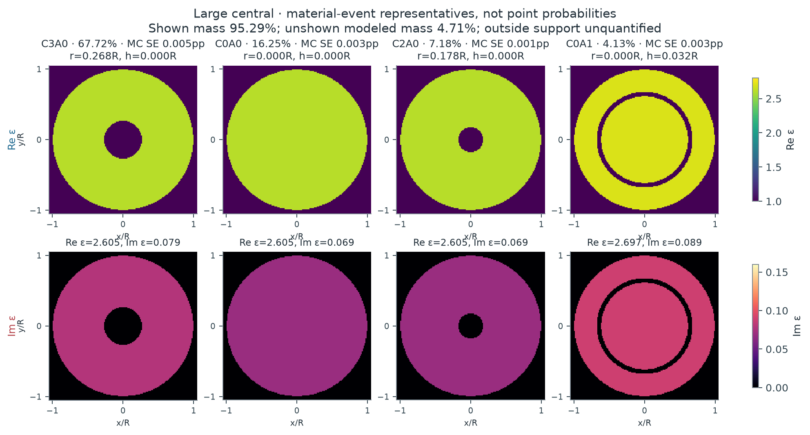
概率属于整个材料事件；图中材料仅是该事件的代表。C 表示中心空腔半径分箱，A 表示环形空腔半宽分箱；不同分箱不自动等于分离的 posterior mode。所有图共用实部与损耗色标。
| 不重叠材料事件 | 后验质量 | 先验与 evidence 信息 | 代表材料 | 事件内部的不确定性 | ||||||||||||||||||||
|---|---|---|---|---|---|---|---|---|---|---|---|---|---|---|---|---|---|---|---|---|---|---|---|---|
| C3A0 {"central_radius_bin":3,"annular_halfwidth_bin":0,"central_edges":[0,0.1,0.2,0.2925518253046813],"annular_edges":[0,0.06,0.11702073012187252],"zero_is_atom":true,"disjoint":true} | 67.72% 误差：{"MC_residual_SE":4.5824751483708256e-05,"MC_interval95":[0.6771317130016182,0.6773151565435692],"qu… | 18.09% 事件 odds 倍率 9.5 | r=0.2682R h=0.0000R ε=2.6054+0.0789i | 条件材料分布与预测
Forward prediction、补偿与数值误差{
"forward_prediction": {
"unscaled_field": [
0.9868961602023154,
0.953783034513312,
0.8580478387663776,
0.7469725121128755,
0.6756564676428228,
0.4909930801515703,
0.4750878337121426,
0.2661095531723704,
0.28738789862828734,
0.11922755690667067,
0.13306495143702965,
0.05435366860473283,
0.021740509967879944,
0.045722802983868105,
-0.04439796298557881,
0.05863092719821203,
0.5827181804107365,
0.5736084065342919,
0.5323779288342485,
0.4992840926813979,
0.4564110857370956,
0.3928935917508488,
0.36505204851744844,
0.27431431559739466,
0.26992025471495107,
0.16196169459687423,
0.1823764956038731,
0.06884106989450785,
0.11226581702181042,
0.0015222131489345716,
0.0670862198808842,
-0.038376220091649184,
1.2443913580112151,
1.1788128952934018,
0.7759858941861212,
0.578177000464805,
0.2539058141552393,
-0.027441774912422293,
-0.11053804609480497,
-0.39069818645922183,
-0.22582947134695538,
-0.4865368630977748,
-0.13081142992484981,
-0.43461094025764685,
0.06200294398738017,
-0.35827683229008594,
0.23327726244133476,
-0.31288485786432974,
1.7338455633649061,
1.741178309341683,
1.2810966629602167,
1.3155420064379195,
0.7007512351604326,
0.7892244017413195,
0.171587158927875,
0.33547026364450067,
-0.17660935911888131,
0.06257313050086488,
-0.3075266619844195,
-0.017192292553690435,
-0.2770618170458293,
0.03144465856325443,
-0.1920095285940205,
0.11339950980401553
],
"packing": "each frequency real32: Re16 then Im16",
"frequencies": [
1.6,
2.4
],
"posterior_gain_mean": 0.9597219814926092,
"posterior_gain_SD": 0.0200371927881657,
"gain_support": [
0.7,
1.3
],
"gain_used_for_both_frequencies": true,
"mean_prediction": [
0.9471459383968137,
0.9153665437971495,
0.8234873720363187,
0.716885939445481,
0.648442363934467,
0.47121685178222456,
0.45595223715324873,
0.25539118766470015,
0.27581248352853704,
0.1144253071629928,
0.1277053588603639,
0.05216441053472681,
0.020864845305033564,
0.04388117907907409,
-0.042609701010755216,
0.05626938962741696,
0.5592474467555598,
0.5505045965199088,
0.5109348007637363,
0.47917391875593074,
0.43802775157879853,
0.3770686163908729,
0.35034847535110175,
0.26326547851692056,
0.25904840170002263,
0.15543819846441295,
0.1750307317386272,
0.06606828800722828,
0.1077439723660586,
0.0014609014195495914,
0.06438411987493106,
-0.03683050198855404,
1.1942697398628024,
1.1313326476800234,
0.7447307199786184,
0.554889176539536,
0.24367899107356042,
-0.026336474594624095,
-0.1060857926284276,
-0.3749616376742133,
-0.21673350772052843,
-0.46694012232139476,
-0.12554260472935846,
-0.4171056727624348,
0.059505588261943757,
-0.3438461514083365,
0.22388131654736923,
-0.3002824757685879,
1.664009699674737,
1.6710470971733513,
1.2294966278597486,
1.2625545811553631,
0.6725263639415637,
0.7574360066814982,
0.16467596816494745,
0.3219581861567482,
-0.16949588408371258,
0.06005280879248567,
-0.295140097401495,
-0.016499821076028414,
-0.26590231605116604,
0.030178130023685083,
-0.1842757652477152,
0.10883200224940036
],
"whitened_residual_C": 4.777789107930285,
"marginal_log_likelihood_C": 52.756334229010164,
"likelihood_status": "full vector-Mie n14; proper bounded-gain marginal",
"new_or_paid_cache_cost": "sole PHYSICS_LEDGER receipt"
},
"compensation_diagnostics": {
"raw_material_parameters": [
-2.4055919864693034,
-0.4817322798739514,
2.605369529036163,
0.07892609419276742
],
"gain_is_instrument_nuisance": true,
"minimum_residual_is_not_evidence": true
},
"indistinguishable_from": [
{
"hypothesis_id": "large_cavity-E0",
"raw_noise_distance": 2.043514309184547,
"conditional_gain_adjusted_noise_distance": 1.3555118761370368,
"material_distance": 0.14860986790247968,
"frequencies": [
1.6
],
"noise_scale": "fixed sigma, joint real-channel whitened norm",
"status": "representative posterior worlds; not global compensation minimum or exact equivalence"
},
{
"hypothesis_id": "large_cavity-E6",
"raw_noise_distance": 1.408439544816729,
"conditional_gain_adjusted_noise_distance": 0.8779186586894927,
"material_distance": 0.12486254490443713,
"frequencies": [
1.6
],
"noise_scale": "fixed sigma, joint real-channel whitened norm",
"status": "representative posterior worlds; not global compensation minimum or exact equivalence"
},
{
"hypothesis_id": "large_cavity-E1",
"raw_noise_distance": 2.174609733212809,
"conditional_gain_adjusted_noise_distance": 1.0469258373388552,
"material_distance": 0.3461079399304854,
"frequencies": [
1.6
],
"noise_scale": "fixed sigma, joint real-channel whitened norm",
"status": "representative posterior worlds; not global compensation minimum or exact equivalence"
}
],
"mass_error": {
"MC_residual_SE": 4.5824751483708256e-05,
"MC_interval95": [
0.6771317130016182,
0.6773151565435692
],
"quadrature_refinement_max": 1.3500758197282359e-05,
"interval_scope": "residual Monte Carlo only, cubature and untested full-field discrepancy separate"
}
} | ||||||||||||||||||||
| C0A0 {"central_radius_bin":0,"annular_halfwidth_bin":0,"central_edges":[0,0.1,0.2,0.2925518253046813],"annular_edges":[0,0.06,0.11702073012187252],"zero_is_atom":true,"disjoint":true} | 16.25% 误差：{"MC_residual_SE":2.6264171555446354e-05,"MC_interval95":[0.1624910112587828,0.1625933844866887],"qu… | 25.00% 事件 odds 倍率 0.582 | r=0.0000R h=0.0000R ε=2.6054+0.0692i | 条件材料分布与预测
Forward prediction、补偿与数值误差{
"forward_prediction": {
"unscaled_field": [
1.0025464908449875,
0.9690416626908085,
0.8725896174147885,
0.760056695657429,
0.6885097532842475,
0.500933946029697,
0.48588611997957043,
0.27250469709223624,
0.2960187695714982,
0.12222335685139611,
0.13967723026551485,
0.05450494755912785,
0.026720081500275605,
0.04380480636332427,
-0.04047787976080096,
0.05548272199869657,
0.6102922513719048,
0.5995634935620962,
0.5602683979362415,
0.520846688786638,
0.4846805511954186,
0.4074993400671941,
0.39362218539268307,
0.2800554321483385,
0.29862631717716154,
0.1579292345272602,
0.21105103482278484,
0.05535892271833327,
0.14080907359724995,
-0.019821242747141234,
0.09549581423877504,
-0.06491565611831637,
1.206252479288147,
1.143835841052462,
0.7322763673787924,
0.5464144377724838,
0.20394939357493314,
-0.052949962032980476,
-0.16441856461706927,
-0.4064821598216954,
-0.2794227317031297,
-0.48970621771853334,
-0.1800005503832444,
-0.42401453260407074,
0.019328498242626353,
-0.33523451307316154,
0.196256474128396,
-0.2811838392130816,
1.8141666862725758,
1.8162531066662573,
1.3604989632552205,
1.3750291935749643,
0.7780199769553023,
0.825485330201065,
0.2454335368765044,
0.34496802736363663,
-0.10685513168493514,
0.04647907044277721,
-0.2415786007560011,
-0.05397556402625236,
-0.21391393609419618,
-0.019447951653128306,
-0.13044563765723297,
0.054745941602864445
],
"packing": "each frequency real32: Re16 then Im16",
"frequencies": [
1.6,
2.4
],
"posterior_gain_mean": 0.9320438297463353,
"posterior_gain_SD": 0.019473739804163222,
"gain_support": [
0.7,
1.3
],
"gain_used_for_both_frequencies": true,
"mean_prediction": [
0.9344172708259114,
0.9031893024780976,
0.8132917688121689,
0.7084061534448949,
0.6417212672687544,
0.4668923935074628,
0.45286716008634614,
0.2539863215017129,
0.27590246766821713,
0.11391752560422821,
0.1301853006250312,
0.05080100006313269,
0.02490428709265108,
0.04082799948416939,
-0.0377271580722686,
0.05171232869641639,
0.5688191272331833,
0.5588194547157084,
0.5221947032983383,
0.48545194252739565,
0.45174351713974265,
0.37980724553533185,
0.3668731291465183,
0.26102393752080233,
0.27833281632484547,
0.14719696857769476,
0.19670881476815555,
0.05159694234102675,
0.13124022821861442,
-0.018474267000377288,
0.08900628442785251,
-0.06050423673901171,
1.1242801804367366,
1.0661051378956572,
0.682513669884464,
0.5092822052101563,
0.1900897738620233,
-0.04935168539814217,
-0.15324530864708855,
-0.3788591889637749,
-0.26043423297476775,
-0.45642765861297446,
-0.16776840233564727,
-0.39520012883640043,
0.018015007525302777,
-0.3124532594278574,
0.18291963575914277,
-0.26207566236293833,
1.69088286607171,
1.6928275013258975,
1.2680446640783143,
1.2815874755926246,
0.7251487189405755,
0.7693885085600187,
0.22875481365856556,
0.32152532136404244,
-0.09959366616367593,
0.04332053081853576,
-0.2251618442333842,
-0.05030759140774677,
-0.19937716423334742,
-0.01812634333950328,
-0.12158105169575018,
0.051025617074603
],
"whitened_residual_C": 5.107757133802375,
"marginal_log_likelihood_C": 51.03028222860539,
"likelihood_status": "full vector-Mie n14; proper bounded-gain marginal",
"new_or_paid_cache_cost": "sole PHYSICS_LEDGER receipt"
},
"compensation_diagnostics": {
"raw_material_parameters": [
-0.43308992833535886,
0.6136048836294565,
2.605369529036163,
0.06923856777481138
],
"gain_is_instrument_nuisance": true,
"minimum_residual_is_not_evidence": true
},
"indistinguishable_from": [
{
"hypothesis_id": "large_cavity-E9",
"raw_noise_distance": 2.043514309184547,
"conditional_gain_adjusted_noise_distance": 1.3555118761370368,
"material_distance": 0.14860986790247968,
"frequencies": [
1.6
],
"noise_scale": "fixed sigma, joint real-channel whitened norm",
"status": "representative posterior worlds; not global compensation minimum or exact equivalence"
},
{
"hypothesis_id": "large_cavity-E6",
"raw_noise_distance": 0.6545180982621984,
"conditional_gain_adjusted_noise_distance": 0.489049026320477,
"material_distance": 0.0805868334033537,
"frequencies": [
1.6
],
"noise_scale": "fixed sigma, joint real-channel whitened norm",
"status": "representative posterior worlds; not global compensation minimum or exact equivalence"
}
],
"mass_error": {
"MC_residual_SE": 2.6264171555446354e-05,
"MC_interval95": [
0.1624910112587828,
0.1625933844866887
],
"quadrature_refinement_max": 1.3500758197282359e-05,
"interval_scope": "residual Monte Carlo only, cubature and untested full-field discrepancy separate"
}
} | ||||||||||||||||||||
| C2A0 {"central_radius_bin":2,"annular_halfwidth_bin":0,"central_edges":[0,0.1,0.2,0.2925518253046813],"annular_edges":[0,0.06,0.11702073012187252],"zero_is_atom":true,"disjoint":true} | 7.18% 误差：{"MC_residual_SE":1.2237934030106778e-05,"MC_interval95":[0.07180472912475189,0.07185200457163626],"… | 5.58% 事件 odds 倍率 1.31 | r=0.1785R h=0.0000R ε=2.6054+0.0692i | 条件材料分布与预测
Forward prediction、补偿与数值误差{
"forward_prediction": {
"unscaled_field": [
1.0001203671744372,
0.966753586834965,
0.8702050928630445,
0.7582009146382449,
0.6861887790176575,
0.49972076304947655,
0.48364279932761245,
0.27204729084092655,
0.2938577210662513,
0.12253106391023233,
0.13759314998450273,
0.0554949657188213,
0.024698501423225556,
0.04532486607444961,
-0.042458784147129884,
0.05733609541723153,
0.6004656850367835,
0.590291786902876,
0.5505067055331467,
0.5132354577563213,
0.4750182268871592,
0.40242617129288283,
0.3840817135843915,
0.2780858558370557,
0.28921546911828183,
0.15925057872223758,
0.20176194727954638,
0.059761589789880006,
0.13161921322055,
-0.01291463242553954,
0.08637070386370475,
-0.056378573938135446,
1.2267025578190969,
1.1631629408709012,
0.7526029473021688,
0.5623741921161425,
0.22408592377296024,
-0.04217877441423963,
-0.1445165131027285,
-0.4021214434323893,
-0.2597717820774714,
-0.4922183253616584,
-0.16058698283785058,
-0.4330284527436734,
0.03854756755507992,
-0.3495769734897068,
0.21534813263539182,
-0.29901676639240043,
1.7893849127972576,
1.7930907958180897,
1.3359483189461319,
1.3566703268415798,
0.7538117282826763,
0.8142131441545313,
0.22162594524093887,
0.34193932861844306,
-0.13025976188846888,
0.051680223246868585,
-0.26462655684978353,
-0.04154942869067851,
-0.23668688232964194,
-0.0014955778949731953,
-0.1530467128092356,
0.07612952715248195
],
"packing": "each frequency real32: Re16 then Im16",
"frequencies": [
1.6,
2.4
],
"posterior_gain_mean": 0.9395201566229846,
"posterior_gain_SD": 0.019623090922708836,
"gain_support": [
0.7,
1.3
],
"gain_used_for_both_frequencies": true,
"mean_prediction": [
0.939633244009564,
0.9082844813190185,
0.8175752251408064,
0.7123450420726141,
0.6446881891356041,
0.46949772956800156,
0.4543921585738572,
0.25559391329972597,
0.27608525212103774,
0.11512040435612242,
0.1292715378236898,
0.05213863888393415,
0.023204739925501882,
0.0425836252731827,
-0.039890883531932965,
0.05386841734654776,
0.5641496144524866,
0.5545910320842515,
0.5172121462045053,
0.48219505765568815,
0.44628919892379626,
0.3780874994822773,
0.36085251170283184,
0.2612672668306673,
0.2717237628437981,
0.1496191286634176,
0.1895594163086378,
0.05614721819942662,
0.12365890381956515,
-0.012133557479171183,
0.08114701722166531,
-0.05296880661653753,
1.1525117792520136,
1.0928150283850806,
0.7070856389242535,
0.5283618890576827,
0.2105332422001778,
-0.039627808743831955,
-0.1357761770248831,
-0.377801201515059,
-0.24406082538365778,
-0.46244903813648847,
-0.1508747072674299,
-0.40683895974394474,
0.036216216706783766,
-0.3284346128848383,
0.20232391130207059,
-0.28093227919388647,
1.6811631935300853,
1.6846449453262438,
1.2551503738564829,
1.2746191179599569,
0.7082213130203827,
0.7649696607205579,
0.2082220427844839,
0.3212588915791578,
-0.12238167189112696,
0.048554611439208785,
-0.24862198413810976,
-0.0390365257510618,
-0.22237209675695113,
-0.00140512557812709,
-0.14379047158916597,
0.0715252252739336
],
"whitened_residual_C": 4.952862696361451,
"marginal_log_likelihood_C": 51.83842778890643,
"likelihood_status": "full vector-Mie n14; proper bounded-gain marginal",
"new_or_paid_cache_cost": "sole PHYSICS_LEDGER receipt"
},
"compensation_diagnostics": {
"raw_material_parameters": [
-1.4081252503028556,
0.041830024453951786,
2.605369529036163,
0.06923856777481138
],
"gain_is_instrument_nuisance": true,
"minimum_residual_is_not_evidence": true
},
"indistinguishable_from": [
{
"hypothesis_id": "large_cavity-E9",
"raw_noise_distance": 1.408439544816729,
"conditional_gain_adjusted_noise_distance": 0.8779186586894927,
"material_distance": 0.12486254490443713,
"frequencies": [
1.6
],
"noise_scale": "fixed sigma, joint real-channel whitened norm",
"status": "representative posterior worlds; not global compensation minimum or exact equivalence"
},
{
"hypothesis_id": "large_cavity-E0",
"raw_noise_distance": 0.6545180982621984,
"conditional_gain_adjusted_noise_distance": 0.489049026320477,
"material_distance": 0.0805868334033537,
"frequencies": [
1.6
],
"noise_scale": "fixed sigma, joint real-channel whitened norm",
"status": "representative posterior worlds; not global compensation minimum or exact equivalence"
},
{
"hypothesis_id": "large_cavity-E1",
"raw_noise_distance": 3.3728804933126844,
"conditional_gain_adjusted_noise_distance": 1.5722344272351454,
"material_distance": 0.32017630834160227,
"frequencies": [
1.6
],
"noise_scale": "fixed sigma, joint real-channel whitened norm",
"status": "representative posterior worlds; not global compensation minimum or exact equivalence"
}
],
"mass_error": {
"MC_residual_SE": 1.2237934030106778e-05,
"MC_interval95": [
0.07180472912475189,
0.07185200457163626
],
"quadrature_refinement_max": 1.3500758197282359e-05,
"interval_scope": "residual Monte Carlo only, cubature and untested full-field discrepancy separate"
}
} | ||||||||||||||||||||
| C0A1 {"central_radius_bin":0,"annular_halfwidth_bin":1,"central_edges":[0,0.1,0.2,0.2925518253046813],"annular_edges":[0,0.06,0.11702073012187252],"zero_is_atom":true,"disjoint":true} | 4.13% 误差：{"MC_residual_SE":3.1321872713998704e-05,"MC_interval95":[0.04119877071501471,0.041325040443916466],… | 3.32% 事件 odds 倍率 1.25 | r=0.0000R h=0.0316R ε=2.6973+0.0893i | 条件材料分布与预测
Forward prediction、补偿与数值误差{
"forward_prediction": {
"unscaled_field": [
0.9598437165967717,
0.9284735569708936,
0.8343611139022733,
0.7290894858455075,
0.657286202882194,
0.4819426661289994,
0.4634477825445309,
0.2637732978104195,
0.283086797330625,
0.11919732557631413,
0.13575809644103828,
0.05210981805122008,
0.030164251352156467,
0.0386570027682177,
-0.03223469132444466,
0.04700766539815908,
0.543036590372729,
0.5346519018607055,
0.4960533422616581,
0.465529512878871,
0.42529974510885893,
0.36647887197613194,
0.34044220431396216,
0.25585238352088846,
0.2523452881271139,
0.15067957364404722,
0.17150951564724393,
0.06309106309437514,
0.1069297398156045,
-0.0005928790573531448,
0.06538778566103842,
-0.038543710787999716,
1.234046121017499,
1.1771703871176058,
0.766191227881877,
0.5974503523584647,
0.24495036525708624,
0.012589835745022784,
-0.11994754322381836,
-0.33976142465287407,
-0.23929873335112872,
-0.4353568539536853,
-0.15283384164872613,
-0.3875683343783644,
0.028915588298178262,
-0.3135344532441821,
0.19077958518715932,
-0.26750344982371566,
1.6527866141566285,
1.6692727165147878,
1.2308758044362964,
1.2951418623265727,
0.6920930012587135,
0.8262824651370547,
0.2041126119060525,
0.4086928399585443,
-0.11265614193725222,
0.13448715545897066,
-0.22616692380713238,
0.017874835941167382,
-0.19048670892021624,
0.01215627444467565,
-0.10647770758136613,
0.04733649983321
],
"packing": "each frequency real32: Re16 then Im16",
"frequencies": [
1.6,
2.4
],
"posterior_gain_mean": 0.9966879919539153,
"posterior_gain_SD": 0.020819905311842638,
"gain_support": [
0.7,
1.3
],
"gain_used_for_both_frequencies": true,
"mean_prediction": [
0.9566647064844194,
0.9253984450796292,
0.8315977031796888,
0.7266747356020714,
0.6551092656896677,
0.48034646814102866,
0.4619128397598033,
0.26289967852572915,
0.2821492115801256,
0.1188025430749336,
0.13530846453330442,
0.05193722991455443,
0.030064347108974005,
0.038528970464011845,
-0.03212792976741505,
0.04685197563213272,
0.5412380488160962,
0.5328811304598884,
0.4944104096008003,
0.4639876753865263,
0.4238911489310606,
0.36526509100342697,
0.3393146569940475,
0.25500499836805735,
0.2515095185024453,
0.15018052168375753,
0.17094147475144017,
0.06288210498577053,
0.10657558765696948,
-0.0005909154371448361,
0.0651712207888134,
-0.038416053707743904,
1.2299589503354496,
1.1732715893238597,
0.7636535963702927,
0.5954715919843173,
0.2441390876764634,
0.012548138107736384,
-0.11955027599555298,
-0.33863613208067456,
-0.23850617402085192,
-0.4339149485504726,
-0.15232765473547152,
-0.38628470493649564,
0.028819819637077426,
-0.31249602461231263,
0.19014772166599075,
-0.2666174762455441,
1.6473125715920807,
1.6637440718465812,
1.2267991338682724,
1.290852342057726,
0.6898007836699058,
0.8235458109641821,
0.2034365892931123,
0.4073392459842244,
-0.11228302388871518,
0.1340417329179955,
-0.22541785713572493,
0.017815634340707792,
-0.1898558154076003,
0.01211601276590447,
-0.106125052557128,
0.04717972096488892
],
"whitened_residual_C": 5.0306406878839836,
"marginal_log_likelihood_C": 51.590422836848816,
"likelihood_status": "full vector-Mie n14; proper bounded-gain marginal",
"new_or_paid_cache_cost": "sole PHYSICS_LEDGER receipt"
},
"compensation_diagnostics": {
"raw_material_parameters": [
-0.42664858457032073,
-1.0647207880432024,
2.697301347765007,
0.08929094911024912
],
"gain_is_instrument_nuisance": true,
"minimum_residual_is_not_evidence": true
},
"indistinguishable_from": [
{
"hypothesis_id": "large_cavity-E9",
"raw_noise_distance": 2.174609733212809,
"conditional_gain_adjusted_noise_distance": 1.0469258373388552,
"material_distance": 0.3461079399304854,
"frequencies": [
1.6
],
"noise_scale": "fixed sigma, joint real-channel whitened norm",
"status": "representative posterior worlds; not global compensation minimum or exact equivalence"
},
{
"hypothesis_id": "large_cavity-E6",
"raw_noise_distance": 3.3728804933126844,
"conditional_gain_adjusted_noise_distance": 1.5722344272351454,
"material_distance": 0.32017630834160227,
"frequencies": [
1.6
],
"noise_scale": "fixed sigma, joint real-channel whitened norm",
"status": "representative posterior worlds; not global compensation minimum or exact equivalence"
}
],
"mass_error": {
"MC_residual_SE": 3.1321872713998704e-05,
"MC_interval95": [
0.04119877071501471,
0.041325040443916466
],
"quadrature_refinement_max": 1.3500758197282359e-05,
"interval_scope": "residual Monte Carlo only, cubature and untested full-field discrepancy separate"
}
} |
数值状态：EMPIRICAL_FULL_MIE_RESIDUAL_REFERENCE; no uniform/continuum certificate
未探索质量：declared radial support integrated; no guarantee for omitted modes outside tested support
模型适用性：radial concentric 3D vector model only; finite noise/frequency/calibration assumptions, no real-world certification
实心观测
Target：joint-p2-radial-v1:C:full-vector-Mie-n14
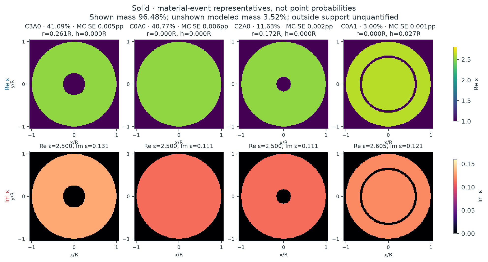
概率属于整个材料事件；图中材料仅是该事件的代表。C 表示中心空腔半径分箱，A 表示环形空腔半宽分箱；不同分箱不自动等于分离的 posterior mode。所有图共用实部与损耗色标。
| 不重叠材料事件 | 后验质量 | 先验与 evidence 信息 | 代表材料 | 事件内部的不确定性 | ||||||||||||||||||||
|---|---|---|---|---|---|---|---|---|---|---|---|---|---|---|---|---|---|---|---|---|---|---|---|---|
| C3A0 {"central_radius_bin":3,"annular_halfwidth_bin":0,"central_edges":[0,0.1,0.2,0.2925518253046813],"annular_edges":[0,0.06,0.11702073012187252],"zero_is_atom":true,"disjoint":true} | 41.09% 误差：{"MC_residual_SE":5.027480342586927e-05,"MC_interval95":[0.41078431891926975,0.4109816481211618],"qu… | 18.09% 事件 odds 倍率 3.16 | r=0.2613R h=0.0000R ε=2.5000+0.1308i | 条件材料分布与预测
Forward prediction、补偿与数值误差{
"forward_prediction": {
"unscaled_field": [
0.9100599929256082,
0.876778525441695,
0.7935618176647283,
0.6810823340818406,
0.6289179682705017,
0.43895368202717655,
0.44829434052683353,
0.2262982324635584,
0.2797702987340265,
0.08732647785990238,
0.14169023111419893,
0.025683244088508195,
0.04242689129512881,
0.01703021535447458,
-0.01637643637885642,
0.02876474978937695,
0.5413034744956569,
0.5310368721794971,
0.4947279815216409,
0.45737294862051775,
0.42500765609216845,
0.3530368824684761,
0.3420475284952629,
0.23843946960616344,
0.25666888148682376,
0.13174122696878063,
0.17898551647623467,
0.044951556632859976,
0.11736746338083667,
-0.01666482823163601,
0.07793480943278726,
-0.05264572591610825,
1.1836223882500834,
1.1168578179815225,
0.7589154971392198,
0.5568897439174525,
0.2822199282072389,
-0.005315727666740936,
-0.057805879298219794,
-0.33882616896067763,
-0.17908861132146364,
-0.4217512076100926,
-0.11457801407569328,
-0.3672746284304006,
0.038614611076884686,
-0.2912657619267754,
0.17797495574852315,
-0.24576055274363875,
1.5896604630278186,
1.5885681191142,
1.1926526132624322,
1.1988606356621343,
0.6811540841277078,
0.7232889145175488,
0.20752506203827373,
0.3220828260049063,
-0.11857990271369821,
0.09043585148527018,
-0.26522047286650785,
0.03359213739871137,
-0.27469610288389956,
0.0886592304343063,
-0.22918025645853504,
0.16865714802277001
],
"packing": "each frequency real32: Re16 then Im16",
"frequencies": [
1.6,
2.4
],
"posterior_gain_mean": 1.0602365986851672,
"posterior_gain_SD": 0.021704680586979587,
"gain_support": [
0.7,
1.3
],
"gain_used_for_both_frequencies": true,
"mean_prediction": [
0.9648789114988942,
0.929592681614499,
0.8413632824072704,
0.7221084173114853,
0.6668018475311026,
0.46539475881282405,
0.4752980668099801,
0.23992966827562845,
0.29662270994289736,
0.09258672786133847,
0.15022516870343353,
0.027230315355600856,
0.0449825429195327,
0.018056057602304037,
-0.017362897204902767,
0.030497440478718895,
0.5739097546557383,
0.5630247271359999,
0.5245287124028828,
0.48492353937602345,
0.45060867171031593,
0.37430262347879223,
0.3626513082004853,
0.252802252247534,
0.2721297418959163,
0.1396768703879906,
0.189766995202671,
0.04765928551002713,
0.12443728017120419,
-0.01766866080198231,
0.08262933727219504,
-0.05581692538060617,
1.2549197750458827,
1.184133534151667,
0.8046299853763491,
0.5904348879336936,
0.29921989676361505,
-0.00563592902092205,
-0.061287908851149875,
-0.3592359049243946,
-0.18987630013071854,
-0.44715606584788636,
-0.12147980392771425,
-0.38939800283040654,
0.0409406239077068,
-0.308810620738688,
0.18869556173395732,
-0.2605643325319022,
1.6854162023849024,
1.684258059389333,
1.2644939500983372,
1.2710759226519588,
0.7221844893360712,
0.7668573785947727,
0.22002566591738765,
0.3414839999383483,
-0.12572275272558942,
0.09588339957793979,
-0.28119645205365795,
0.03561561349817454,
-0.2912428617936964,
0.09399976091771338,
-0.24298529559339152,
0.17881648096360245
],
"whitened_residual_C": 4.826986310620118,
"marginal_log_likelihood_C": 52.555427288575416,
"likelihood_status": "full vector-Mie n14; proper bounded-gain marginal",
"new_or_paid_cache_cost": "sole PHYSICS_LEDGER receipt"
},
"compensation_diagnostics": {
"raw_material_parameters": [
-2.2764497041420118,
0.8386240851920006,
2.5,
0.1307614322251886
],
"gain_is_instrument_nuisance": true,
"minimum_residual_is_not_evidence": true
},
"indistinguishable_from": [
{
"hypothesis_id": "solid-E0",
"raw_noise_distance": 1.7946067313207255,
"conditional_gain_adjusted_noise_distance": 1.1833363181348702,
"material_distance": 0.134301897485488,
"frequencies": [
1.6
],
"noise_scale": "fixed sigma, joint real-channel whitened norm",
"status": "representative posterior worlds; not global compensation minimum or exact equivalence"
},
{
"hypothesis_id": "solid-E6",
"raw_noise_distance": 1.3281494675286039,
"conditional_gain_adjusted_noise_distance": 0.8343471572759306,
"material_distance": 0.11390331007310296,
"frequencies": [
1.6
],
"noise_scale": "fixed sigma, joint real-channel whitened norm",
"status": "representative posterior worlds; not global compensation minimum or exact equivalence"
},
{
"hypothesis_id": "solid-E1",
"raw_noise_distance": 0.9001102568655605,
"conditional_gain_adjusted_noise_distance": 0.9480051323404387,
"material_distance": 0.3048021968063627,
"frequencies": [
1.6
],
"noise_scale": "fixed sigma, joint real-channel whitened norm",
"status": "representative posterior worlds; not global compensation minimum or exact equivalence"
}
],
"mass_error": {
"MC_residual_SE": 5.027480342586927e-05,
"MC_interval95": [
0.41078431891926975,
0.4109816481211618
],
"quadrature_refinement_max": 8.152971882724458e-06,
"interval_scope": "residual Monte Carlo only, cubature and untested full-field discrepancy separate"
}
} | ||||||||||||||||||||
| C0A0 {"central_radius_bin":0,"annular_halfwidth_bin":0,"central_edges":[0,0.1,0.2,0.2925518253046813],"annular_edges":[0,0.06,0.11702073012187252],"zero_is_atom":true,"disjoint":true} | 40.77% 误差：{"MC_residual_SE":6.113631530465815e-05,"MC_interval95":[0.40755890392538274,0.40779499938891944],"q… | 25.00% 事件 odds 倍率 2.06 | r=0.0000R h=0.0000R ε=2.5000+0.1107i | 条件材料分布与预测
Forward prediction、补偿与数值误差{
"forward_prediction": {
"unscaled_field": [
0.930196956864539,
0.8965956644414481,
0.8120610143633572,
0.698401403076443,
0.6449255337207365,
0.4526389129706609,
0.46127417525571734,
0.2358483030974245,
0.2895623435824308,
0.09286943475475998,
0.14851845030816674,
0.02783293658921477,
0.046861407409863984,
0.0166816970824024,
-0.013493550984797693,
0.02691579000571832,
0.5586900342158397,
0.5470977080159103,
0.513405201978979,
0.4707825636021689,
0.4454500561312469,
0.3618455787768209,
0.36432604678386055,
0.24081017562993307,
0.28053303847079597,
0.1264302876792072,
0.20402154832348363,
0.03175870586447169,
0.1431482660509652,
-0.03668844073116993,
0.10410620893670369,
-0.07729911155735406,
1.1726709008092988,
1.108631251450508,
0.7376758057544961,
0.5457203683767289,
0.24899204834947694,
-0.018703584289089473,
-0.09959448634551264,
-0.35135972658502873,
-0.22268467329910974,
-0.42937056372360893,
-0.15313942012035747,
-0.3668439845986587,
0.008900100267582143,
-0.2820397131227633,
0.15630006304463995,
-0.2298026578823742,
1.6550745056551008,
1.649905680498842,
1.2597635689562745,
1.2503628127567323,
0.7487194225550919,
0.7584627307547683,
0.2728673576369145,
0.33652602456154224,
-0.057955285507657286,
0.08367566190701009,
-0.21035107083951024,
0.009089342468626093,
-0.22494178472516133,
0.05199970067856085,
-0.18278530822177186,
0.12542069028867073
],
"packing": "each frequency real32: Re16 then Im16",
"frequencies": [
1.6,
2.4
],
"posterior_gain_mean": 1.0292321342643207,
"posterior_gain_SD": 0.02107445347913589,
"gain_support": [
0.7,
1.3
],
"gain_used_for_both_frequencies": true,
"mean_prediction": [
0.9573885991998657,
0.9228050692852083,
0.8357992909660473,
0.7188171666615636,
0.6637780835129498,
0.4658705144478754,
0.4747582038794563,
0.24274265235958062,
0.2980268688879238,
0.0955842065405627,
0.15285996158830392,
0.02864655272856102,
0.04823126636308416,
0.017169338691271914,
-0.013887996278887756,
0.027702595992995738,
0.5750217363081751,
0.5630905416723335,
0.5284131317752292,
0.4845445427106886,
0.4584715119801247,
0.37242309731857576,
0.37497607469943556,
0.24784957101616192,
0.2887336179169521,
0.13012611482372247,
0.2099855336168903,
0.03268708061836299,
0.14733279538387173,
-0.03776092215657206,
0.10714945561409084,
-0.07955872956491133,
1.206950574029618,
1.141038909042531,
0.7592396439518525,
0.5616729394558919,
0.25627061733757706,
-0.019250329976252176,
-0.10250584574235072,
-0.3616307212876373,
-0.2291942215675957,
-0.4419219816915245,
-0.15761601221047597,
-0.3775676172105051,
0.009160269193570022,
-0.2902843358846384,
0.16086904747308264,
-0.23652028003188952,
1.703455865821865,
1.6981359448746494,
1.2965891467453041,
1.2869135863783507,
0.7706060892415271,
0.780634215134675,
0.2808438528717072,
0.34636339849496334,
-0.05964944219494416,
0.08612168009053171,
-0.21650008158493445,
0.009355043348043364,
-0.23151731317790317,
0.05351976291050103,
-0.18812851289325594,
0.12908700474671295
],
"whitened_residual_C": 4.943476561116301,
"marginal_log_likelihood_C": 52.018521985869725,
"likelihood_status": "full vector-Mie n14; proper bounded-gain marginal",
"new_or_paid_cache_cost": "sole PHYSICS_LEDGER receipt"
},
"compensation_diagnostics": {
"raw_material_parameters": [
0.21837590825520792,
-0.162098707349412,
2.5,
0.11070905088975086
],
"gain_is_instrument_nuisance": true,
"minimum_residual_is_not_evidence": true
},
"indistinguishable_from": [
{
"hypothesis_id": "solid-E9",
"raw_noise_distance": 1.7946067313207255,
"conditional_gain_adjusted_noise_distance": 1.1833363181348702,
"material_distance": 0.134301897485488,
"frequencies": [
1.6
],
"noise_scale": "fixed sigma, joint real-channel whitened norm",
"status": "representative posterior worlds; not global compensation minimum or exact equivalence"
},
{
"hypothesis_id": "solid-E6",
"raw_noise_distance": 0.5283650613836047,
"conditional_gain_adjusted_noise_distance": 0.4273297487351493,
"material_distance": 0.07115501122614686,
"frequencies": [
1.6
],
"noise_scale": "fixed sigma, joint real-channel whitened norm",
"status": "representative posterior worlds; not global compensation minimum or exact equivalence"
},
{
"hypothesis_id": "solid-E1",
"raw_noise_distance": 2.2252093285594956,
"conditional_gain_adjusted_noise_distance": 1.7150900466716943,
"material_distance": 0.269051182581895,
"frequencies": [
1.6
],
"noise_scale": "fixed sigma, joint real-channel whitened norm",
"status": "representative posterior worlds; not global compensation minimum or exact equivalence"
}
],
"mass_error": {
"MC_residual_SE": 6.113631530465815e-05,
"MC_interval95": [
0.40755890392538274,
0.40779499938891944
],
"quadrature_refinement_max": 8.152971882724458e-06,
"interval_scope": "residual Monte Carlo only, cubature and untested full-field discrepancy separate"
}
} | ||||||||||||||||||||
| C2A0 {"central_radius_bin":2,"annular_halfwidth_bin":0,"central_edges":[0,0.1,0.2,0.2925518253046813],"annular_edges":[0,0.06,0.11702073012187252],"zero_is_atom":true,"disjoint":true} | 11.63% 误差：{"MC_residual_SE":2.3313833529486063e-05,"MC_interval95":[0.11625570187580272,0.11634710143953013],"… | 5.58% 事件 odds 倍率 2.23 | r=0.1717R h=0.0000R ε=2.5000+0.1107i | 条件材料分布与预测
Forward prediction、补偿与数值误差{
"forward_prediction": {
"unscaled_field": [
0.9280653662372222,
0.8945871522363537,
0.8099594766257101,
0.6967722439065533,
0.6428699178895947,
0.4515762061420091,
0.45927469003117616,
0.2354561456913036,
0.2876223486192449,
0.0931615504236614,
0.1466341303525919,
0.028740619653720333,
0.04502231134135206,
0.018071594722791573,
-0.01530320799292984,
0.028610962820718677,
0.5508561955031488,
0.5397125916773166,
0.5056137944944679,
0.46473024346275116,
0.43772363463407155,
0.35783036446905736,
0.3566793053762942,
0.2392858210960104,
0.2729710460944173,
0.12754695340489558,
0.19653915199227368,
0.03534801481863224,
0.1357307269434068,
-0.031089935335109314,
0.09673098782430964,
-0.07039235309061796,
1.1864858312766284,
1.1216958805088546,
0.7514027526315641,
0.5565281563942557,
0.26258306415160865,
-0.011378168882812111,
-0.086172064281486,
-0.34834490723513784,
-0.20944387075222404,
-0.43098706139110515,
-0.14007132452701923,
-0.3728510120883732,
0.02182596283597505,
-0.2916515985099679,
0.16913240004259728,
-0.2417791157155141,
1.6355394483036323,
1.6316289241935042,
1.2403945797892617,
1.2358121158095456,
0.7295984883048189,
0.7494327828665541,
0.2540401756350826,
0.33395844633087307,
-0.07648259938580389,
0.08761132166978927,
-0.22860856038418717,
0.018785787294492796,
-0.2429878790675417,
0.06614200226304141,
-0.20069757241338246,
0.14234380446564412
],
"packing": "each frequency real32: Re16 then Im16",
"frequencies": [
1.6,
2.4
],
"posterior_gain_mean": 1.036478385758231,
"posterior_gain_SD": 0.02121994327791405,
"gain_support": [
0.7,
1.3
],
"gain_used_for_both_frequencies": true,
"mean_prediction": [
0.9619196926756775,
0.9272202474699887,
0.8395054908625976,
0.7221893706054048,
0.6663207747467336,
0.4680489771888957,
0.47602828934312535,
0.2440452058029772,
0.2981143476048661,
0.0965599333978506,
0.15198310672491647,
0.029789031064379336,
0.046664652582189076,
0.018730817326355974,
-0.015861444317434376,
0.029654644559407257,
0.5709505403000241,
0.5594004357950962,
0.5240577695347199,
0.481682852557302,
0.45369108623374815,
0.37088343854016803,
0.36969039066978854,
0.24801458158442571,
0.2829285892146773,
0.13219966037348646,
0.20370858299524341,
0.036637453338973974,
0.14068196476009348,
-0.03222404598946189,
0.10025957811293955,
-0.07296015250108712,
1.2297669191266125,
1.162613535541475,
0.7788127121018549,
0.5768294051685224,
0.27216167045930933,
-0.011793226116541631,
-0.08931548208392912,
-0.36105196713817633,
-0.21708404506422072,
-0.4467087736733362,
-0.1451809003367822,
-0.3864520151376797,
0.02262213872785056,
-0.3022905780274192,
0.17530207697556657,
-0.2505988275668686,
1.6952012872216564,
1.6911481135045223,
1.2856421717632331,
1.2808925468947419,
0.7562130634098242,
0.7767708810198248,
0.2633071511599879,
0.3461407113633501,
-0.07927256114999148,
0.0908072412584483,
-0.23694783163751537,
0.019471062490193376,
-0.25185168465474184,
0.06855475573641442,
-0.2080186958806183,
0.14753627667523608
],
"whitened_residual_C": 4.875293763118605,
"marginal_log_likelihood_C": 52.34955627024429,
"likelihood_status": "full vector-Mie n14; proper bounded-gain marginal",
"new_or_paid_cache_cost": "sole PHYSICS_LEDGER receipt"
},
"compensation_diagnostics": {
"raw_material_parameters": [
-1.3695762210618436,
0.7165135812675862,
2.5,
0.11070905088975086
],
"gain_is_instrument_nuisance": true,
"minimum_residual_is_not_evidence": true
},
"indistinguishable_from": [
{
"hypothesis_id": "solid-E9",
"raw_noise_distance": 1.3281494675286039,
"conditional_gain_adjusted_noise_distance": 0.8343471572759306,
"material_distance": 0.11390331007310296,
"frequencies": [
1.6
],
"noise_scale": "fixed sigma, joint real-channel whitened norm",
"status": "representative posterior worlds; not global compensation minimum or exact equivalence"
},
{
"hypothesis_id": "solid-E0",
"raw_noise_distance": 0.5283650613836047,
"conditional_gain_adjusted_noise_distance": 0.4273297487351493,
"material_distance": 0.07115501122614686,
"frequencies": [
1.6
],
"noise_scale": "fixed sigma, joint real-channel whitened norm",
"status": "representative posterior worlds; not global compensation minimum or exact equivalence"
},
{
"hypothesis_id": "solid-E1",
"raw_noise_distance": 1.7047422395195941,
"conditional_gain_adjusted_noise_distance": 1.2958858356020708,
"material_distance": 0.27957856943180737,
"frequencies": [
1.6
],
"noise_scale": "fixed sigma, joint real-channel whitened norm",
"status": "representative posterior worlds; not global compensation minimum or exact equivalence"
}
],
"mass_error": {
"MC_residual_SE": 2.3313833529486063e-05,
"MC_interval95": [
0.11625570187580272,
0.11634710143953013
],
"quadrature_refinement_max": 8.152971882724458e-06,
"interval_scope": "residual Monte Carlo only, cubature and untested full-field discrepancy separate"
}
} | ||||||||||||||||||||
| C0A1 {"central_radius_bin":0,"annular_halfwidth_bin":1,"central_edges":[0,0.1,0.2,0.2925518253046813],"annular_edges":[0,0.06,0.11702073012187252],"zero_is_atom":true,"disjoint":true} | 3.00% 误差：{"MC_residual_SE":7.234826282434632e-06,"MC_interval95":[0.029937353316634982,0.029966223486342335],… | 3.32% 事件 odds 倍率 0.899 | r=0.0000R h=0.0267R ε=2.6054+0.1211i | 条件材料分布与预测
Forward prediction、补偿与数值误差{
"forward_prediction": {
"unscaled_field": [
0.9158222687395781,
0.8839398407308141,
0.797896226013526,
0.6903239882795285,
0.6315501175948103,
0.4503626905332011,
0.44956144383143404,
0.23859767143788746,
0.2803510386676123,
0.0983476305438666,
0.14224656704644056,
0.03336258149632733,
0.043346991125815665,
0.020439688424156298,
-0.01505532034386593,
0.028640876482225637,
0.5240808148489555,
0.5146923692081056,
0.47922749096638717,
0.4449627326674855,
0.4120176835638307,
0.3456511374117859,
0.3319379033026819,
0.23565669266592124,
0.2494005480876679,
0.13210153272444466,
0.17419284589606915,
0.0467366810328761,
0.11446386713865098,
-0.01474042416127783,
0.07620546154467064,
-0.05109901170397406,
1.1971972849824273,
1.1378183736275262,
0.7574464931499494,
0.5802878390706071,
0.264919620378957,
0.01935569157336169,
-0.08507645395725466,
-0.3159023660360091,
-0.20868818987168128,
-0.40286697559022666,
-0.14121689477511315,
-0.35183172217329467,
0.01661101423457351,
-0.2764962456873093,
0.15958425230727474,
-0.22960111605247058,
1.5758632222380147,
1.5843469376319594,
1.1861965887255597,
1.2235199142774087,
0.6863600018812179,
0.776035149055812,
0.22798683200396996,
0.3847078273238328,
-0.0803949238249631,
0.13667428713734595,
-0.2087005603697478,
0.04167629115723169,
-0.20186796438658183,
0.05084342749249193,
-0.14499648845582103,
0.09425967491417972
],
"packing": "each frequency real32: Re16 then Im16",
"frequencies": [
1.6,
2.4
],
"posterior_gain_mean": 1.0626881523664746,
"posterior_gain_SD": 0.02175712485531754,
"gain_support": [
0.7,
1.3
],
"gain_used_for_both_frequencies": true,
"mean_prediction": [
0.9732334746629352,
0.9393523961493447,
0.847914866202497,
0.733599123639028,
0.6711408275936587,
0.4785950954975219,
0.4777436201204313,
0.2535549186192718,
0.297925727295707,
0.10451286179228225,
0.15116374151505577,
0.03545402008850802,
0.04606433391013902,
0.021721014726413076,
-0.01599911055950828,
0.030436320111052777,
0.556934472822553,
0.5469574828708851,
0.5092693769382914,
0.47285662425034775,
0.437846310888762,
0.36731936857950115,
0.35274647716112856,
0.250429575321942,
0.2650350076464699,
0.1403827337357195,
0.18511267356075176,
0.04966651721456836,
0.12163939548229463,
-0.015664474117046478,
0.08098264112914048,
-0.054302314335449055,
1.2722473707961355,
1.209146105198863,
0.8049294143219853,
0.6166650115426776,
0.2815269419061417,
0.020569064115871075,
-0.09040973966572641,
-0.3357057016910043,
-0.22177046691544103,
-0.4281219619394476,
-0.15006952099149587,
-0.37388740278025334,
0.017652328025872133,
-0.29382928446571355,
0.1695882942312031,
-0.24399438579908048,
1.674651176022395,
1.6836667198595892,
1.26055706121618,
1.3002201170870469,
0.7293866422574016,
0.8246833587215625,
0.24227890526618467,
0.4088244502196846,
-0.08543473305919351,
0.14524214567399119,
-0.2217836128971752,
0.04428890084736579,
-0.21452269409595795,
0.05403070802197507,
-0.1540860504167433,
0.10016863977721419
],
"whitened_residual_C": 4.876625656136626,
"marginal_log_likelihood_C": 52.31030335198412,
"likelihood_status": "full vector-Mie n14; proper bounded-gain marginal",
"new_or_paid_cache_cost": "sole PHYSICS_LEDGER receipt"
},
"compensation_diagnostics": {
"raw_material_parameters": [
0.1921355370319482,
-1.0454655491665332,
2.605369529036163,
0.1210739058072326
],
"gain_is_instrument_nuisance": true,
"minimum_residual_is_not_evidence": true
},
"indistinguishable_from": [
{
"hypothesis_id": "solid-E9",
"raw_noise_distance": 0.9001102568655605,
"conditional_gain_adjusted_noise_distance": 0.9480051323404387,
"material_distance": 0.3048021968063627,
"frequencies": [
1.6
],
"noise_scale": "fixed sigma, joint real-channel whitened norm",
"status": "representative posterior worlds; not global compensation minimum or exact equivalence"
},
{
"hypothesis_id": "solid-E0",
"raw_noise_distance": 2.2252093285594956,
"conditional_gain_adjusted_noise_distance": 1.7150900466716943,
"material_distance": 0.269051182581895,
"frequencies": [
1.6
],
"noise_scale": "fixed sigma, joint real-channel whitened norm",
"status": "representative posterior worlds; not global compensation minimum or exact equivalence"
},
{
"hypothesis_id": "solid-E6",
"raw_noise_distance": 1.7047422395195941,
"conditional_gain_adjusted_noise_distance": 1.2958858356020708,
"material_distance": 0.27957856943180737,
"frequencies": [
1.6
],
"noise_scale": "fixed sigma, joint real-channel whitened norm",
"status": "representative posterior worlds; not global compensation minimum or exact equivalence"
}
],
"mass_error": {
"MC_residual_SE": 7.234826282434632e-06,
"MC_interval95": [
0.029937353316634982,
0.029966223486342335
],
"quadrature_refinement_max": 8.152971882724458e-06,
"interval_scope": "residual Monte Carlo only, cubature and untested full-field discrepancy separate"
}
} |
数值状态：EMPIRICAL_FULL_MIE_RESIDUAL_REFERENCE; no uniform/continuum certificate
未探索质量：declared radial support integrated; no guarantee for omitted modes outside tested support
模型适用性：radial concentric 3D vector model only; finite noise/frequency/calibration assumptions, no real-world certification
小中心空腔观测
Target：joint-p2-radial-v1:C:tensor-Chebyshev-five-per-physical-axis-radial-v1
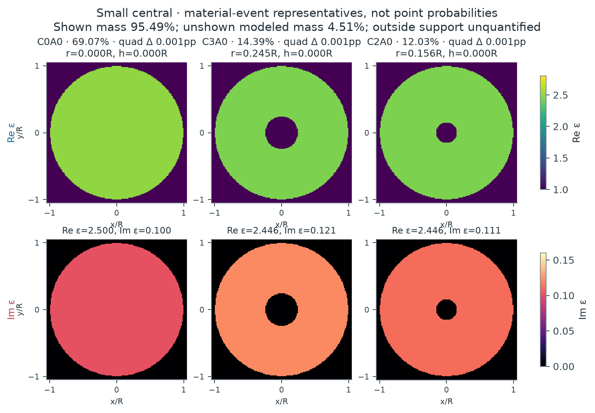
概率属于整个材料事件；图中材料仅是该事件的代表。C 表示中心空腔半径分箱，A 表示环形空腔半宽分箱；不同分箱不自动等于分离的 posterior mode。所有图共用实部与损耗色标。
| 不重叠材料事件 | 后验质量 | 先验与 evidence 信息 | 代表材料 | 事件内部的不确定性 | ||||||||||||||||||||
|---|---|---|---|---|---|---|---|---|---|---|---|---|---|---|---|---|---|---|---|---|---|---|---|---|
| C0A0 {"central_radius_bin":0,"annular_halfwidth_bin":0,"central_edges":[0,0.1,0.2,0.2925518253046813],"annular_edges":[0,0.06,0.11702073012187252],"zero_is_atom":true,"disjoint":true} | 69.07% 误差：{"MC_residual_SE":null,"MC_interval95":null,"quadrature_refinement_max":9.534985420778241e-06,"inter… | 25.00% 事件 odds 倍率 6.7 | r=0.0000R h=0.0000R ε=2.5000+0.1000i | 条件材料分布与预测
Forward prediction、补偿与数值误差{
"forward_prediction": {
"unscaled_field": [
0.9368724381129294,
0.9033305486096249,
0.8179759294888249,
0.7045587546860301,
0.649682910490642,
0.4579545207285162,
0.46462422173429935,
0.2402043680304319,
0.29142976905338586,
0.09629503516846286,
0.14900657700826178,
0.030471310934579214,
0.04623495176737606,
0.018741847555119463,
-0.014842788631288708,
0.028629657881659113,
0.5539561640686095,
0.5423933667323697,
0.5095528608401554,
0.46697091835176613,
0.4428345789544705,
0.35909237759080287,
0.3630513814289676,
0.23889599207160092,
0.28048778944372704,
0.12492292276076829,
0.2049609743604659,
0.030239433028186553,
0.1447774653996019,
-0.03846238381888501,
0.10613437495218743,
-0.07934453075322283,
1.1872840803882454,
1.123807957003643,
0.7463516494291516,
0.556272231617796,
0.2506175991007859,
-0.014102193722201435,
-0.1032812980603577,
-0.3522773413319034,
-0.2280535569091842,
-0.4341543563977992,
-0.15642104337179963,
-0.37352652828797533,
0.009907774944598378,
-0.2891309912680636,
0.161344985628353,
-0.2366503742470298,
1.6567624546306445,
1.6516673952580854,
1.2631943187854404,
1.253970743160666,
0.7535660019828337,
0.7634910033096115,
0.27778760513134415,
0.3417148657458987,
-0.05442670659228607,
0.08804422530738103,
-0.20903571842676893,
0.012502442864785163,
-0.22579866948585117,
0.0549061447909174,
-0.18513940620677596,
0.12825964091291756
],
"packing": "each frequency real32: Re16 then Im16",
"frequencies": [
1.6,
2.4
],
"posterior_gain_mean": 1.010129230635166,
"posterior_gain_SD": 0.021004201260420147,
"gain_support": [
0.7,
1.3
],
"gain_used_for_both_frequencies": true,
"mean_prediction": [
0.9463622351143055,
0.9124805920762827,
0.8262613963326314,
0.7116953928082702,
0.6562636985307275,
0.46259324768939225,
0.4693305076349305,
0.24263745347378643,
0.29438172839808074,
0.09727042978870563,
0.15051589899293508,
0.03077996187079142,
0.046703276257233584,
0.01893168805153439,
-0.01499313466060405,
0.028919654289348333,
0.5595673138162323,
0.547887394238986,
0.5147142392884139,
0.4717009744836664,
0.4473201525379269,
0.3627297071027502,
0.3667288126038772,
0.24131582467311094,
0.2833289149533504,
0.12618829585703112,
0.20703707134097138,
0.03054573521960571,
0.14624394973740923,
-0.038851978175364774,
0.10720943451439731,
-0.08014822980486123,
1.1993103546679589,
1.1351912669897675,
0.753911617421156,
0.5619068413477911,
0.2531561625633093,
-0.014245038094875402,
-0.10432745814871038,
-0.35584563976979733,
-0.23036356398428726,
-0.43855200600501454,
-0.15800546819630587,
-0.3773100646413571,
0.010008133082093534,
-0.29205966576239195,
0.16297928619961013,
-0.2390474604676763,
1.6735441836412819,
1.6683975152372383,
1.2759895053774495,
1.2666725020278906,
0.7611990458157377,
0.7712245797700088,
0.28060137985130995,
0.34517617443250365,
-0.05497800725607184,
0.088936045571614,
-0.2111530894297013,
0.012629082992065556,
-0.22808583628618695,
0.05546230179479241,
-0.18701472595190208,
0.12955881239690806
],
"whitened_residual_C": 4.431158819776256,
"marginal_log_likelihood_C": 54.43328815680596,
"likelihood_status": "full vector-Mie n14; proper bounded-gain marginal",
"new_or_paid_cache_cost": "sole PHYSICS_LEDGER receipt"
},
"compensation_diagnostics": {
"raw_material_parameters": [
-0.4871810781215391,
0.32922903487442956,
2.5,
0.1
],
"gain_is_instrument_nuisance": true,
"minimum_residual_is_not_evidence": true
},
"indistinguishable_from": [
{
"hypothesis_id": "small_cavity-E9",
"raw_noise_distance": 2.9947229132232516,
"conditional_gain_adjusted_noise_distance": 1.0703417601130236,
"material_distance": 0.1271942690928412,
"frequencies": [
1.6
],
"noise_scale": "fixed sigma, joint real-channel whitened norm",
"status": "representative posterior worlds; not global compensation minimum or exact equivalence"
},
{
"hypothesis_id": "small_cavity-E6",
"raw_noise_distance": 2.1845432548454102,
"conditional_gain_adjusted_noise_distance": 0.8820408740606601,
"material_distance": 0.07127231914982197,
"frequencies": [
1.6
],
"noise_scale": "fixed sigma, joint real-channel whitened norm",
"status": "representative posterior worlds; not global compensation minimum or exact equivalence"
}
],
"mass_error": {
"MC_residual_SE": null,
"MC_interval95": null,
"quadrature_refinement_max": 9.534985420778241e-06,
"interval_scope": "residual Monte Carlo only, cubature and untested full-field discrepancy separate"
}
} | ||||||||||||||||||||
| C3A0 {"central_radius_bin":3,"annular_halfwidth_bin":0,"central_edges":[0,0.1,0.2,0.2925518253046813],"annular_edges":[0,0.06,0.11702073012187252],"zero_is_atom":true,"disjoint":true} | 14.39% 误差：{"MC_residual_SE":null,"MC_interval95":null,"quadrature_refinement_max":9.534985420778241e-06,"inter… | 18.09% 事件 odds 倍率 0.761 | r=0.2452R h=0.0000R ε=2.4465+0.1211i | 条件材料分布与预测
Forward prediction、补偿与数值误差{
"forward_prediction": {
"unscaled_field": [
0.8931761418758575,
0.8600830466796652,
0.7803086972958702,
0.6682061544736307,
0.6206720372145296,
0.4304425716899862,
0.44532992578223124,
0.22094822669117956,
0.2814645505461311,
0.08304115108697765,
0.14693261278412645,
0.020555471152345538,
0.05001349491473821,
0.010085498402297277,
-0.007508148591373819,
0.020154650477836523,
0.5101781025482154,
0.4994289423390754,
0.46790183009425323,
0.42855684361015955,
0.40462589217426786,
0.328026461087642,
0.3293468888823003,
0.21735358916244452,
0.25188688617349336,
0.11398039283684006,
0.18141927188591156,
0.029559601782504025,
0.12553124243195285,
-0.03064018029228713,
0.08976823648821128,
-0.06593585486575952,
1.193127826356941,
1.1277427057788467,
0.7724257346595883,
0.5749167162124997,
0.2973496577551242,
0.017538117692337023,
-0.046183453194952984,
-0.31650888624465107,
-0.17524772320313217,
-0.4033368859924673,
-0.11958342060227728,
-0.35207117016833744,
0.02663325258746297,
-0.276434497766453,
0.1620221642542955,
-0.2294712123194126,
1.5308602579487907,
1.526540132356605,
1.163048361000529,
1.1581296686022324,
0.6856499458264029,
0.7087922679581747,
0.23688802139184256,
0.33032358131857825,
-0.082451498494948,
0.11298088574828369,
-0.2404861900772283,
0.06168730432044525,
-0.27150843935951896,
0.11649159705745259,
-0.2458232450703304,
0.19431947555844153
],
"packing": "each frequency real32: Re16 then Im16",
"frequencies": [
1.6,
2.4
],
"posterior_gain_mean": 1.0724080359606107,
"posterior_gain_SD": 0.02230884498681691,
"gain_support": [
0.7,
1.3
],
"gain_used_for_both_frequencies": true,
"mean_prediction": [
0.9578492720759642,
0.922359970852758,
0.8368093175100468,
0.7165896497358588,
0.6656136804049048,
0.4616100728998925,
0.47757539106260716,
0.23694665383486765,
0.3018448458437125,
0.08905399774109404,
0.15757171469438597,
0.02204385244673187,
0.053634873853040395,
0.0108157695332915,
-0.008051798884575623,
0.02161400913440925,
0.5471190969438428,
0.535591611155733,
0.5017816826337534,
0.4595878029534498,
0.4339240583254165,
0.35177821287810784,
0.35319425025600515,
0.23309173566268662,
0.2701255208855499,
0.1222334892201745,
0.19455548504857445,
0.03169995449135291,
0.13462071314814583,
-0.03285877556873065,
0.0962681781839703,
-0.07071014061597304,
1.2795198689133995,
1.2094003401731979,
0.8283555650317209,
0.6165453064743707,
0.3188801624667325,
0.018808018348885187,
-0.049527506334678326,
-0.3394266730617066,
-0.18793706664683973,
-0.43254171773765066,
-0.1282422212215398,
-0.37756395211858074,
0.028561714098564017,
-0.29645057682147974,
0.1737538709500365,
-0.24608677211296157,
1.6417068425570165,
1.6370739051555976,
1.2472624085477848,
1.2419875632934332,
0.735296511760192,
0.760114523985093,
0.254040617763421,
0.3542416630733316,
-0.08842164956297643,
0.12116160978640707,
-0.2578993227763705,
0.06615396086999319,
-0.2911678322002723,
0.1249265248062976,
-0.2636228234393369,
0.2083897671325242
],
"whitened_residual_C": 4.6266643047973455,
"marginal_log_likelihood_C": 53.49389247773372,
"likelihood_status": "full vector-Mie n14; proper bounded-gain marginal",
"new_or_paid_cache_cost": "sole PHYSICS_LEDGER receipt"
},
"compensation_diagnostics": {
"raw_material_parameters": [
-2.022315857780237,
-0.18933022408136524,
2.4464547455512458,
0.1210739058072326
],
"gain_is_instrument_nuisance": true,
"minimum_residual_is_not_evidence": true
},
"indistinguishable_from": [
{
"hypothesis_id": "small_cavity-E0",
"raw_noise_distance": 2.9947229132232516,
"conditional_gain_adjusted_noise_distance": 1.0703417601130236,
"material_distance": 0.1271942690928412,
"frequencies": [
1.6
],
"noise_scale": "fixed sigma, joint real-channel whitened norm",
"status": "representative posterior worlds; not global compensation minimum or exact equivalence"
},
{
"hypothesis_id": "small_cavity-E6",
"raw_noise_distance": 1.0337818035040385,
"conditional_gain_adjusted_noise_distance": 0.6932868221646412,
"material_distance": 0.10129912178576429,
"frequencies": [
1.6
],
"noise_scale": "fixed sigma, joint real-channel whitened norm",
"status": "representative posterior worlds; not global compensation minimum or exact equivalence"
}
],
"mass_error": {
"MC_residual_SE": null,
"MC_interval95": null,
"quadrature_refinement_max": 9.534985420778241e-06,
"interval_scope": "residual Monte Carlo only, cubature and untested full-field discrepancy separate"
}
} | ||||||||||||||||||||
| C2A0 {"central_radius_bin":2,"annular_halfwidth_bin":0,"central_edges":[0,0.1,0.2,0.2925518253046813],"annular_edges":[0,0.06,0.11702073012187252],"zero_is_atom":true,"disjoint":true} | 12.03% 误差：{"MC_residual_SE":null,"MC_interval95":null,"quadrature_refinement_max":9.534985420778241e-06,"inter… | 5.58% 事件 odds 倍率 2.32 | r=0.1556R h=0.0000R ε=2.4465+0.1107i | 条件材料分布与预测
Forward prediction、补偿与数值误差{
"forward_prediction": {
"unscaled_field": [
0.9044590551934046,
0.8711230601352964,
0.7907644008684173,
0.6777553043789271,
0.6298690307678725,
0.4378198296396519,
0.4529970149443817,
0.225848067439777,
0.2875204172553668,
0.08553216858695536,
0.15149004941652747,
0.02099792026391042,
0.053360452437482025,
0.00901256170223731,
-0.004945977798247498,
0.0181676425633313,
0.5205738587375851,
0.5090543223266131,
0.4789641342808082,
0.4365648592752855,
0.4166012502773433,
0.3332762850666005,
0.3422745986894609,
0.21880802060747656,
0.2656405997616893,
0.11096639222464401,
0.19578737959820064,
0.022004918193760457,
0.1402932168789019,
-0.042104265244146545,
0.10473878588841948,
-0.08003903737659127,
1.1881832676426307,
1.1239751223935521,
0.7625416620484947,
0.5694079784439199,
0.28169802404154876,
0.010589631269859826,
-0.06597852653907677,
-0.3233021713508146,
-0.195967493928319,
-0.40780604675435916,
-0.13795838743469718,
-0.35249854569804195,
0.012434047524328919,
-0.27235247317839767,
0.15163021791838527,
-0.22190430887688337,
1.5687316976115386,
1.5619371176453496,
1.202013210301106,
1.1876688127946853,
0.7250557781616588,
0.7287832830388268,
0.27517998774091096,
0.3383770384329329,
-0.04683888595383347,
0.10894924188736088,
-0.20835024645907424,
0.04759749632040916,
-0.24263198094230068,
0.0955186804456192,
-0.21918832419380965,
0.1696159354642324
],
"packing": "each frequency real32: Re16 then Im16",
"frequencies": [
1.6,
2.4
],
"posterior_gain_mean": 1.05407494048132,
"posterior_gain_SD": 0.021920543923184634,
"gain_support": [
0.7,
1.3
],
"gain_used_for_both_frequencies": true,
"mean_prediction": [
0.953367624770779,
0.918228987764018,
0.8335249387801237,
0.7144048821241166,
0.663929161117672,
0.4614949108689578,
0.47749280156571483,
0.23806078824440413,
0.3030680667056151,
0.09015731551253321,
0.15968186482223842,
0.022133381552412883,
0.056245915727095176,
0.009499915439870018,
-0.0052134312533096624,
0.019150056753629338,
0.5487238591649511,
0.5365814045081834,
0.5048640913347299,
0.46017207805683247,
0.43912893809053416,
0.3512981803454124,
0.36078307724186126,
0.23064005129866133,
0.2800050993832248,
0.11696689327961846,
0.20637457049696697,
0.02319483283538437,
0.14787956423156146,
-0.04438105088123349,
0.11040252950142149,
-0.08436714355891259,
1.2524342071213064,
1.184754010239468,
0.803776057038294,
0.6001986809878637,
0.296930827925301,
0.011162264950496622,
-0.06954631143472254,
-0.34078471702409147,
-0.2065644244987663,
-0.42985813446052357,
-0.14541847902412733,
-0.37155988357641545,
0.01310641790414891,
-0.28707991695545987,
0.15982961292749154,
-0.2339037711719493,
1.653560770791043,
1.6463987743175865,
1.267012003105899,
1.251891933158078,
0.7642631262113877,
0.7681921956929324,
0.29006032919965113,
0.3566747566464391,
-0.04937169592399835,
0.11484066565790486,
-0.21961677363561705,
0.05017132810099514,
-0.2557522908706204,
0.10068384740557029,
-0.2310409197787902,
0.1787879070791442
],
"whitened_residual_C": 4.47757745947077,
"marginal_log_likelihood_C": 54.20652429234451,
"likelihood_status": "full vector-Mie n14; proper bounded-gain marginal",
"new_or_paid_cache_cost": "sole PHYSICS_LEDGER receipt"
},
"compensation_diagnostics": {
"raw_material_parameters": [
-1.2899178912194815,
0.7587459380815418,
2.4464547455512458,
0.11070905088975086
],
"gain_is_instrument_nuisance": true,
"minimum_residual_is_not_evidence": true
},
"indistinguishable_from": [
{
"hypothesis_id": "small_cavity-E0",
"raw_noise_distance": 2.1845432548454102,
"conditional_gain_adjusted_noise_distance": 0.8820408740606601,
"material_distance": 0.07127231914982197,
"frequencies": [
1.6
],
"noise_scale": "fixed sigma, joint real-channel whitened norm",
"status": "representative posterior worlds; not global compensation minimum or exact equivalence"
},
{
"hypothesis_id": "small_cavity-E9",
"raw_noise_distance": 1.0337818035040385,
"conditional_gain_adjusted_noise_distance": 0.6932868221646412,
"material_distance": 0.10129912178576429,
"frequencies": [
1.6
],
"noise_scale": "fixed sigma, joint real-channel whitened norm",
"status": "representative posterior worlds; not global compensation minimum or exact equivalence"
}
],
"mass_error": {
"MC_residual_SE": null,
"MC_interval95": null,
"quadrature_refinement_max": 9.534985420778241e-06,
"interval_scope": "residual Monte Carlo only, cubature and untested full-field discrepancy separate"
}
} |
数值状态：EMPIRICAL_PROXY_REFERENCE; 13/17 and independent adaptive integration
未探索质量：declared radial support integrated; no guarantee for omitted modes outside tested support
模型适用性：radial concentric 3D vector model only; finite noise/frequency/calibration assumptions, no real-world certification
环形空腔观测
Target：joint-p2-radial-v1:C:tensor-Chebyshev-five-per-physical-axis-radial-v1
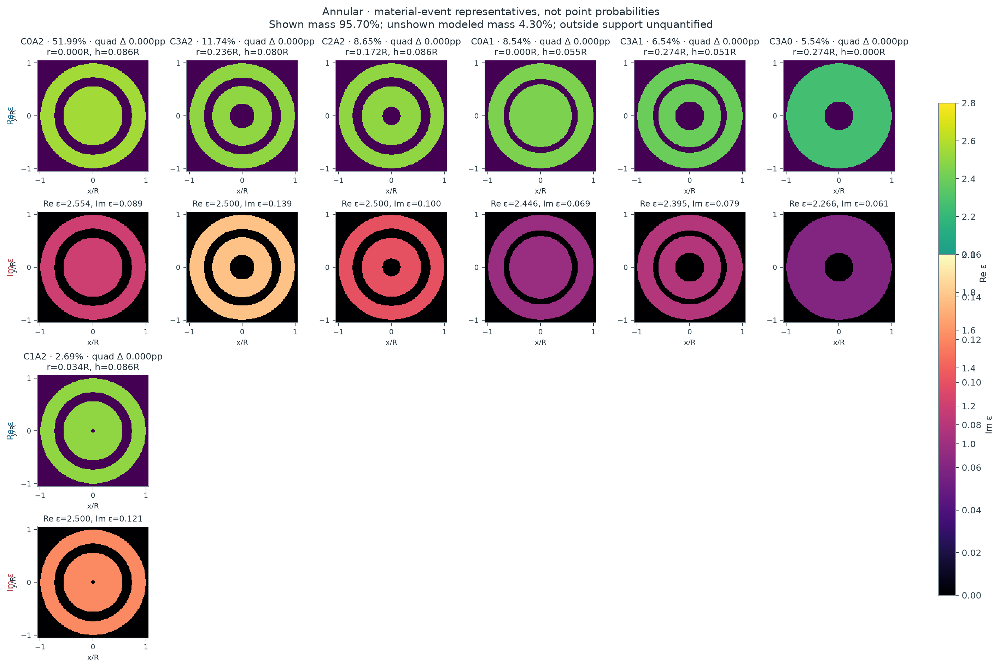
概率属于整个材料事件；图中材料仅是该事件的代表。C 表示中心空腔半径分箱，A 表示环形空腔半宽分箱；不同分箱不自动等于分离的 posterior mode。所有图共用实部与损耗色标。
| 不重叠材料事件 | 后验质量 | 先验与 evidence 信息 | 代表材料 | 事件内部的不确定性 | ||||||||||||||||||||
|---|---|---|---|---|---|---|---|---|---|---|---|---|---|---|---|---|---|---|---|---|---|---|---|---|
| C0A2 {"central_radius_bin":0,"annular_halfwidth_bin":2,"central_edges":[0,0.1,0.2,0.2925518253046813],"annular_edges":[0,0.06,0.11702073012187252],"zero_is_atom":true,"disjoint":true} | 51.99% 误差：{"MC_residual_SE":null,"MC_interval95":null,"quadrature_refinement_max":9.965404163814195e-07,"inter… | 21.68% 事件 odds 倍率 3.91 | r=0.0000R h=0.0864R ε=2.5535+0.0893i | 条件材料分布与预测
Forward prediction、补偿与数值误差{
"forward_prediction": {
"unscaled_field": [
0.7716606260410702,
0.7441189933867385,
0.6736998597670876,
0.580437924968514,
0.5360528480704647,
0.37755261256604505,
0.3862845901815499,
0.1978134646354401,
0.24794736486121088,
0.07684730430583304,
0.13583118216845505,
0.017455523222188758,
0.0560691582549229,
0.0009713822091166399,
0.00921046087653654,
0.0032312905846595573,
0.3121365498800362,
0.30523164491507543,
0.28671057169609887,
0.2613482046681204,
0.2487358216676228,
0.199052854690781,
0.20368374941745832,
0.1303692758732487,
0.15746907644722907,
0.06605426354379651,
0.11555104952817725,
0.013340195489153606,
0.08238953979522053,
-0.0244155980355963,
0.06120787003045845,
-0.04664632348298059,
1.2451280644948206,
1.2020831077004805,
0.8347669739289401,
0.7119157244554174,
0.3656721319919659,
0.21155863651792456,
0.014114778518072739,
-0.10298133964545879,
-0.14048384181356197,
-0.2106969314548538,
-0.12301218958751181,
-0.20034842554257334,
-0.016827809103603004,
-0.1623399361355817,
0.08864864843342547,
-0.13801719884408437,
1.1028423399617853,
1.1147081405219248,
0.8515719960531154,
0.9013434991773674,
0.5216399363400008,
0.637082114251575,
0.20408202349988566,
0.40520651269681984,
-0.033484879189666465,
0.25504468346510034,
-0.16698638500191326,
0.19115222505461063,
-0.21425815559552083,
0.1861598758444899,
-0.2162885751235486,
0.20271237953600485
],
"packing": "each frequency real32: Re16 then Im16",
"frequencies": [
1.6,
2.4
],
"posterior_gain_mean": 1.0141860440414388,
"posterior_gain_SD": 0.027695833555632057,
"gain_support": [
0.7,
1.3
],
"gain_used_for_both_frequencies": true,
"mean_prediction": [
0.782607437667133,
0.7546750981989938,
0.6832569956484545,
0.5886720429354386,
0.543657317381731,
0.38290859055586723,
0.3917644403903945,
0.20061965515674804,
0.2514647570990907,
0.07793746354918143,
0.13775808930089745,
0.017703148043385086,
0.056864557803293636,
0.0009851622799162386,
0.009341120880173035,
0.003277129815204224,
0.31656453272357715,
0.30956167447268146,
0.2907778604933258,
0.26505570180969334,
0.25226439898848313,
0.20187662725399852,
0.20657321605721976,
0.13221870016243709,
0.15970293970087415,
0.06699131223555362,
0.11719026180581844,
0.013529440089884142,
0.08355832143530939,
-0.024761958784627336,
0.06207616757039319,
-0.04730805028228135,
1.2627915060549755,
1.2191359116077891,
0.8466090149854345,
0.7220149922763347,
0.37085957296113076,
0.21455981665291457,
0.014315011387765272,
-0.10444223746511563,
-0.14247675178063968,
-0.21368588740386835,
-0.12475724592663406,
-0.2031905771309532,
-0.01706652914466764,
-0.1646428976192854,
0.08990622206431606,
-0.13997511690536255,
1.1184873099672465,
1.130521439296719,
0.8636524338935808,
0.9141299977531621,
0.5290399434506934,
0.6461197891823608,
0.20697714007332096,
0.41095479013181474,
-0.03395989716057333,
0.25866275857727106,
-0.16935526121387104,
0.19386391893785435,
-0.21729763122703633,
0.1888007480419686,
-0.2193568543759113,
0.20558806627984746
],
"whitened_residual_C": 5.610883310073297,
"marginal_log_likelihood_C": 48.78423409493578,
"likelihood_status": "full vector-Mie n14; proper bounded-gain marginal",
"new_or_paid_cache_cost": "sole PHYSICS_LEDGER receipt"
},
"compensation_diagnostics": {
"raw_material_parameters": [
-0.9509511718169197,
-1.688213674870321,
2.5535452544487542,
0.08929094911024912
],
"gain_is_instrument_nuisance": true,
"minimum_residual_is_not_evidence": true
},
"indistinguishable_from": [
{
"hypothesis_id": "annular_cavity-E11",
"raw_noise_distance": 1.6017451474665165,
"conditional_gain_adjusted_noise_distance": 0.935898065283255,
"material_distance": 0.17664674791618848,
"frequencies": [
1.6
],
"noise_scale": "fixed sigma, joint real-channel whitened norm",
"status": "representative posterior worlds; not global compensation minimum or exact equivalence"
},
{
"hypothesis_id": "annular_cavity-E8",
"raw_noise_distance": 1.5087803451330988,
"conditional_gain_adjusted_noise_distance": 0.39973378380827945,
"material_distance": 0.08025846616392247,
"frequencies": [
1.6
],
"noise_scale": "fixed sigma, joint real-channel whitened norm",
"status": "representative posterior worlds; not global compensation minimum or exact equivalence"
},
{
"hypothesis_id": "annular_cavity-E1",
"raw_noise_distance": 2.420531369952388,
"conditional_gain_adjusted_noise_distance": 1.1573274299822374,
"material_distance": 0.2790976467078008,
"frequencies": [
1.6
],
"noise_scale": "fixed sigma, joint real-channel whitened norm",
"status": "representative posterior worlds; not global compensation minimum or exact equivalence"
},
{
"hypothesis_id": "annular_cavity-E10",
"raw_noise_distance": 0.6315398985213599,
"conditional_gain_adjusted_noise_distance": 0.5500866089770778,
"material_distance": 0.3312226132344273,
"frequencies": [
1.6
],
"noise_scale": "fixed sigma, joint real-channel whitened norm",
"status": "representative posterior worlds; not global compensation minimum or exact equivalence"
},
{
"hypothesis_id": "annular_cavity-E5",
"raw_noise_distance": 1.4422129578532563,
"conditional_gain_adjusted_noise_distance": 0.622642107891778,
"material_distance": 0.03715380859701199,
"frequencies": [
1.6
],
"noise_scale": "fixed sigma, joint real-channel whitened norm",
"status": "representative posterior worlds; not global compensation minimum or exact equivalence"
}
],
"mass_error": {
"MC_residual_SE": null,
"MC_interval95": null,
"quadrature_refinement_max": 9.965404163814195e-07,
"interval_scope": "residual Monte Carlo only, cubature and untested full-field discrepancy separate"
}
} | ||||||||||||||||||||
| C3A2 {"central_radius_bin":3,"annular_halfwidth_bin":2,"central_edges":[0,0.1,0.2,0.2925518253046813],"annular_edges":[0,0.06,0.11702073012187252],"zero_is_atom":true,"disjoint":true} | 11.74% 误差：{"MC_residual_SE":null,"MC_interval95":null,"quadrature_refinement_max":9.965404163814195e-07,"inter… | 15.69% 事件 odds 倍率 0.715 | r=0.2362R h=0.0805R ε=2.5000+0.1395i | 条件材料分布与预测
Forward prediction、补偿与数值误差{
"forward_prediction": {
"unscaled_field": [
0.7390296247742217,
0.7116205643843043,
0.6448799024482799,
0.5520285582183775,
0.512712385774196,
0.35478956438516285,
0.3691157879795097,
0.18108827537161537,
0.23674164802781705,
0.06564780553272699,
0.1297168121599445,
0.010754407532279738,
0.053772926024091346,
-0.0024728585811483583,
0.009258071528106865,
0.0017439657975672998,
0.3175756850450128,
0.3108502561756315,
0.2895786943719898,
0.2651849897763842,
0.2481013110688625,
0.20130441500516227,
0.1994241059886424,
0.13234075396094308,
0.15009507404222086,
0.0694370169235318,
0.10588495032370948,
0.019384521182049995,
0.07126968565350109,
-0.015405680234608017,
0.04932531198322283,
-0.035372282213840464,
1.1892609560242193,
1.143064057570897,
0.8020254757281517,
0.668475135592223,
0.3590122223551706,
0.18721227690036396,
0.025519771863130387,
-0.11000670909042698,
-0.12472734196625118,
-0.20457982778901335,
-0.11543552123184037,
-0.1852754617668184,
-0.023726639007976582,
-0.14161184481192882,
0.06886050281867506,
-0.11415982345124573,
1.0600418374914644,
1.0719390925078547,
0.805651996937553,
0.8565788977831204,
0.47431347072020175,
0.5949998938746744,
0.15907333646371868,
0.3731411062235989,
-0.0731234335969924,
0.23849501682285965,
-0.20055379302380616,
0.19123184027529816,
-0.24312113806824798,
0.199994786725451,
-0.24253508632078782,
0.22524072714496884
],
"packing": "each frequency real32: Re16 then Im16",
"frequencies": [
1.6,
2.4
],
"posterior_gain_mean": 1.0512392904427061,
"posterior_gain_SD": 0.028729466348956376,
"gain_support": [
0.7,
1.3
],
"gain_used_for_both_frequencies": true,
"mean_prediction": [
0.7768969783637922,
0.7480834971677942,
0.6779230910704913,
0.5803141098455973,
0.5389834046224528,
0.3729687299207354,
0.38802901904678017,
0.19036711010915033,
0.2488721220909993,
0.06901155250734468,
0.13636340957350984,
0.011305455743365446,
0.05652821259859391,
-0.002599566100211557,
0.009732448544074882,
0.0018333253675909963,
0.3338480378085756,
0.32677800273600427,
0.3044165011989358,
0.27877288048858245,
0.2608138462059361,
0.21161911039301085,
0.20964245567667147,
0.13912180029055454,
0.1577858391350897,
0.07299492040115174,
0.11131042004685754,
0.020377770292989844,
0.07492149377646119,
-0.016195056358616556,
0.051852705970108284,
-0.037184732855816804,
1.2501978435621146,
1.2016338488113905,
0.8431206920214361,
0.7027273272185603,
0.37740775388890857,
0.19680490113090204,
0.026827386865656926,
-0.11564337480815765,
-0.13111828246740664,
-0.2150623530038134,
-0.12135035543164381,
-0.1947688449641949,
-0.024942375155335535,
-0.14886793525837466,
0.07238886612263194,
-0.12000929180195216,
1.1143576290841095,
1.1268644910057555,
0.8469330336043824,
0.9004693927137227,
0.4986169564073222,
0.6254872662502983,
0.1672241413524735,
0.3922605917415026,
-0.07687022644923663,
0.25071533225898424,
-0.21083002707393933,
0.20103042408105734,
-0.2555784926744882,
0.21024237768950346,
-0.25496241205132547,
0.23678190218267622
],
"whitened_residual_C": 5.779739392295945,
"marginal_log_likelihood_C": 47.805315863876146,
"likelihood_status": "full vector-Mie n14; proper bounded-gain marginal",
"new_or_paid_cache_cost": "sole PHYSICS_LEDGER receipt"
},
"compensation_diagnostics": {
"raw_material_parameters": [
-1.9054923143495006,
-1.5624882916167764,
2.5,
0.13946026955300142
],
"gain_is_instrument_nuisance": true,
"minimum_residual_is_not_evidence": true
},
"indistinguishable_from": [
{
"hypothesis_id": "annular_cavity-E2",
"raw_noise_distance": 1.6017451474665165,
"conditional_gain_adjusted_noise_distance": 0.935898065283255,
"material_distance": 0.17664674791618848,
"frequencies": [
1.6
],
"noise_scale": "fixed sigma, joint real-channel whitened norm",
"status": "representative posterior worlds; not global compensation minimum or exact equivalence"
},
{
"hypothesis_id": "annular_cavity-E8",
"raw_noise_distance": 1.07156247727831,
"conditional_gain_adjusted_noise_distance": 1.119580934044222,
"material_distance": 0.1546164671232463,
"frequencies": [
1.6
],
"noise_scale": "fixed sigma, joint real-channel whitened norm",
"status": "representative posterior worlds; not global compensation minimum or exact equivalence"
},
{
"hypothesis_id": "annular_cavity-E1",
"raw_noise_distance": 3.7092973560486593,
"conditional_gain_adjusted_noise_distance": 1.3987811553808083,
"material_distance": 0.2731921694200373,
"frequencies": [
1.6
],
"noise_scale": "fixed sigma, joint real-channel whitened norm",
"status": "representative posterior worlds; not global compensation minimum or exact equivalence"
},
{
"hypothesis_id": "annular_cavity-E10",
"raw_noise_distance": 1.9401084822504262,
"conditional_gain_adjusted_noise_distance": 1.06534386352138,
"material_distance": 0.28019587953300307,
"frequencies": [
1.6
],
"noise_scale": "fixed sigma, joint real-channel whitened norm",
"status": "representative posterior worlds; not global compensation minimum or exact equivalence"
},
{
"hypothesis_id": "annular_cavity-E5",
"raw_noise_distance": 0.7108274590258203,
"conditional_gain_adjusted_noise_distance": 0.7475109164072785,
"material_distance": 0.16893165375697972,
"frequencies": [
1.6
],
"noise_scale": "fixed sigma, joint real-channel whitened norm",
"status": "representative posterior worlds; not global compensation minimum or exact equivalence"
}
],
"mass_error": {
"MC_residual_SE": null,
"MC_interval95": null,
"quadrature_refinement_max": 9.965404163814195e-07,
"interval_scope": "residual Monte Carlo only, cubature and untested full-field discrepancy separate"
}
} | ||||||||||||||||||||
| C2A2 {"central_radius_bin":2,"annular_halfwidth_bin":2,"central_edges":[0,0.1,0.2,0.2925518253046813],"annular_edges":[0,0.06,0.11702073012187252],"zero_is_atom":true,"disjoint":true} | 8.65% 误差：{"MC_residual_SE":null,"MC_interval95":null,"quadrature_refinement_max":9.965404163814195e-07,"inter… | 4.84% 事件 odds 倍率 1.86 | r=0.1717R h=0.0864R ε=2.5000+0.1000i | 条件材料分布与预测
Forward prediction、补偿与数值误差{
"forward_prediction": {
"unscaled_field": [
0.742909101608964,
0.7156930274970653,
0.6489974202866353,
0.5567167027522254,
0.517078973990145,
0.3598274741432945,
0.3736055283518527,
0.18566663917410572,
0.24115418823803833,
0.06878983377255504,
0.1338730051176251,
0.011774914487297866,
0.05759603132253038,
-0.003661520690551161,
0.012806545173373086,
-0.0010919563038307184,
0.29542514605090914,
0.2886779488105572,
0.2710797989527435,
0.24635474228712018,
0.23483084803921855,
0.1865751406609361,
0.19200174644837403,
0.12113219461952306,
0.14826704081895836,
0.060382895297600866,
0.10877399475862659,
0.011067882754670138,
0.07764913769412371,
-0.02391870372602165,
0.05782281639993749,
-0.04435554474119474,
1.2200693748821294,
1.1765698012192563,
0.8252230145118898,
0.7008267302991193,
0.37210343779390803,
0.21598497296583508,
0.02901599593145841,
-0.08747577634942467,
-0.1277355903587456,
-0.18949163456457202,
-0.12079132571470484,
-0.17674773485596848,
-0.028128248833176203,
-0.13747304106020714,
0.06653120192763397,
-0.11221071058393983,
1.03872854566874,
1.0494842223803758,
0.8012923987629806,
0.8476486718172077,
0.48891176050094076,
0.599887397326329,
0.18666400161580815,
0.38599149401024124,
-0.04237636706056122,
0.25191220200816683,
-0.17534860421903728,
0.20012393105247364,
-0.22764655445084928,
0.20284103109058077,
-0.2356288001598236,
0.22340576885526733
],
"packing": "each frequency real32: Re16 then Im16",
"frequencies": [
1.6,
2.4
],
"posterior_gain_mean": 1.0557092343364156,
"posterior_gain_SD": 0.0288411288757758,
"gain_support": [
0.7,
1.3
],
"gain_used_for_both_frequencies": true,
"mean_prediction": [
0.7842959988411538,
0.755563738078838,
0.6851525696571127,
0.5877309640048458,
0.5458850477225954,
0.37987318722102387,
0.3944188062801864,
0.1960099854843107,
0.2545887034217993,
0.07262206274215338,
0.14133096773104303,
0.012430885957761997,
0.06080466212832476,
-0.00386550120472871,
0.013519987999476419,
-0.00115278835344595,
0.31188305474112904,
0.3047599763086003,
0.2861814469964703,
0.26007897635508065,
0.2479130947820546,
0.19696909889336592,
0.20269801673426754,
0.12788037643526637,
0.1565268841403086,
0.06374678016164616,
0.11483371072234297,
0.01168446602865803,
0.08197491170194625,
-0.025251196396917888,
0.06104408122875315,
-0.046826558177301324,
1.2880385055941221,
1.2421156039885297,
0.871195556807136,
0.739869250846577,
0.3928330354073547,
0.22801733043793318,
0.030632454848308507,
-0.09234898487283466,
-0.13485164229514135,
-0.2000480684393202,
-0.12752051798475164,
-0.1865942158354903,
-0.029695252038896624,
-0.1451315589195699,
0.07023760424650391,
-0.11846188335491625,
1.0965953176313241,
1.107950184857335,
0.8459317847776561,
0.894870530310424,
0.5161486603365172,
0.633306664919444,
0.19706291022399627,
0.40749478460192096,
-0.04473712202346399,
0.26594603790204224,
-0.18511714070203902,
0.2112726820238006,
-0.24032856969862923,
0.2141411496246461,
-0.24875550020433565,
0.23585153318453253
],
"whitened_residual_C": 5.692919685968254,
"marginal_log_likelihood_C": 48.29659804598481,
"likelihood_status": "full vector-Mie n14; proper bounded-gain marginal",
"new_or_paid_cache_cost": "sole PHYSICS_LEDGER receipt"
},
"compensation_diagnostics": {
"raw_material_parameters": [
-1.3695762210618436,
-1.688213674870321,
2.5,
0.1
],
"gain_is_instrument_nuisance": true,
"minimum_residual_is_not_evidence": true
},
"indistinguishable_from": [
{
"hypothesis_id": "annular_cavity-E2",
"raw_noise_distance": 1.5087803451330988,
"conditional_gain_adjusted_noise_distance": 0.39973378380827945,
"material_distance": 0.08025846616392247,
"frequencies": [
1.6
],
"noise_scale": "fixed sigma, joint real-channel whitened norm",
"status": "representative posterior worlds; not global compensation minimum or exact equivalence"
},
{
"hypothesis_id": "annular_cavity-E11",
"raw_noise_distance": 1.07156247727831,
"conditional_gain_adjusted_noise_distance": 1.119580934044222,
"material_distance": 0.1546164671232463,
"frequencies": [
1.6
],
"noise_scale": "fixed sigma, joint real-channel whitened norm",
"status": "representative posterior worlds; not global compensation minimum or exact equivalence"
},
{
"hypothesis_id": "annular_cavity-E1",
"raw_noise_distance": 3.8040148284224204,
"conditional_gain_adjusted_noise_distance": 1.3065010285540426,
"material_distance": 0.2824897919434089,
"frequencies": [
1.6
],
"noise_scale": "fixed sigma, joint real-channel whitened norm",
"status": "representative posterior worlds; not global compensation minimum or exact equivalence"
},
{
"hypothesis_id": "annular_cavity-E10",
"raw_noise_distance": 1.878279388154545,
"conditional_gain_adjusted_noise_distance": 0.6237858839855085,
"material_distance": 0.3139059361200103,
"frequencies": [
1.6
],
"noise_scale": "fixed sigma, joint real-channel whitened norm",
"status": "representative posterior worlds; not global compensation minimum or exact equivalence"
},
{
"hypothesis_id": "annular_cavity-E5",
"raw_noise_distance": 0.6364849119338497,
"conditional_gain_adjusted_noise_distance": 0.65214766404948,
"material_distance": 0.07197634644022921,
"frequencies": [
1.6
],
"noise_scale": "fixed sigma, joint real-channel whitened norm",
"status": "representative posterior worlds; not global compensation minimum or exact equivalence"
}
],
"mass_error": {
"MC_residual_SE": null,
"MC_interval95": null,
"quadrature_refinement_max": 9.965404163814195e-07,
"interval_scope": "residual Monte Carlo only, cubature and untested full-field discrepancy separate"
}
} | ||||||||||||||||||||
| C0A1 {"central_radius_bin":0,"annular_halfwidth_bin":1,"central_edges":[0,0.1,0.2,0.2925518253046813],"annular_edges":[0,0.06,0.11702073012187252],"zero_is_atom":true,"disjoint":true} | 8.54% 误差：{"MC_residual_SE":null,"MC_interval95":null,"quadrature_refinement_max":9.965404163814195e-07,"inter… | 3.32% 事件 odds 倍率 2.72 | r=0.0000R h=0.0554R ε=2.4465+0.0692i | 条件材料分布与预测
Forward prediction、补偿与数值误差{
"forward_prediction": {
"unscaled_field": [
0.8063622930365488,
0.7769601594010783,
0.7063283668259756,
0.606389994750191,
0.5652382774923143,
0.3942378234544544,
0.4108674967638878,
0.20529982427194787,
0.2672582656335649,
0.07719808139932746,
0.14991293993262778,
0.013593457558532304,
0.06573735182309279,
-0.004556878831019493,
0.015941601344211274,
-0.0025406451023507336,
0.34187247176870206,
0.33341899505314415,
0.3161599211233657,
0.2848354757305551,
0.27759308026435686,
0.21533447046627063,
0.23157974274867932,
0.13786249383512458,
0.18408268831751365,
0.06433414932689978,
0.1407388581541766,
0.0031615235099647114,
0.10627107961553402,
-0.0413066192862235,
0.08417233273928208,
-0.06781568124890887,
1.2582262344165338,
1.208595349326056,
0.8446772953638465,
0.6996243221156658,
0.37013621619602777,
0.17854993933287328,
0.01266244706061643,
-0.14894733659822254,
-0.1452297267905815,
-0.25729622844114064,
-0.1263828431347409,
-0.23753999235108714,
-0.015008234866585686,
-0.186464537063701,
0.09609557185731896,
-0.15173206125386893,
1.1923461241688071,
1.1971946299825247,
0.9338666485884327,
0.9594560405942634,
0.5911501961691668,
0.6647754099594566,
0.25571094267138456,
0.4074048761230258,
-0.00265614727342479,
0.24475381828611753,
-0.15659178244184288,
0.18301451761654877,
-0.22070253293195333,
0.18970854722918393,
-0.23365181982326308,
0.21865771245552243
],
"packing": "each frequency real32: Re16 then Im16",
"frequencies": [
1.6,
2.4
],
"posterior_gain_mean": 0.9592023214116064,
"posterior_gain_SD": 0.02618432318192666,
"gain_support": [
0.7,
1.3
],
"gain_used_for_both_frequencies": true,
"mean_prediction": [
0.7734645833794437,
0.7452619885418461,
0.6775118091383444,
0.581650690645155,
0.5421778679213256,
0.37815383544577175,
0.3941050566884969,
0.19692406802704726,
0.25635474881215525,
0.07404857888675706,
0.1437968399930153,
0.013038876046154333,
0.0630554204721621,
-0.004370968753105305,
0.01529122101638584,
-0.0024369926800578523,
0.3279248685472629,
0.3198162740577008,
0.3032613302788428,
0.27321484954112774,
0.2662679269973695,
0.2065493239511858,
0.22213182683643584,
0.13223802412224478,
0.1765725419658483,
0.06170946538040321,
0.134997039454305,
0.0030325406899555213,
0.10193546626613788,
-0.039621405109011014,
0.08073829696214954,
-0.06504895888206294,
1.2068935249133232,
1.1592874647208242,
0.8102164225566787,
0.6710812738893682,
0.3550355178137381,
0.17126551629599354,
0.012145848615294852,
-0.142870631033091,
-0.13930469107549914,
-0.2467991396111931,
-0.12122671652144239,
-0.22784891209125802,
-0.0143959337243196,
-0.17885721681244254,
0.09217509560291617,
-0.14554174538727913,
1.1437011702288513,
1.148351868260747,
0.8957670572149016,
0.9203124614304059,
0.5670326404683913,
0.6376541164504631,
0.24527852982074227,
0.3907837029316143,
-0.0025477826306801676,
0.23476843067439843,
-0.15020320123219694,
0.17554795014981892,
-0.21169838192975116,
0.1819688788938566,
-0.22411936797652035,
0.20973698538188865
],
"whitened_residual_C": 5.5130287684618695,
"marginal_log_likelihood_C": 49.239859939573364,
"likelihood_status": "full vector-Mie n14; proper bounded-gain marginal",
"new_or_paid_cache_cost": "sole PHYSICS_LEDGER receipt"
},
"compensation_diagnostics": {
"raw_material_parameters": [
0.4687261597507335,
-1.220159450833467,
2.4464547455512458,
0.06923856777481138
],
"gain_is_instrument_nuisance": true,
"minimum_residual_is_not_evidence": true
},
"indistinguishable_from": [
{
"hypothesis_id": "annular_cavity-E2",
"raw_noise_distance": 2.420531369952388,
"conditional_gain_adjusted_noise_distance": 1.1573274299822374,
"material_distance": 0.2790976467078008,
"frequencies": [
1.6
],
"noise_scale": "fixed sigma, joint real-channel whitened norm",
"status": "representative posterior worlds; not global compensation minimum or exact equivalence"
},
{
"hypothesis_id": "annular_cavity-E11",
"raw_noise_distance": 3.7092973560486593,
"conditional_gain_adjusted_noise_distance": 1.3987811553808083,
"material_distance": 0.2731921694200373,
"frequencies": [
1.6
],
"noise_scale": "fixed sigma, joint real-channel whitened norm",
"status": "representative posterior worlds; not global compensation minimum or exact equivalence"
},
{
"hypothesis_id": "annular_cavity-E8",
"raw_noise_distance": 3.8040148284224204,
"conditional_gain_adjusted_noise_distance": 1.3065010285540426,
"material_distance": 0.2824897919434089,
"frequencies": [
1.6
],
"noise_scale": "fixed sigma, joint real-channel whitened norm",
"status": "representative posterior worlds; not global compensation minimum or exact equivalence"
},
{
"hypothesis_id": "annular_cavity-E10",
"raw_noise_distance": 1.935497136878537,
"conditional_gain_adjusted_noise_distance": 0.7046618161255002,
"material_distance": 0.17490520958703495,
"frequencies": [
1.6
],
"noise_scale": "fixed sigma, joint real-channel whitened norm",
"status": "representative posterior worlds; not global compensation minimum or exact equivalence"
},
{
"hypothesis_id": "annular_cavity-E9",
"raw_noise_distance": 2.3032159105848597,
"conditional_gain_adjusted_noise_distance": 1.3492227281287608,
"material_distance": 0.3623398143199257,
"frequencies": [
1.6
],
"noise_scale": "fixed sigma, joint real-channel whitened norm",
"status": "representative posterior worlds; not global compensation minimum or exact equivalence"
},
{
"hypothesis_id": "annular_cavity-E5",
"raw_noise_distance": 3.5473710617814955,
"conditional_gain_adjusted_noise_distance": 0.9193046272241268,
"material_distance": 0.27523313702400126,
"frequencies": [
1.6
],
"noise_scale": "fixed sigma, joint real-channel whitened norm",
"status": "representative posterior worlds; not global compensation minimum or exact equivalence"
}
],
"mass_error": {
"MC_residual_SE": null,
"MC_interval95": null,
"quadrature_refinement_max": 9.965404163814195e-07,
"interval_scope": "residual Monte Carlo only, cubature and untested full-field discrepancy separate"
}
} | ||||||||||||||||||||
| C3A1 {"central_radius_bin":3,"annular_halfwidth_bin":1,"central_edges":[0,0.1,0.2,0.2925518253046813],"annular_edges":[0,0.06,0.11702073012187252],"zero_is_atom":true,"disjoint":true} | 6.54% 误差：{"MC_residual_SE":null,"MC_interval95":null,"quadrature_refinement_max":9.965404163814195e-07,"inter… | 2.40% 事件 odds 倍率 2.84 | r=0.2742R h=0.0507R ε=2.3946+0.0789i | 条件材料分布与预测
Forward prediction、补偿与数值误差{
"forward_prediction": {
"unscaled_field": [
0.7756936163533729,
0.7468759176426348,
0.6789611954425783,
0.5811063826686834,
0.5425362912380479,
0.3754448873417707,
0.39328543810331174,
0.19322002048022396,
0.25446013099699155,
0.07098878399546894,
0.14104565040377745,
0.011911876528204223,
0.05970705783447024,
-0.003134495093395371,
0.011598713508106824,
0.0006655990108040338,
0.3180704291871425,
0.31039487872591753,
0.2930462634473641,
0.2647861581656524,
0.2556111951302753,
0.20003510226245844,
0.2111038539545361,
0.1286543895901932,
0.16533826782042307,
0.061857143961642734,
0.12372993705751112,
0.0071803845287531295,
0.09074682905710173,
-0.03190750294406074,
0.0696480805537395,
-0.05487704465462515,
1.239106753719446,
1.188661551227265,
0.8383369871466306,
0.6906292368588547,
0.37677565986618466,
0.18154312769325523,
0.02582970342332456,
-0.1369243094941592,
-0.1345181540318307,
-0.23995660321528395,
-0.1251276959177689,
-0.21731808222640425,
-0.02561468280246776,
-0.1644686811170008,
0.07606933873360652,
-0.12858485180136509,
1.1038978610599552,
1.1101585273629655,
0.8551265233108221,
0.8870456370199475,
0.5248037291014651,
0.6146125195324701,
0.20024511389376368,
0.38378911812702154,
-0.052053538997968815,
0.2479649459086004,
-0.20569234079305354,
0.20974753401967483,
-0.2735588356047847,
0.23426789675537255,
-0.29093527532794816,
0.27417085548167824
],
"packing": "each frequency real32: Re16 then Im16",
"frequencies": [
1.6,
2.4
],
"posterior_gain_mean": 1.005438604091708,
"posterior_gain_SD": 0.027456858177986945,
"gain_support": [
0.7,
1.3
],
"gain_used_for_both_frequencies": true,
"mean_prediction": [
0.7799123068291841,
0.7509378800643243,
0.6826537965782232,
0.5842667902191829,
0.5454869313314753,
0.37748678344227854,
0.3954243618961896,
0.19427086767420762,
0.25584403890660834,
0.07137486388657208,
0.14181274185518106,
0.011976660508630436,
0.06003178088351264,
-0.00315154237123575,
0.011661794318850564,
0.0006692189403076295,
0.31980028832477103,
0.3120829935834015,
0.2946400260548087,
0.26622622524887973,
0.2570013632219972,
0.20112301398810828,
0.21225196423842857,
0.12935408987983463,
0.16623747720030715,
0.0621935604778939,
0.12440285519945887,
0.007219435797431243,
0.0912403651329212,
-0.03208103522012849,
0.07002686888961868,
-0.055175499174224645,
1.2458457647802876,
1.1951262108034255,
0.8428963701151565,
0.6943852958522885,
0.3788247935115889,
0.18253046889034924,
0.025970180954050258,
-0.13766898660402843,
-0.13524974501475723,
-0.24126163217936294,
-0.12580821591677327,
-0.21849998923760292,
-0.025753990921165062,
-0.16536316115908156,
0.07648304975049663,
-0.12928417390250366,
1.1099015244839436,
1.1161962400723262,
0.8597772179194284,
0.891869927050976,
0.5276579288098999,
0.6179551536960144,
0.20133416778953084,
0.3858763951952202,
-0.052336637588151054,
0.2493135290780191,
-0.20681101999932364,
0.2108882678164199,
-0.2750466138074278,
0.23554198709722216,
-0.29251755710676897,
0.275661962218128
],
"whitened_residual_C": 5.610723396104506,
"marginal_log_likelihood_C": 48.78028011869908,
"likelihood_status": "full vector-Mie n14; proper bounded-gain marginal",
"new_or_paid_cache_cost": "sole PHYSICS_LEDGER receipt"
},
"compensation_diagnostics": {
"raw_material_parameters": [
-2.530583550503787,
-1.179460468583718,
2.394630470963837,
0.07892609419276742
],
"gain_is_instrument_nuisance": true,
"minimum_residual_is_not_evidence": true
},
"indistinguishable_from": [
{
"hypothesis_id": "annular_cavity-E2",
"raw_noise_distance": 0.6315398985213599,
"conditional_gain_adjusted_noise_distance": 0.5500866089770778,
"material_distance": 0.3312226132344273,
"frequencies": [
1.6
],
"noise_scale": "fixed sigma, joint real-channel whitened norm",
"status": "representative posterior worlds; not global compensation minimum or exact equivalence"
},
{
"hypothesis_id": "annular_cavity-E11",
"raw_noise_distance": 1.9401084822504262,
"conditional_gain_adjusted_noise_distance": 1.06534386352138,
"material_distance": 0.28019587953300307,
"frequencies": [
1.6
],
"noise_scale": "fixed sigma, joint real-channel whitened norm",
"status": "representative posterior worlds; not global compensation minimum or exact equivalence"
},
{
"hypothesis_id": "annular_cavity-E8",
"raw_noise_distance": 1.878279388154545,
"conditional_gain_adjusted_noise_distance": 0.6237858839855085,
"material_distance": 0.3139059361200103,
"frequencies": [
1.6
],
"noise_scale": "fixed sigma, joint real-channel whitened norm",
"status": "representative posterior worlds; not global compensation minimum or exact equivalence"
},
{
"hypothesis_id": "annular_cavity-E1",
"raw_noise_distance": 1.935497136878537,
"conditional_gain_adjusted_noise_distance": 0.7046618161255002,
"material_distance": 0.17490520958703495,
"frequencies": [
1.6
],
"noise_scale": "fixed sigma, joint real-channel whitened norm",
"status": "representative posterior worlds; not global compensation minimum or exact equivalence"
},
{
"hypothesis_id": "annular_cavity-E5",
"raw_noise_distance": 1.6907701792858876,
"conditional_gain_adjusted_noise_distance": 0.46318870539642903,
"material_distance": 0.32255990425105424,
"frequencies": [
1.6
],
"noise_scale": "fixed sigma, joint real-channel whitened norm",
"status": "representative posterior worlds; not global compensation minimum or exact equivalence"
}
],
"mass_error": {
"MC_residual_SE": null,
"MC_interval95": null,
"quadrature_refinement_max": 9.965404163814195e-07,
"interval_scope": "residual Monte Carlo only, cubature and untested full-field discrepancy separate"
}
} | ||||||||||||||||||||
| C3A0 {"central_radius_bin":3,"annular_halfwidth_bin":0,"central_edges":[0,0.1,0.2,0.2925518253046813],"annular_edges":[0,0.06,0.11702073012187252],"zero_is_atom":true,"disjoint":true} | 5.54% 误差：{"MC_residual_SE":null,"MC_interval95":null,"quadrature_refinement_max":9.965404163814195e-07,"inter… | 18.09% 事件 odds 倍率 0.265 | r=0.2742R h=0.0000R ε=2.2655+0.0605i | 条件材料分布与预测
Forward prediction、补偿与数值误差{
"forward_prediction": {
"unscaled_field": [
0.8313256537624075,
0.7993115300516185,
0.730756445108144,
0.6215234682763621,
0.5881439232194102,
0.4000583959790938,
0.4308715602790697,
0.20276330944878052,
0.28309700568453056,
0.06967922236738451,
0.16098357725693924,
0.005196207937086523,
0.0724060116050714,
-0.010899586605293736,
0.019522856943477426,
-0.006195763749043777,
0.37655163888373316,
0.36609630275437816,
0.3499157728126707,
0.3110478494711166,
0.3098771707035914,
0.23221961315289902,
0.2619706551782588,
0.14425269936527343,
0.21236186654519917,
0.060689237269752234,
0.16695087429540534,
-0.008860657915885882,
0.13074377597152217,
-0.05941178457771987,
0.10748542606583761,
-0.08953304855722219,
1.2537308119898143,
1.1914860475220799,
0.8482869966838121,
0.6607020554134232,
0.3796419077314879,
0.11666252153520479,
0.02223946672596618,
-0.2222189309566251,
-0.13970551921286958,
-0.3245100230518197,
-0.12483377654156906,
-0.2853153303846464,
-0.014795097325262857,
-0.21133459013967998,
0.0970158660263571,
-0.15946052100738434,
1.2758712823054859,
1.2675153161331967,
1.0060277909986768,
0.9876657360189991,
0.6434798066439121,
0.6465217014728012,
0.28010285724025935,
0.3612239496476923,
-0.011836698378210605,
0.2028871785688127,
-0.20045439160525402,
0.17604322165990824,
-0.29479509180226443,
0.23252968592163092,
-0.328318383955132,
0.30401958720401645
],
"packing": "each frequency real32: Re16 then Im16",
"frequencies": [
1.6,
2.4
],
"posterior_gain_mean": 0.915584526728876,
"posterior_gain_SD": 0.025023643456354713,
"gain_support": [
0.7,
1.3
],
"gain_used_for_both_frequencies": true,
"mean_prediction": [
0.7611489052576274,
0.7318372689512449,
0.6690692939484159,
0.5690572705527026,
0.5384954755893081,
0.3662872771464319,
0.39449933359904443,
0.18564694871964235,
0.25919923796803285,
0.06379721783407787,
0.14739407239391616,
0.004757567584862194,
0.0662938238677548,
-0.009979492843548262,
0.01787482573498933,
-0.005672745419892173,
0.34476485407634544,
0.3351921100945586,
0.320377467245658,
0.28479059804804696,
0.28371874268273084,
0.21261668460575972,
0.23985627833823966,
0.13207553947771672,
0.19443523907604693,
0.05556612658316256,
0.15285763722873077,
-0.008112681284422845,
0.11970697824563233,
-0.05439651066470958,
0.09841199295474153,
-0.08197507388985775,
1.1478965321411037,
1.0909061889245626,
0.7766784483890078,
0.6049285787144947,
0.347594256416782,
0.10681439956680779,
0.02036211161699633,
-0.20346021473011836,
-0.12791221168992709,
-0.297116355874677,
-0.11429587421459078,
-0.26123030173871936,
-0.013546162182458452,
-0.1934946806944799,
0.08882622578093421,
-0.14599958565848598,
1.1681680041766325,
1.1605174108434146,
0.9211034788976201,
0.9042914654792823,
0.5891601542256549,
0.5919452660629223,
0.2564578419817288,
0.33073105898131766,
-0.01083749788264641,
0.18576036136928334,
-0.18353293926862127,
0.1611824497873137,
-0.26990982460977186,
0.21290058243497065,
-0.30060323218994894,
0.27835562986649764
],
"whitened_residual_C": 5.776368605564774,
"marginal_log_likelihood_C": 47.586678997643816,
"likelihood_status": "full vector-Mie n14; proper bounded-gain marginal",
"new_or_paid_cache_cost": "sole PHYSICS_LEDGER receipt"
},
"compensation_diagnostics": {
"raw_material_parameters": [
-2.530583550503787,
0.7840110511314817,
2.2655457988309595,
0.060539730446998556
],
"gain_is_instrument_nuisance": true,
"minimum_residual_is_not_evidence": true
},
"indistinguishable_from": [
{
"hypothesis_id": "annular_cavity-E1",
"raw_noise_distance": 2.3032159105848597,
"conditional_gain_adjusted_noise_distance": 1.3492227281287608,
"material_distance": 0.3623398143199257,
"frequencies": [
1.6
],
"noise_scale": "fixed sigma, joint real-channel whitened norm",
"status": "representative posterior worlds; not global compensation minimum or exact equivalence"
}
],
"mass_error": {
"MC_residual_SE": null,
"MC_interval95": null,
"quadrature_refinement_max": 9.965404163814195e-07,
"interval_scope": "residual Monte Carlo only, cubature and untested full-field discrepancy separate"
}
} | ||||||||||||||||||||
| C1A2 {"central_radius_bin":1,"annular_halfwidth_bin":2,"central_edges":[0,0.1,0.2,0.2925518253046813],"annular_edges":[0,0.06,0.11702073012187252],"zero_is_atom":true,"disjoint":true} | 2.69% 误差：{"MC_residual_SE":null,"MC_interval95":null,"quadrature_refinement_max":9.965404163814195e-07,"inter… | 1.16% 事件 odds 倍率 2.37 | r=0.0342R h=0.0864R ε=2.5000+0.1211i | 条件材料分布与预测
Forward prediction、补偿与数值误差{
"forward_prediction": {
"unscaled_field": [
0.740240536208955,
0.7127851939894886,
0.6469837279247915,
0.5537679892020076,
0.5160590049349802,
0.35678530186322116,
0.3737888974551576,
0.18245536274458668,
0.24259951203343966,
0.06532817301485817,
0.13648699880663143,
0.008007984905470939,
0.06115061855165885,
-0.007729601290407634,
0.0169692689992018,
-0.005382632347063722,
0.308632829059709,
0.3015543030537263,
0.28284017750927176,
0.2569398843681813,
0.24455778638513057,
0.1941210352199935,
0.19951767606757842,
0.125637942559394,
0.15374427277572697,
0.06236457498851024,
0.11260411205839549,
0.011238130825698994,
0.08031248047889458,
-0.02488772675635094,
0.05980372036273683,
-0.04592745787824043,
1.2026907124393178,
1.1581918865716567,
0.8140344370796974,
0.6861187324425314,
0.36852216268062776,
0.20605762564544147,
0.031725752804608355,
-0.09284509502307288,
-0.1219240271921584,
-0.191453302897268,
-0.11535793554671807,
-0.1767155128497657,
-0.0253097064135881,
-0.1365775050883122,
0.06654627863982975,
-0.11107874164456015,
1.0628799827906452,
1.0725804232087446,
0.8205157696366957,
0.8628077878079304,
0.5032100206434019,
0.6053614720974284,
0.1985883307596891,
0.38253278822100795,
-0.029416102639249556,
0.24114274091676335,
-0.15882310183369175,
0.18348402350696352,
-0.2067946849485281,
0.18158528756429146,
-0.21141650726264968,
0.19905199512596994
],
"packing": "each frequency real32: Re16 then Im16",
"frequencies": [
1.6,
2.4
],
"posterior_gain_mean": 1.0514786320798333,
"posterior_gain_SD": 0.028720218522081762,
"gain_support": [
0.7,
1.3
],
"gain_used_for_both_frequencies": true,
"mean_prediction": [
0.7783471064230343,
0.749478400742826,
0.6802895652162708,
0.5822752077757268,
0.542625016581513,
0.37515212114933016,
0.39303103858277816,
0.19184791523430778,
0.2550882030561562,
0.06869117799793775,
0.14351316280187865,
0.008420225014120536,
0.06429856874553393,
-0.008127510591360333,
0.01784282375467543,
-0.005659722897279226,
0.32452082491463186,
0.31707790607271963,
0.2974004029446663,
0.27016679814220584,
0.25714728669270914,
0.2041141205710399,
0.20978857310728466,
0.13210561197967627,
0.16165881762833015,
0.06557501799915894,
0.11840081771372594,
0.011816654427740186,
0.0844468571128864,
-0.02616891288534455,
0.0628823340802954,
-0.04829174058471641,
1.264603585130814,
1.217814020578327,
0.8559398163664373,
0.7214391862330221,
0.3874931795065283,
0.21666519034328718,
0.033358951160692527,
-0.0976246335101828,
-0.1282005093296751,
-0.20130905703758534,
-0.12129640426821668,
-0.18581258571855783,
-0.026612615478101797,
-0.143608328223135,
0.0699719900342116,
-0.11679692331757131,
1.1175955903697443,
1.1277953961911393,
0.8627547990575244,
0.9072239524721097,
0.5291145841549889,
0.6365246525948381,
0.20881138637421537,
0.40222505288431,
-0.030930403364238097,
0.25355643935514,
-0.16699909785876627,
0.19292953004560598,
-0.21744019245105842,
0.19093304977392433,
-0.22229993985562702,
0.20929891954781651
],
"whitened_residual_C": 5.65082121010169,
"marginal_log_likelihood_C": 48.54125113964673,
"likelihood_status": "full vector-Mie n14; proper bounded-gain marginal",
"new_or_paid_cache_cost": "sole PHYSICS_LEDGER receipt"
},
"compensation_diagnostics": {
"raw_material_parameters": [
-1.011644725041088,
-1.688213674870321,
2.5,
0.1210739058072326
],
"gain_is_instrument_nuisance": true,
"minimum_residual_is_not_evidence": true
},
"indistinguishable_from": [
{
"hypothesis_id": "annular_cavity-E2",
"raw_noise_distance": 1.4422129578532563,
"conditional_gain_adjusted_noise_distance": 0.622642107891778,
"material_distance": 0.03715380859701199,
"frequencies": [
1.6
],
"noise_scale": "fixed sigma, joint real-channel whitened norm",
"status": "representative posterior worlds; not global compensation minimum or exact equivalence"
},
{
"hypothesis_id": "annular_cavity-E11",
"raw_noise_distance": 0.7108274590258203,
"conditional_gain_adjusted_noise_distance": 0.7475109164072785,
"material_distance": 0.16893165375697972,
"frequencies": [
1.6
],
"noise_scale": "fixed sigma, joint real-channel whitened norm",
"status": "representative posterior worlds; not global compensation minimum or exact equivalence"
},
{
"hypothesis_id": "annular_cavity-E8",
"raw_noise_distance": 0.6364849119338497,
"conditional_gain_adjusted_noise_distance": 0.65214766404948,
"material_distance": 0.07197634644022921,
"frequencies": [
1.6
],
"noise_scale": "fixed sigma, joint real-channel whitened norm",
"status": "representative posterior worlds; not global compensation minimum or exact equivalence"
},
{
"hypothesis_id": "annular_cavity-E1",
"raw_noise_distance": 3.5473710617814955,
"conditional_gain_adjusted_noise_distance": 0.9193046272241268,
"material_distance": 0.27523313702400126,
"frequencies": [
1.6
],
"noise_scale": "fixed sigma, joint real-channel whitened norm",
"status": "representative posterior worlds; not global compensation minimum or exact equivalence"
},
{
"hypothesis_id": "annular_cavity-E10",
"raw_noise_distance": 1.6907701792858876,
"conditional_gain_adjusted_noise_distance": 0.46318870539642903,
"material_distance": 0.32255990425105424,
"frequencies": [
1.6
],
"noise_scale": "fixed sigma, joint real-channel whitened norm",
"status": "representative posterior worlds; not global compensation minimum or exact equivalence"
}
],
"mass_error": {
"MC_residual_SE": null,
"MC_interval95": null,
"quadrature_refinement_max": 9.965404163814195e-07,
"interval_scope": "residual Monte Carlo only, cubature and untested full-field discrepancy separate"
}
} |
数值状态：EMPIRICAL_PROXY_REFERENCE; 13/17 and independent adaptive integration
未探索质量：declared radial support integrated; no guarantee for omitted modes outside tested support
模型适用性：radial concentric 3D vector model only; finite noise/frequency/calibration assumptions, no real-world certification
中心与环形空腔观测
Target：joint-p2-radial-v1:C:tensor-Chebyshev-five-per-physical-axis-radial-v1
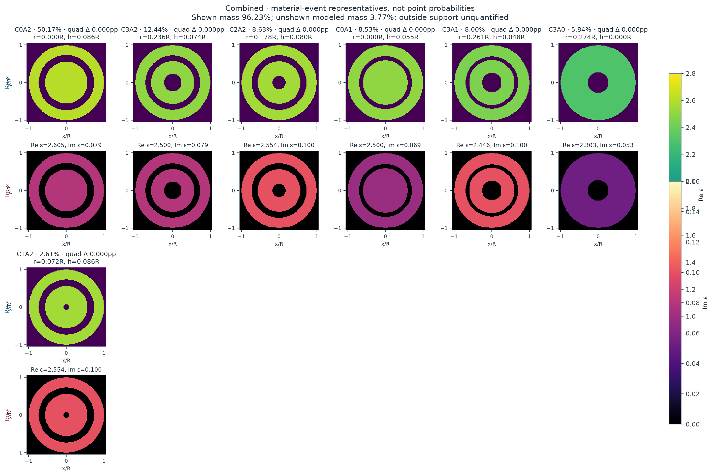
概率属于整个材料事件；图中材料仅是该事件的代表。C 表示中心空腔半径分箱，A 表示环形空腔半宽分箱；不同分箱不自动等于分离的 posterior mode。所有图共用实部与损耗色标。
| 不重叠材料事件 | 后验质量 | 先验与 evidence 信息 | 代表材料 | 事件内部的不确定性 | ||||||||||||||||||||
|---|---|---|---|---|---|---|---|---|---|---|---|---|---|---|---|---|---|---|---|---|---|---|---|---|
| C0A2 {"central_radius_bin":0,"annular_halfwidth_bin":2,"central_edges":[0,0.1,0.2,0.2925518253046813],"annular_edges":[0,0.06,0.11702073012187252],"zero_is_atom":true,"disjoint":true} | 50.17% 误差：{"MC_residual_SE":null,"MC_interval95":null,"quadrature_refinement_max":1.05586504628441e-06,"interv… | 21.68% 事件 odds 倍率 3.64 | r=0.0000R h=0.0864R ε=2.6054+0.0789i | 条件材料分布与预测
Forward prediction、补偿与数值误差{
"forward_prediction": {
"unscaled_field": [
0.7959106633348689,
0.7683093234649925,
0.6940029384823312,
0.6007697808120835,
0.5507734271815469,
0.39311757462901853,
0.3948738036554327,
0.2092085617232809,
0.25080761468849166,
0.08554762087724739,
0.13398976475510385,
0.025005621119631626,
0.050842413252748374,
0.00842204493460031,
0.001975671706076148,
0.010969147343555771,
0.3244901528323032,
0.31771967217083946,
0.2979247603437123,
0.27306289699909914,
0.2581356345518432,
0.20947030279902637,
0.2107541448454941,
0.13905816308200983,
0.16194856240816025,
0.07280227499214176,
0.11750319081800047,
0.01822614272435506,
0.08222274486715708,
-0.021041343162318628,
0.059632515117667394,
-0.04424391538170296,
1.2668222217050384,
1.224506250347511,
0.8413149464463064,
0.7209557214857494,
0.3567167221795553,
0.20630430159855395,
-0.0028673033665595517,
-0.1182953841244743,
-0.1549856554067946,
-0.23103892400266043,
-0.12680142099212174,
-0.2227170631004912,
-0.007027193923838247,
-0.1857994203535805,
0.1092720813282166,
-0.1623437659893375,
1.1479624136737991,
1.162184723904168,
0.8824248870095693,
0.9403269965654815,
0.534605911112725,
0.6641825889755817,
0.20186793540370612,
0.4198983328902719,
-0.04343137880936689,
0.2594311183290942,
-0.1760990182271785,
0.18869460728178478,
-0.21679033702221473,
0.18014928031189445,
-0.21163944087462455,
0.19533640723553358
],
"packing": "each frequency real32: Re16 then Im16",
"frequencies": [
1.6,
2.4
],
"posterior_gain_mean": 1.0479091583335873,
"posterior_gain_SD": 0.026847171835055854,
"gain_support": [
0.7,
1.3
],
"gain_used_for_both_frequencies": true,
"mean_prediction": [
0.8340420733239697,
0.8051183764920482,
0.7272520351460561,
0.6295521553630442,
0.5771605185103201,
0.411951506755636,
0.4137918752365467,
0.21923156783162365,
0.262823596411872,
0.08964613539091713,
0.14040910160983625,
0.026203619381081754,
0.053278230479335976,
0.008825538018864664,
0.002070324474657739,
0.011494669960422633,
0.34003620294203596,
0.33294135425056764,
0.31219808485851525,
0.28614511056645703,
0.2705026955391285,
0.2195058487020094,
0.22085119854035667,
0.14572032263468365,
0.16970738172646965,
0.07629017071178565,
0.12313266979160177,
0.019099341881946747,
0.08616196736961987,
-0.022049416203433495,
0.062489458726269764,
-0.04636360412902281,
1.327514608105212,
1.2831713141758774,
0.8816216374240161,
0.7554961032979158,
0.3738067201026939,
0.21618816704873922,
-0.0030046734575384813,
-0.12396281641262627,
-0.16241088771111353,
-0.24210780439392554,
-0.13287637034735716,
-0.23338725014016418,
-0.0073638608701762365,
-0.19470091420158891,
0.11450721477401075,
-0.17012151917859153,
1.2029603267115043,
1.2178640158545693,
0.9247011206388087,
0.9853772715292838,
0.5602184303542963,
0.6960030177932248,
0.21153925828343667,
0.44001530860472127,
-0.04551213961339086,
0.2718602448537824,
-0.18453577397381368,
0.1977348070987419,
-0.22717657960380377,
0.1887800807060388,
-0.22177890835711883,
0.20469481009809484
],
"whitened_residual_C": 4.651867498160258,
"marginal_log_likelihood_C": 53.627648436627936,
"likelihood_status": "full vector-Mie n14; proper bounded-gain marginal",
"new_or_paid_cache_cost": "sole PHYSICS_LEDGER receipt"
},
"compensation_diagnostics": {
"raw_material_parameters": [
-0.13717198856880097,
-1.688213674870321,
2.605369529036163,
0.07892609419276742
],
"gain_is_instrument_nuisance": true,
"minimum_residual_is_not_evidence": true
},
"indistinguishable_from": [
{
"hypothesis_id": "combined-E11",
"raw_noise_distance": 1.3742267739680758,
"conditional_gain_adjusted_noise_distance": 0.542010517360944,
"material_distance": 0.22263019445664317,
"frequencies": [
1.6
],
"noise_scale": "fixed sigma, joint real-channel whitened norm",
"status": "representative posterior worlds; not global compensation minimum or exact equivalence"
},
{
"hypothesis_id": "combined-E8",
"raw_noise_distance": 0.8180149530202926,
"conditional_gain_adjusted_noise_distance": 0.42002617307947154,
"material_distance": 0.1544643413106051,
"frequencies": [
1.6
],
"noise_scale": "fixed sigma, joint real-channel whitened norm",
"status": "representative posterior worlds; not global compensation minimum or exact equivalence"
},
{
"hypothesis_id": "combined-E1",
"raw_noise_distance": 2.6216600706025828,
"conditional_gain_adjusted_noise_distance": 1.381820990263831,
"material_distance": 0.2884706607648907,
"frequencies": [
1.6
],
"noise_scale": "fixed sigma, joint real-channel whitened norm",
"status": "representative posterior worlds; not global compensation minimum or exact equivalence"
},
{
"hypothesis_id": "combined-E10",
"raw_noise_distance": 1.573509873316982,
"conditional_gain_adjusted_noise_distance": 1.414114146043489,
"material_distance": 0.3483928422200781,
"frequencies": [
1.6
],
"noise_scale": "fixed sigma, joint real-channel whitened norm",
"status": "representative posterior worlds; not global compensation minimum or exact equivalence"
},
{
"hypothesis_id": "combined-E5",
"raw_noise_distance": 1.3384835140529097,
"conditional_gain_adjusted_noise_distance": 0.5051537693661218,
"material_distance": 0.03881589348874174,
"frequencies": [
1.6
],
"noise_scale": "fixed sigma, joint real-channel whitened norm",
"status": "representative posterior worlds; not global compensation minimum or exact equivalence"
}
],
"mass_error": {
"MC_residual_SE": null,
"MC_interval95": null,
"quadrature_refinement_max": 1.05586504628441e-06,
"interval_scope": "residual Monte Carlo only, cubature and untested full-field discrepancy separate"
}
} | ||||||||||||||||||||
| C3A2 {"central_radius_bin":3,"annular_halfwidth_bin":2,"central_edges":[0,0.1,0.2,0.2925518253046813],"annular_edges":[0,0.06,0.11702073012187252],"zero_is_atom":true,"disjoint":true} | 12.44% 误差：{"MC_residual_SE":null,"MC_interval95":null,"quadrature_refinement_max":1.05586504628441e-06,"interv… | 15.69% 事件 odds 倍率 0.764 | r=0.2362R h=0.0744R ε=2.5000+0.0789i | 条件材料分布与预测
Forward prediction、补偿与数值误差{
"forward_prediction": {
"unscaled_field": [
0.7721054644132775,
0.7443938182303912,
0.6741242376021719,
0.5803436593456626,
0.5362529427007735,
0.3771179671070219,
0.38592494196611493,
0.19739111210848376,
0.24669454418623177,
0.0770262651581158,
0.13350223339585793,
0.01880234036800258,
0.05271933819167165,
0.0037253767350926164,
0.0051342260261986045,
0.007130028849596308,
0.3064190216752998,
0.29962056282435995,
0.28151610836924656,
0.25656277897220225,
0.2442580995980084,
0.19544584643026142,
0.19995480263459348,
0.12809584325659634,
0.15439221990013655,
0.06510605125834358,
0.1129630720363496,
0.013585754949756904,
0.0801188361462486,
-0.023212004125331295,
0.05910766088991187,
-0.04481707850666189,
1.2485774128501315,
1.2035516556471735,
0.838441605328502,
0.7090918371788534,
0.368342619143811,
0.20394576124222008,
0.014309333552085444,
-0.11332812950227478,
-0.14319640474778877,
-0.22023911095117177,
-0.12770632149435243,
-0.20604151223233957,
-0.022052894552433883,
-0.16309299407701924,
0.08377904568255864,
-0.1348715387784825,
1.0802358683273385,
1.0918175359411317,
0.8306883125782821,
0.8805526416354398,
0.5013868407525565,
0.6209341120538708,
0.18165121370114803,
0.3974286787685993,
-0.061316568455602405,
0.2597675059950063,
-0.20236249321751565,
0.21124480147882638,
-0.2573014786379487,
0.22148473548631745,
-0.26498197446991784,
0.2493132150815138
],
"packing": "each frequency real32: Re16 then Im16",
"frequencies": [
1.6,
2.4
],
"posterior_gain_mean": 1.0840664950414802,
"posterior_gain_SD": 0.02778448760079687,
"gain_support": [
0.7,
1.3
],
"gain_used_for_both_frequencies": true,
"mean_prediction": [
0.8370136646088762,
0.806972397459565,
0.7307954994798965,
0.6291311167063992,
0.5813338480493072,
0.4088209528188774,
0.41836829918629287,
0.21398509105578387,
0.26743328986182385,
0.08350159329609427,
0.14472529823765734,
0.020382987221317494,
0.057151268174351934,
0.004038556099920925,
0.005565842412971868,
0.007729425384526508,
0.3321785948415816,
0.32480861338335953,
0.30518218089756666,
0.27813111255849726,
0.26479202191670576,
0.21187629371006889,
0.21676430205879468,
0.13886441182856124,
0.1673714326888145,
0.07057928879362348,
0.12245948157156376,
0.014727861750875407,
0.08685414588786637,
-0.025163355955036278,
0.06407663477102714,
-0.04858469321471581,
1.3535409397364013,
1.3047300249388019,
0.9089264523854212,
0.7687027025930036,
0.39930789210963,
0.22109076656842008,
0.015512269070188722,
-0.12285522813913799,
-0.15523442459747655,
-0.23875384107988845,
-0.1384421443370231,
-0.22336269999875863,
-0.023906804102976353,
-0.17680365045489516,
0.0908220564110114,
-0.14620971632444063,
1.1710475115957077,
1.183602809412528,
0.9005213674886599,
0.9545776159172478,
0.5435366751145447,
0.6731338665059335,
0.19692199455703446,
0.4308391148216418,
-0.06647123745363588,
0.2816052497496732,
-0.2193743987501675,
0.2290034115348846,
-0.27893191211603136,
0.2401041809038415,
-0.28725808031277483,
0.27027210324093937
],
"whitened_residual_C": 4.757206976358822,
"marginal_log_likelihood_C": 53.06035036191038,
"likelihood_status": "full vector-Mie n14; proper bounded-gain marginal",
"new_or_paid_cache_cost": "sole PHYSICS_LEDGER receipt"
},
"compensation_diagnostics": {
"raw_material_parameters": [
-1.9054923143495006,
-1.4550933247457427,
2.5,
0.07892609419276742
],
"gain_is_instrument_nuisance": true,
"minimum_residual_is_not_evidence": true
},
"indistinguishable_from": [
{
"hypothesis_id": "combined-E2",
"raw_noise_distance": 1.3742267739680758,
"conditional_gain_adjusted_noise_distance": 0.542010517360944,
"material_distance": 0.22263019445664317,
"frequencies": [
1.6
],
"noise_scale": "fixed sigma, joint real-channel whitened norm",
"status": "representative posterior worlds; not global compensation minimum or exact equivalence"
},
{
"hypothesis_id": "combined-E8",
"raw_noise_distance": 0.8937330880398988,
"conditional_gain_adjusted_noise_distance": 0.7481952841991427,
"material_distance": 0.15732204468309252,
"frequencies": [
1.6
],
"noise_scale": "fixed sigma, joint real-channel whitened norm",
"status": "representative posterior worlds; not global compensation minimum or exact equivalence"
},
{
"hypothesis_id": "combined-E1",
"raw_noise_distance": 3.853872789674251,
"conditional_gain_adjusted_noise_distance": 1.6254905428618847,
"material_distance": 0.24865054950131404,
"frequencies": [
1.6
],
"noise_scale": "fixed sigma, joint real-channel whitened norm",
"status": "representative posterior worlds; not global compensation minimum or exact equivalence"
},
{
"hypothesis_id": "combined-E10",
"raw_noise_distance": 2.6271381410820203,
"conditional_gain_adjusted_noise_distance": 1.7170062543907176,
"material_distance": 0.2636282691704844,
"frequencies": [
1.6
],
"noise_scale": "fixed sigma, joint real-channel whitened norm",
"status": "representative posterior worlds; not global compensation minimum or exact equivalence"
},
{
"hypothesis_id": "combined-E5",
"raw_noise_distance": 0.4899868598733659,
"conditional_gain_adjusted_noise_distance": 0.5304105673989635,
"material_distance": 0.2135128743318961,
"frequencies": [
1.6
],
"noise_scale": "fixed sigma, joint real-channel whitened norm",
"status": "representative posterior worlds; not global compensation minimum or exact equivalence"
}
],
"mass_error": {
"MC_residual_SE": null,
"MC_interval95": null,
"quadrature_refinement_max": 1.05586504628441e-06,
"interval_scope": "residual Monte Carlo only, cubature and untested full-field discrepancy separate"
}
} | ||||||||||||||||||||
| C2A2 {"central_radius_bin":2,"annular_halfwidth_bin":2,"central_edges":[0,0.1,0.2,0.2925518253046813],"annular_edges":[0,0.06,0.11702073012187252],"zero_is_atom":true,"disjoint":true} | 8.63% 误差：{"MC_residual_SE":null,"MC_interval95":null,"quadrature_refinement_max":1.05586504628441e-06,"interv… | 4.84% 事件 odds 倍率 1.86 | r=0.1785R h=0.0805R ε=2.5535+0.1000i | 条件材料分布与预测
Forward prediction、补偿与数值误差{
"forward_prediction": {
"unscaled_field": [
0.778395099268655,
0.7506545979692865,
0.6790871362524259,
0.5852559686140987,
0.5395136881382546,
0.3804264626043904,
0.3876002148526879,
0.1993498668281138,
0.2472302604191287,
0.0781047966717881,
0.13342606850562944,
0.019411725862343115,
0.05243887539065836,
0.004114288906452603,
0.004850452305992338,
0.007421232818501734,
0.3251580767541739,
0.3183087479396402,
0.29788569974970946,
0.27283482962198846,
0.25719460455790866,
0.20847526750290044,
0.20898505903981582,
0.137826239722735,
0.15960582006819507,
0.07203929462245845,
0.11488317265234366,
0.018465212522086542,
0.07954736969680787,
-0.01965216991165178,
0.05699742513886456,
-0.04196709547996111,
1.2395008891419173,
1.1947173580073376,
0.8281945772839893,
0.6994738771588918,
0.35883773599151947,
0.19462654589121509,
0.008570581935464686,
-0.12128939936262055,
-0.14318392512904277,
-0.22715895945087675,
-0.12209556932539382,
-0.21341140186348248,
-0.012555801894973885,
-0.1722675962946045,
0.09520957199915968,
-0.14600419714739266,
1.1210751970608566,
1.13403755094739,
0.8582610844426729,
0.9123659846427812,
0.5144166977889745,
0.6391887521253429,
0.18561436852894417,
0.40183927865329716,
-0.057424482540832926,
0.25139824541242367,
-0.1904499479475154,
0.19155763760792643,
-0.2335933048266779,
0.19245021594774508,
-0.2312183907550577,
0.21391983515106597
],
"packing": "each frequency real32: Re16 then Im16",
"frequencies": [
1.6,
2.4
],
"posterior_gain_mean": 1.0679616176756332,
"posterior_gain_SD": 0.02736433900135168,
"gain_support": [
0.7,
1.3
],
"gain_used_for_both_frequencies": true,
"mean_prediction": [
0.831296089405738,
0.8016702987629313,
0.7252389965748539,
0.6250309109954325,
0.5761799111422775,
0.40628086040960354,
0.4139421524654996,
0.21289800626117447,
0.26403242885558076,
0.08341292500182923,
0.14249391996137187,
0.02073097815382388,
0.05600270619129846,
0.004393902636120034,
0.005180096891166083,
0.00792559180599461,
0.3472563456506853,
0.33994152536992356,
0.3181304937871377,
0.29137712600135457,
0.27467396594110893,
0.22264358392775793,
0.22318802172219943,
0.14719313393244168,
0.17045288979047565,
0.07693520162121227,
0.122690818909506,
0.019720138235811903,
0.08495353762324458,
-0.02098776316968404,
0.060871062354647607,
-0.04481924717792702,
1.3237393746783876,
1.275912282322675,
0.8844800205063964,
0.7470112533724572,
0.38322492901256494,
0.20785368079260294,
0.009153052548220426,
-0.12953242315021016,
-0.15291493630595926,
-0.2425970498046719,
-0.130393381727775,
-0.2279151859645494,
-0.013409114502971092,
-0.18397518081187875,
0.10168016853042725,
-0.15592687857296153,
1.1972652809891418,
1.211108577414688,
0.9165898961294402,
0.9743718528713265,
0.5493772887300705,
0.6826290537198505,
0.19822902127801237,
0.42914892607618477,
-0.06132714326849409,
0.26848367685146785,
-0.2033932344962687,
0.20457620453788383,
-0.24946868370089623,
0.2055294439455788,
-0.2469323666271281,
0.2284581732008372
],
"whitened_residual_C": 4.681699439863003,
"marginal_log_likelihood_C": 53.45587620972043,
"likelihood_status": "full vector-Mie n14; proper bounded-gain marginal",
"new_or_paid_cache_cost": "sole PHYSICS_LEDGER receipt"
},
"compensation_diagnostics": {
"raw_material_parameters": [
-1.4081252503028556,
-1.5624882916167764,
2.5535452544487542,
0.1
],
"gain_is_instrument_nuisance": true,
"minimum_residual_is_not_evidence": true
},
"indistinguishable_from": [
{
"hypothesis_id": "combined-E2",
"raw_noise_distance": 0.8180149530202926,
"conditional_gain_adjusted_noise_distance": 0.42002617307947154,
"material_distance": 0.1544643413106051,
"frequencies": [
1.6
],
"noise_scale": "fixed sigma, joint real-channel whitened norm",
"status": "representative posterior worlds; not global compensation minimum or exact equivalence"
},
{
"hypothesis_id": "combined-E11",
"raw_noise_distance": 0.8937330880398988,
"conditional_gain_adjusted_noise_distance": 0.7481952841991427,
"material_distance": 0.15732204468309252,
"frequencies": [
1.6
],
"noise_scale": "fixed sigma, joint real-channel whitened norm",
"status": "representative posterior worlds; not global compensation minimum or exact equivalence"
},
{
"hypothesis_id": "combined-E1",
"raw_noise_distance": 3.1722819967571207,
"conditional_gain_adjusted_noise_distance": 1.177294437380012,
"material_distance": 0.26683308267971695,
"frequencies": [
1.6
],
"noise_scale": "fixed sigma, joint real-channel whitened norm",
"status": "representative posterior worlds; not global compensation minimum or exact equivalence"
},
{
"hypothesis_id": "combined-E10",
"raw_noise_distance": 1.8179587661772814,
"conditional_gain_adjusted_noise_distance": 1.074386875502977,
"material_distance": 0.3084952415644536,
"frequencies": [
1.6
],
"noise_scale": "fixed sigma, joint real-channel whitened norm",
"status": "representative posterior worlds; not global compensation minimum or exact equivalence"
},
{
"hypothesis_id": "combined-E5",
"raw_noise_distance": 0.6374672411465115,
"conditional_gain_adjusted_noise_distance": 0.3703185695189933,
"material_distance": 0.148270354847973,
"frequencies": [
1.6
],
"noise_scale": "fixed sigma, joint real-channel whitened norm",
"status": "representative posterior worlds; not global compensation minimum or exact equivalence"
}
],
"mass_error": {
"MC_residual_SE": null,
"MC_interval95": null,
"quadrature_refinement_max": 1.05586504628441e-06,
"interval_scope": "residual Monte Carlo only, cubature and untested full-field discrepancy separate"
}
} | ||||||||||||||||||||
| C0A1 {"central_radius_bin":0,"annular_halfwidth_bin":1,"central_edges":[0,0.1,0.2,0.2925518253046813],"annular_edges":[0,0.06,0.11702073012187252],"zero_is_atom":true,"disjoint":true} | 8.53% 误差：{"MC_residual_SE":null,"MC_interval95":null,"quadrature_refinement_max":1.05586504628441e-06,"interv… | 3.32% 事件 odds 倍率 2.72 | r=0.0000R h=0.0554R ε=2.5000+0.0692i | 条件材料分布与预测
Forward prediction、补偿与数值误差{
"forward_prediction": {
"unscaled_field": [
0.8303706572110093,
0.8008552541630808,
0.7262535845839972,
0.6261831845899486,
0.5794082488604628,
0.4090518766560083,
0.418750469314173,
0.21592147749906002,
0.26931042589029036,
0.08535110231383675,
0.14722357843088388,
0.021009927809527068,
0.059667626601440725,
0.0032210983016625577,
0.007884247949761888,
0.0058779763040722865,
0.3627171649559438,
0.35434283266245525,
0.3347715909835097,
0.3037956294417121,
0.29280769479493385,
0.23143195865326793,
0.2426667151376406,
0.15069446308701104,
0.19082425870402558,
0.07399502350879684,
0.14344079289375483,
0.010133234437182882,
0.10571081849380198,
-0.03631609359429129,
0.08149766742142553,
-0.0640152298945027,
1.2686880332542187,
1.2192449942131394,
0.8420274770247415,
0.6976624668556628,
0.3548194341437544,
0.16391002408634486,
-0.007738142549597103,
-0.17131393050972357,
-0.1607638304293779,
-0.2822332963028991,
-0.12974711941816608,
-0.26257558598237596,
-0.004207380300086257,
-0.2114815670494152,
0.11778042607866707,
-0.17717576839472193,
1.2485261664187628,
1.2555912104158347,
0.9708870039348311,
1.0040711295394515,
0.6048922939752926,
0.6913974616473962,
0.25079913078302646,
0.4167997080741986,
-0.015640731920302273,
0.2411970806917469,
-0.16629160107470337,
0.17185126121261926,
-0.22006064796493494,
0.17527974902165944,
-0.22259675180849034,
0.20338594097826032
],
"packing": "each frequency real32: Re16 then Im16",
"frequencies": [
1.6,
2.4
],
"posterior_gain_mean": 0.9895728650889832,
"posterior_gain_SD": 0.025343192831562715,
"gain_support": [
0.7,
1.3
],
"gain_used_for_both_frequencies": true,
"mean_prediction": [
0.8217122703421205,
0.7925046283837257,
0.7186808404779303,
0.619653888045219,
0.5733666808810388,
0.4047866375525115,
0.4143841016765825,
0.21367003512299124,
0.2665022897465889,
0.08446113485520637,
0.1456884583165024,
0.020790854457786407,
0.05904546420904733,
0.0031875114751094753,
0.0078020378327178135,
0.005816685852145965,
0.35893506414240667,
0.350648052141532,
0.33128088243994896,
0.30062791142814616,
0.28975454945832324,
0.22901878639766945,
0.24013639656048716,
0.14912315159005954,
0.18883450841422394,
0.07322346741592677,
0.14194511639450844,
0.010027573834621415,
0.1046085575278131,
-0.0359374207869425,
0.08064788024828914,
-0.06334773445603296,
1.2554592519714844,
1.2065317621688971,
0.8332475429230214,
0.690387846191406,
0.3511196840348868,
0.16220091215192853,
-0.007657455893271775,
-0.16952761704416214,
-0.15908752428067893,
-0.2792904116459678,
-0.12839422869967707,
-0.2598376749229984,
-0.004163509378075304,
-0.20927642021859771,
0.11655231368606776,
-0.1753283327547071,
1.2355076156415798,
1.242498991471742,
0.9607634341614497,
0.9936015444114867,
0.5985850004193779,
0.6841881670376643,
0.2481840144107861,
0.41245368128723653,
-0.015477643898462234,
0.23868208619123066,
-0.16455765611572845,
0.17005934492732688,
-0.2177660458999988,
0.17345208343144145,
-0.22027570544662908,
0.20126520833267592
],
"whitened_residual_C": 4.539222064302532,
"marginal_log_likelihood_C": 54.136255529116426,
"likelihood_status": "full vector-Mie n14; proper bounded-gain marginal",
"new_or_paid_cache_cost": "sole PHYSICS_LEDGER receipt"
},
"compensation_diagnostics": {
"raw_material_parameters": [
0.7397273980770942,
-1.220159450833467,
2.5,
0.06923856777481138
],
"gain_is_instrument_nuisance": true,
"minimum_residual_is_not_evidence": true
},
"indistinguishable_from": [
{
"hypothesis_id": "combined-E2",
"raw_noise_distance": 2.6216600706025828,
"conditional_gain_adjusted_noise_distance": 1.381820990263831,
"material_distance": 0.2884706607648907,
"frequencies": [
1.6
],
"noise_scale": "fixed sigma, joint real-channel whitened norm",
"status": "representative posterior worlds; not global compensation minimum or exact equivalence"
},
{
"hypothesis_id": "combined-E11",
"raw_noise_distance": 3.853872789674251,
"conditional_gain_adjusted_noise_distance": 1.6254905428618847,
"material_distance": 0.24865054950131404,
"frequencies": [
1.6
],
"noise_scale": "fixed sigma, joint real-channel whitened norm",
"status": "representative posterior worlds; not global compensation minimum or exact equivalence"
},
{
"hypothesis_id": "combined-E8",
"raw_noise_distance": 3.1722819967571207,
"conditional_gain_adjusted_noise_distance": 1.177294437380012,
"material_distance": 0.26683308267971695,
"frequencies": [
1.6
],
"noise_scale": "fixed sigma, joint real-channel whitened norm",
"status": "representative posterior worlds; not global compensation minimum or exact equivalence"
},
{
"hypothesis_id": "combined-E10",
"raw_noise_distance": 1.5846161366648102,
"conditional_gain_adjusted_noise_distance": 0.6264215590579633,
"material_distance": 0.19379378342230155,
"frequencies": [
1.6
],
"noise_scale": "fixed sigma, joint real-channel whitened norm",
"status": "representative posterior worlds; not global compensation minimum or exact equivalence"
},
{
"hypothesis_id": "combined-E9",
"raw_noise_distance": 2.212389526329795,
"conditional_gain_adjusted_noise_distance": 1.3788525581557907,
"material_distance": 0.3754852447992791,
"frequencies": [
1.6
],
"noise_scale": "fixed sigma, joint real-channel whitened norm",
"status": "representative posterior worlds; not global compensation minimum or exact equivalence"
},
{
"hypothesis_id": "combined-E5",
"raw_noise_distance": 3.685515538251939,
"conditional_gain_adjusted_noise_distance": 1.211498526788835,
"material_distance": 0.2846760932282338,
"frequencies": [
1.6
],
"noise_scale": "fixed sigma, joint real-channel whitened norm",
"status": "representative posterior worlds; not global compensation minimum or exact equivalence"
}
],
"mass_error": {
"MC_residual_SE": null,
"MC_interval95": null,
"quadrature_refinement_max": 1.05586504628441e-06,
"interval_scope": "residual Monte Carlo only, cubature and untested full-field discrepancy separate"
}
} | ||||||||||||||||||||
| C3A1 {"central_radius_bin":3,"annular_halfwidth_bin":1,"central_edges":[0,0.1,0.2,0.2925518253046813],"annular_edges":[0,0.06,0.11702073012187252],"zero_is_atom":true,"disjoint":true} | 8.00% 误差：{"MC_residual_SE":null,"MC_interval95":null,"quadrature_refinement_max":1.05586504628441e-06,"interv… | 2.40% 事件 odds 倍率 3.53 | r=0.2613R h=0.0477R ε=2.4465+0.1000i | 条件材料分布与预测
Forward prediction、补偿与数值误差{
"forward_prediction": {
"unscaled_field": [
0.8000673242638041,
0.7707307750723071,
0.6993663242091096,
0.599910933289402,
0.5573965015431053,
0.388137594660009,
0.4021724403269352,
0.2008188792400174,
0.2579152049156531,
0.07569239141577275,
0.1401925365209936,
0.015924543975068567,
0.055867090283301904,
0.0015629825439118304,
0.006046803839847586,
0.006340747588682682,
0.3567612205467279,
0.34883441531555226,
0.32743808071811903,
0.29839250846527343,
0.28364626408375493,
0.22698108831937094,
0.23169858326406978,
0.1485678939270144,
0.17841668567249278,
0.07553821848310686,
0.13009388946177922,
0.016068432301500454,
0.09186897401110194,
-0.026232029360383935,
0.0674545538232816,
-0.05098604318560438,
1.2336018111245437,
1.1812436109548057,
0.825732059336257,
0.6714499192261862,
0.3590924867587874,
0.15169718055975887,
0.009685319476112567,
-0.17137757983432447,
-0.14200973183511184,
-0.2735407728806596,
-0.11996712141960897,
-0.2482200561384408,
-0.008108035527077876,
-0.19372614015800982,
0.10219817440470183,
-0.1576240338238814,
1.1873278042300106,
1.1948122087409465,
0.9107142626157998,
0.9467858559557156,
0.5473190862779219,
0.6436795400116602,
0.19715625526678565,
0.38591393567033394,
-0.06544852128775702,
0.23215023368410592,
-0.21388898796030412,
0.18528334471212607,
-0.26746872721115683,
0.20755270531600498,
-0.2708727992353547,
0.24793597226172565
],
"packing": "each frequency real32: Re16 then Im16",
"frequencies": [
1.6,
2.4
],
"posterior_gain_mean": 1.0265364797394516,
"posterior_gain_SD": 0.02630108764201758,
"gain_support": [
0.7,
1.3
],
"gain_used_for_both_frequencies": true,
"mean_prediction": [
0.8212982946043278,
0.7911832566695852,
0.7179250445019394,
0.6158304576161118,
0.5721878425131451,
0.3984374000768238,
0.41284468114143674,
0.2061479053602695,
0.26475936652539384,
0.07770100102700804,
0.14391275292600528,
0.01634712531362298,
0.05734960619270686,
0.0016044585985214633,
0.00620726472743214,
0.006509008708602737,
0.36622840744758817,
0.35809125270999687,
0.3361271347130203,
0.3063107952205663,
0.29117323742378465,
0.2330043673707966,
0.23784704802451642,
0.1525103628341416,
0.183151236437021,
0.0775427368874381,
0.1335461233237082,
0.01649483192971397,
0.09430685317863176,
-0.026928135076030462,
0.06924456022414685,
-0.052339033287593976,
1.266337260592001,
1.2125896581042646,
0.8476440813990492,
0.6892678364037883,
0.36862153725825125,
0.15572268971821485,
0.009942333760160545,
-0.17592533750939426,
-0.14577817020675923,
-0.28079958205812117,
-0.12315062650656075,
-0.2548069426290841,
-0.008323194247568931,
-0.19886694995131501,
0.10491015418920115,
-0.16180682080389946,
1.2188353044510478,
1.22651831871065,
0.9348814131941335,
0.9719102196398838,
0.5618430081219512,
0.6607605290838792,
0.20238808824017887,
0.3961547330054218,
-0.06718529464688665,
0.23831068365677316,
-0.21956484875580454,
0.19020011243513724,
-0.2745664056717326,
0.2130604234754915,
-0.2780608097842322,
0.25451532016633016
],
"whitened_residual_C": 4.677806320222266,
"marginal_log_likelihood_C": 53.521455709923885,
"likelihood_status": "full vector-Mie n14; proper bounded-gain marginal",
"new_or_paid_cache_cost": "sole PHYSICS_LEDGER receipt"
},
"compensation_diagnostics": {
"raw_material_parameters": [
-2.2764497041420118,
-1.1565174303549175,
2.4464547455512458,
0.1
],
"gain_is_instrument_nuisance": true,
"minimum_residual_is_not_evidence": true
},
"indistinguishable_from": [
{
"hypothesis_id": "combined-E2",
"raw_noise_distance": 1.573509873316982,
"conditional_gain_adjusted_noise_distance": 1.414114146043489,
"material_distance": 0.3483928422200781,
"frequencies": [
1.6
],
"noise_scale": "fixed sigma, joint real-channel whitened norm",
"status": "representative posterior worlds; not global compensation minimum or exact equivalence"
},
{
"hypothesis_id": "combined-E11",
"raw_noise_distance": 2.6271381410820203,
"conditional_gain_adjusted_noise_distance": 1.7170062543907176,
"material_distance": 0.2636282691704844,
"frequencies": [
1.6
],
"noise_scale": "fixed sigma, joint real-channel whitened norm",
"status": "representative posterior worlds; not global compensation minimum or exact equivalence"
},
{
"hypothesis_id": "combined-E8",
"raw_noise_distance": 1.8179587661772814,
"conditional_gain_adjusted_noise_distance": 1.074386875502977,
"material_distance": 0.3084952415644536,
"frequencies": [
1.6
],
"noise_scale": "fixed sigma, joint real-channel whitened norm",
"status": "representative posterior worlds; not global compensation minimum or exact equivalence"
},
{
"hypothesis_id": "combined-E1",
"raw_noise_distance": 1.5846161366648102,
"conditional_gain_adjusted_noise_distance": 0.6264215590579633,
"material_distance": 0.19379378342230155,
"frequencies": [
1.6
],
"noise_scale": "fixed sigma, joint real-channel whitened norm",
"status": "representative posterior worlds; not global compensation minimum or exact equivalence"
},
{
"hypothesis_id": "combined-E9",
"raw_noise_distance": 3.5857521030237445,
"conditional_gain_adjusted_noise_distance": 1.6869339888843278,
"material_distance": 0.31986971507479817,
"frequencies": [
1.6
],
"noise_scale": "fixed sigma, joint real-channel whitened norm",
"status": "representative posterior worlds; not global compensation minimum or exact equivalence"
},
{
"hypothesis_id": "combined-E5",
"raw_noise_distance": 2.3473819897453363,
"conditional_gain_adjusted_noise_distance": 1.2299094751690194,
"material_distance": 0.3389939797813453,
"frequencies": [
1.6
],
"noise_scale": "fixed sigma, joint real-channel whitened norm",
"status": "representative posterior worlds; not global compensation minimum or exact equivalence"
}
],
"mass_error": {
"MC_residual_SE": null,
"MC_interval95": null,
"quadrature_refinement_max": 1.05586504628441e-06,
"interval_scope": "residual Monte Carlo only, cubature and untested full-field discrepancy separate"
}
} | ||||||||||||||||||||
| C3A0 {"central_radius_bin":3,"annular_halfwidth_bin":0,"central_edges":[0,0.1,0.2,0.2925518253046813],"annular_edges":[0,0.06,0.11702073012187252],"zero_is_atom":true,"disjoint":true} | 5.84% 误差：{"MC_residual_SE":null,"MC_interval95":null,"quadrature_refinement_max":1.05586504628441e-06,"interv… | 18.09% 事件 odds 倍率 0.281 | r=0.2742R h=0.0000R ε=2.3027+0.0531i | 条件材料分布与预测
Forward prediction、补偿与数值误差{
"forward_prediction": {
"unscaled_field": [
0.8549580012369471,
0.822765427395813,
0.7506792821811001,
0.6410565244755493,
0.6027610581968621,
0.4147654520644323,
0.4395652176787841,
0.21330472965684977,
0.28614035283504063,
0.07764409595705615,
0.15928059452414492,
0.012245977717438072,
0.06720582257024206,
-0.003659405010631867,
0.012208527806283941,
0.0015713133063319906,
0.3912613322160077,
0.3808120294494416,
0.36341594176486736,
0.3245585861686091,
0.3214662031723384,
0.24380428422076575,
0.2711269650298843,
0.15338544671469967,
0.21883290033980096,
0.06716206089032217,
0.17081771781486454,
-0.0048840519152321266,
0.13243579388992777,
-0.0574374773279553,
0.10773504888632063,
-0.08883915688936954,
1.270567902449483,
1.208328710622397,
0.8516499462487372,
0.6642058436504346,
0.3691557740543896,
0.10616499364787416,
0.004693647746300059,
-0.24205669056749632,
-0.1544616273705867,
-0.3482660972229464,
-0.1287802590429615,
-0.3098888471304044,
-0.0049354722856338505,
-0.2360318793762267,
0.11800002811672444,
-0.1844653960695809,
1.3212679799526323,
1.3136878249741821,
1.0379442577168498,
1.0222418108467979,
0.6582787966878184,
0.6659080169656599,
0.2799147512877689,
0.3664656711207028,
-0.020491426660977908,
0.19870056214416046,
-0.20986559609020827,
0.16833466590411447,
-0.29957186594709795,
0.22573608705019868,
-0.3274980021242904,
0.2996198830393379
],
"packing": "each frequency real32: Re16 then Im16",
"frequencies": [
1.6,
2.4
],
"posterior_gain_mean": 0.9484453767482535,
"posterior_gain_SD": 0.024313868757915916,
"gain_support": [
0.7,
1.3
],
"gain_used_for_both_frequencies": true,
"mean_prediction": [
0.81088096358711,
0.7803480657618597,
0.711978294605362,
0.6080070968731384,
0.5716859389306989,
0.39338237544541016,
0.41690359848678243,
0.20230788468157523,
0.2713884947475083,
0.07364118384226767,
0.15106894348213842,
0.01161464094986627,
0.06374105170730951,
-0.003470745763983188,
0.011579121754772501,
0.0014903048408135885,
0.37109000164063494,
0.3611794087414426,
0.34468016980350097,
0.307826090535567,
0.3048931341796191,
0.23123504620060245,
0.25714911649437916,
0.14547771779702248,
0.20755105260769552,
0.06369954614431075,
0.16201127472819604,
-0.0046322564588003635,
0.1256081164308866,
-0.054476309823781835,
0.10218080902997788,
-0.08425908762593529,
1.205064252922938,
1.1460337791819906,
0.8077434541275134,
0.6299629616194279,
0.35012408720180865,
0.10069169739783394,
0.00445166850506315,
-0.22957754907972447,
-0.14649841636464445,
-0.33031136978926123,
-0.1221410413057393,
-0.2939126443666783,
-0.0046810258713785614,
-0.22386334475958364,
0.11191658112347122,
-0.17495535207222945,
1.2531505070315783,
1.2459611440872318,
0.9844334325539439,
0.9695405194164081,
0.6243414813299649,
0.6315773800306776,
0.26548385174252165,
0.3475726715113765,
-0.019434998879580397,
0.188456629522908,
-0.19904605435027437,
0.15965623562321923,
-0.2841275512613726,
0.21409834812800224,
-0.31061396600907293,
0.28417309285051245
],
"whitened_residual_C": 4.84714003112289,
"marginal_log_likelihood_C": 52.59302964721161,
"likelihood_status": "full vector-Mie n14; proper bounded-gain marginal",
"new_or_paid_cache_cost": "sole PHYSICS_LEDGER receipt"
},
"compensation_diagnostics": {
"raw_material_parameters": [
-2.530583550503787,
-0.6975631312059025,
2.302698652234993,
0.05310915976619192
],
"gain_is_instrument_nuisance": true,
"minimum_residual_is_not_evidence": true
},
"indistinguishable_from": [
{
"hypothesis_id": "combined-E1",
"raw_noise_distance": 2.212389526329795,
"conditional_gain_adjusted_noise_distance": 1.3788525581557907,
"material_distance": 0.3754852447992791,
"frequencies": [
1.6
],
"noise_scale": "fixed sigma, joint real-channel whitened norm",
"status": "representative posterior worlds; not global compensation minimum or exact equivalence"
},
{
"hypothesis_id": "combined-E10",
"raw_noise_distance": 3.5857521030237445,
"conditional_gain_adjusted_noise_distance": 1.6869339888843278,
"material_distance": 0.31986971507479817,
"frequencies": [
1.6
],
"noise_scale": "fixed sigma, joint real-channel whitened norm",
"status": "representative posterior worlds; not global compensation minimum or exact equivalence"
}
],
"mass_error": {
"MC_residual_SE": null,
"MC_interval95": null,
"quadrature_refinement_max": 1.05586504628441e-06,
"interval_scope": "residual Monte Carlo only, cubature and untested full-field discrepancy separate"
}
} | ||||||||||||||||||||
| C1A2 {"central_radius_bin":1,"annular_halfwidth_bin":2,"central_edges":[0,0.1,0.2,0.2925518253046813],"annular_edges":[0,0.06,0.11702073012187252],"zero_is_atom":true,"disjoint":true} | 2.61% 误差：{"MC_residual_SE":null,"MC_interval95":null,"quadrature_refinement_max":1.05586504628441e-06,"interv… | 1.16% 事件 odds 倍率 2.29 | r=0.0720R h=0.0864R ε=2.5535+0.1000i | 条件材料分布与预测
Forward prediction、补偿与数值误差{
"forward_prediction": {
"unscaled_field": [
0.7680435154059879,
0.7404968895168882,
0.6704540074797639,
0.5771669250499605,
0.5333709060319384,
0.37479736622829113,
0.38428640701360406,
0.1956528740565425,
0.24666731489917987,
0.07527178920738394,
0.13521716560561237,
0.01638348764083359,
0.05599188815088488,
0.0002757957927651592,
0.009480554889340692,
0.0027646924126550026,
0.3160933629522025,
0.30918840516810825,
0.2899342975333338,
0.2646252737361217,
0.2509309035214872,
0.20152252967851364,
0.20476266502922977,
0.13219022549386872,
0.1575217890510182,
0.06753801781693952,
0.11477769885217057,
0.01478534497281689,
0.0810333997112795,
-0.022834422601934905,
0.05951211309499902,
-0.04490653119772038,
1.2353907007746765,
1.1918757871349552,
0.8283558801475226,
0.7038812792390463,
0.3633108515055338,
0.20638782027223573,
0.015022496847565008,
-0.10536035144918929,
-0.1381094058061577,
-0.21090143419191534,
-0.1211080108725682,
-0.19917833333420104,
-0.016604681199803035,
-0.16047337333723052,
0.08715641419737291,
-0.13587930631636833,
1.1038731082263533,
1.1158737342566396,
0.8501694010870914,
0.9004479712208768,
0.5178661871443552,
0.6342287785986754,
0.19929328986346026,
0.40136412209284644,
-0.037518588379089494,
0.251173597887217,
-0.1689805963078831,
0.18768401016291467,
-0.21386548876245573,
0.18305413424554565,
-0.21406645948677666,
0.1997755621404201
],
"packing": "each frequency real32: Re16 then Im16",
"frequencies": [
1.6,
2.4
],
"posterior_gain_mean": 1.083534511246782,
"posterior_gain_SD": 0.02776533249095667,
"gain_support": [
0.7,
1.3
],
"gain_used_for_both_frequencies": true,
"mean_prediction": [
0.8322016550816874,
0.8023539352624438,
0.7264600553080324,
0.625380282041817,
0.5779257839805696,
0.4061058810327526,
0.4163875842022674,
0.21199664126488396,
0.26727254848983895,
0.08155958132949355,
0.1465124654466524,
0.017752074273428318,
0.06066914316135353,
0.0002988342595177155,
0.010272508408370056,
0.0029956396420938248,
0.34249806753476636,
0.3350163074769982,
0.31415381737145986,
0.2867306166412145,
0.2718922939038681,
0.2183566157004234,
0.22186741417403502,
0.14323267137210094,
0.17068029471011373,
0.07317977312585403,
0.12436559782781698,
0.016020431538736214,
0.08780248515082636,
-0.02474188493359001,
0.06448342837565298,
-0.048657776333110324,
1.3385884591627086,
1.2914385484801474,
0.8975521837340439,
0.7626796578760398,
0.3936598459167008,
0.22362832596596563,
0.016277393779432676,
-0.1141615769122865,
-0.14964630751875854,
-0.22851898241838237,
-0.13122470936887815,
-0.21581659806022216,
-0.017991745128237212,
-0.17387843814707846,
0.09443698265937255,
-0.14722991775805794,
1.196084608800508,
1.2090877012608896,
0.921187886483871,
0.9756664523999692,
0.5611258859786934,
0.6872087696375593,
0.21594115742696768,
0.4348918778638661,
-0.04065268532200593,
0.2721552616248214,
-0.1830963078306519,
0.2033621022207098,
-0.23173063783878162,
0.19834547188145013,
-0.2319483965543336,
0.21646371608287124
],
"whitened_residual_C": 4.693566847538798,
"marginal_log_likelihood_C": 53.362366294515695,
"likelihood_status": "full vector-Mie n14; proper bounded-gain marginal",
"new_or_paid_cache_cost": "sole PHYSICS_LEDGER receipt"
},
"compensation_diagnostics": {
"raw_material_parameters": [
-1.0532973519986508,
-1.688213674870321,
2.5535452544487542,
0.1
],
"gain_is_instrument_nuisance": true,
"minimum_residual_is_not_evidence": true
},
"indistinguishable_from": [
{
"hypothesis_id": "combined-E2",
"raw_noise_distance": 1.3384835140529097,
"conditional_gain_adjusted_noise_distance": 0.5051537693661218,
"material_distance": 0.03881589348874174,
"frequencies": [
1.6
],
"noise_scale": "fixed sigma, joint real-channel whitened norm",
"status": "representative posterior worlds; not global compensation minimum or exact equivalence"
},
{
"hypothesis_id": "combined-E11",
"raw_noise_distance": 0.4899868598733659,
"conditional_gain_adjusted_noise_distance": 0.5304105673989635,
"material_distance": 0.2135128743318961,
"frequencies": [
1.6
],
"noise_scale": "fixed sigma, joint real-channel whitened norm",
"status": "representative posterior worlds; not global compensation minimum or exact equivalence"
},
{
"hypothesis_id": "combined-E8",
"raw_noise_distance": 0.6374672411465115,
"conditional_gain_adjusted_noise_distance": 0.3703185695189933,
"material_distance": 0.148270354847973,
"frequencies": [
1.6
],
"noise_scale": "fixed sigma, joint real-channel whitened norm",
"status": "representative posterior worlds; not global compensation minimum or exact equivalence"
},
{
"hypothesis_id": "combined-E1",
"raw_noise_distance": 3.685515538251939,
"conditional_gain_adjusted_noise_distance": 1.211498526788835,
"material_distance": 0.2846760932282338,
"frequencies": [
1.6
],
"noise_scale": "fixed sigma, joint real-channel whitened norm",
"status": "representative posterior worlds; not global compensation minimum or exact equivalence"
},
{
"hypothesis_id": "combined-E10",
"raw_noise_distance": 2.3473819897453363,
"conditional_gain_adjusted_noise_distance": 1.2299094751690194,
"material_distance": 0.3389939797813453,
"frequencies": [
1.6
],
"noise_scale": "fixed sigma, joint real-channel whitened norm",
"status": "representative posterior worlds; not global compensation minimum or exact equivalence"
}
],
"mass_error": {
"MC_residual_SE": null,
"MC_interval95": null,
"quadrature_refinement_max": 1.05586504628441e-06,
"interval_scope": "residual Monte Carlo only, cubature and untested full-field discrepancy separate"
}
} |
数值状态：EMPIRICAL_PROXY_REFERENCE; 13/17 and independent adaptive integration
未探索质量：declared radial support integrated; no guarantee for omitted modes outside tested support
模型适用性：radial concentric 3D vector model only; finite noise/frequency/calibration assumptions, no real-world certification
先验边界压力案例
Target：joint-p2-radial-v1:C:tensor-Chebyshev-five-per-physical-axis-radial-v1
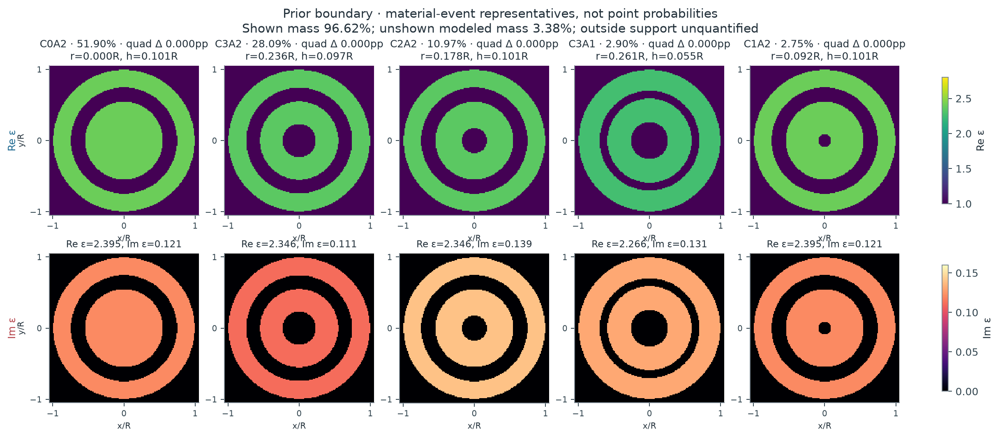
概率属于整个材料事件；图中材料仅是该事件的代表。C 表示中心空腔半径分箱，A 表示环形空腔半宽分箱；不同分箱不自动等于分离的 posterior mode。所有图共用实部与损耗色标。
| 不重叠材料事件 | 后验质量 | 先验与 evidence 信息 | 代表材料 | 事件内部的不确定性 | ||||||||||||||||||||
|---|---|---|---|---|---|---|---|---|---|---|---|---|---|---|---|---|---|---|---|---|---|---|---|---|
| C0A2 {"central_radius_bin":0,"annular_halfwidth_bin":2,"central_edges":[0,0.1,0.2,0.2925518253046813],"annular_edges":[0,0.06,0.11702073012187252],"zero_is_atom":true,"disjoint":true} | 51.90% 误差：{"MC_residual_SE":null,"MC_interval95":null,"quadrature_refinement_max":6.265751802125852e-08,"inter… | 21.68% 事件 odds 倍率 3.9 | r=0.0000R h=0.1011R ε=2.3946+0.1211i | 条件材料分布与预测
Forward prediction、补偿与数值误差{
"forward_prediction": {
"unscaled_field": [
0.6645240120913942,
0.6385697747503638,
0.5821312401074779,
0.49367497577264474,
0.46662488388732387,
0.3142728852385652,
0.34136685889234825,
0.15548154015480795,
0.22615551924645455,
0.0485144006145852,
0.13322298978556554,
-0.004422606853100808,
0.06741829869283252,
-0.0197882302333362,
0.028908751795804214,
-0.018569625301953697,
0.2501409626383495,
0.2436158871796466,
0.22962795269549835,
0.2057321158518799,
0.1993407545994094,
0.15271593997269847,
0.16395685764125909,
0.09540847353771267,
0.12828123904638505,
0.04299239152871037,
0.09646729268755846,
0.0010904899192432564,
0.07166499836860359,
-0.028217910391992035,
0.055990769699326357,
-0.04514812068154398,
1.1513921907193154,
1.11018392300458,
0.7972820360986614,
0.6801745540334532,
0.38687755204530644,
0.24337203674908617,
0.0677935242361771,
-0.02854164051469196,
-0.09229242657695978,
-0.11895565352216635,
-0.11083238980772667,
-0.10694343230365812,
-0.052157012594402634,
-0.07174812343646157,
0.014900126885611365,
-0.049271473929861476,
0.8883799592339847,
0.8949960576058327,
0.6930245650012867,
0.724231120858576,
0.43510861483923213,
0.5166570374752707,
0.18291899215226018,
0.339673713287939,
-0.013350606309801802,
0.2300490163607021,
-0.13492865560420259,
0.1877897534339687,
-0.19188556233446608,
0.18912758350762016,
-0.20966588713492354,
0.20460251144122044
],
"packing": "each frequency real32: Re16 then Im16",
"frequencies": [
1.6,
2.4
],
"posterior_gain_mean": 0.836235980377974,
"posterior_gain_SD": 0.032328845426467114,
"gain_support": [
0.7,
1.3
],
"gain_used_for_both_frequencies": true,
"mean_prediction": [
0.5556988887359516,
0.5339950216281125,
0.4867990882799225,
0.41282877735331014,
0.39020851724627453,
0.26280629429368607,
0.2854632499143923,
0.13001925816203316,
0.18911938235494868,
0.040569487360387436,
0.11140585747221722,
-0.0036983429776291004,
0.05637760710281588,
-0.016547630109118965,
0.024174538399467854,
-0.015528588819630882,
0.20917687312457037,
0.20372037025132167,
0.1920231561445071,
0.1720405975946317,
0.16669591135172224,
0.12770656378241332,
0.1371066235893302,
0.07978399840517514,
0.10727338769805504,
0.03595178467880482,
0.08066942107498941,
0.0009119069067106822,
0.059928850169555126,
-0.02359683196086528,
0.04682149619163353,
-0.03775448296035401,
0.9628355774057099,
0.9283757412536001,
0.6667159250947113,
0.5687864350203159,
0.32352092902083746,
0.2035164537474564,
0.05669138420291749,
-0.02386754673739913,
-0.07717824782004615,
-0.09947499754461137,
-0.09268203214849809,
-0.08942994595743503,
-0.043615570560466624,
-0.059998362342169334,
0.012460022213945428,
-0.041202579306405494,
0.7428952861581758,
0.7484279056664351,
0.5795320765398699,
0.6056281213714102,
0.36385347910098753,
0.43204720425231263,
0.15296344273219623,
0.2840473806399665,
-0.011164257356117474,
0.1923752647313803,
-0.11283219660026236,
0.1570365485677928,
-0.16046161133914108,
0.15815529021101188,
-0.17533015868009041,
0.1710959817428446
],
"whitened_residual_C": 6.0029444436302555,
"marginal_log_likelihood_C": 46.070853502957554,
"likelihood_status": "full vector-Mie n14; proper bounded-gain marginal",
"new_or_paid_cache_cost": "sole PHYSICS_LEDGER receipt"
},
"compensation_diagnostics": {
"raw_material_parameters": [
-0.5727218850228359,
-2.1328125,
2.394630470963837,
0.1210739058072326
],
"gain_is_instrument_nuisance": true,
"minimum_residual_is_not_evidence": true
},
"indistinguishable_from": [
{
"hypothesis_id": "prior_boundary-E11",
"raw_noise_distance": 1.1557555896297906,
"conditional_gain_adjusted_noise_distance": 0.459352749462517,
"material_distance": 0.14572379812884378,
"frequencies": [
1.6
],
"noise_scale": "fixed sigma, joint real-channel whitened norm",
"status": "representative posterior worlds; not global compensation minimum or exact equivalence"
},
{
"hypothesis_id": "prior_boundary-E8",
"raw_noise_distance": 1.3051531237279705,
"conditional_gain_adjusted_noise_distance": 0.20407117254300858,
"material_distance": 0.07617824147806221,
"frequencies": [
1.6
],
"noise_scale": "fixed sigma, joint real-channel whitened norm",
"status": "representative posterior worlds; not global compensation minimum or exact equivalence"
},
{
"hypothesis_id": "prior_boundary-E10",
"raw_noise_distance": 2.248483483991528,
"conditional_gain_adjusted_noise_distance": 1.0832970154649668,
"material_distance": 0.3240451042057493,
"frequencies": [
1.6
],
"noise_scale": "fixed sigma, joint real-channel whitened norm",
"status": "representative posterior worlds; not global compensation minimum or exact equivalence"
},
{
"hypothesis_id": "prior_boundary-E5",
"raw_noise_distance": 0.055475855766618724,
"conditional_gain_adjusted_noise_distance": 0.03178741621422144,
"material_distance": 0.02582138263812058,
"frequencies": [
1.6
],
"noise_scale": "fixed sigma, joint real-channel whitened norm",
"status": "representative posterior worlds; not global compensation minimum or exact equivalence"
}
],
"mass_error": {
"MC_residual_SE": null,
"MC_interval95": null,
"quadrature_refinement_max": 6.265751802125852e-08,
"interval_scope": "residual Monte Carlo only, cubature and untested full-field discrepancy separate"
}
} | ||||||||||||||||||||
| C3A2 {"central_radius_bin":3,"annular_halfwidth_bin":2,"central_edges":[0,0.1,0.2,0.2925518253046813],"annular_edges":[0,0.06,0.11702073012187252],"zero_is_atom":true,"disjoint":true} | 28.09% 误差：{"MC_residual_SE":null,"MC_interval95":null,"quadrature_refinement_max":6.265751802125852e-08,"inter… | 15.69% 事件 odds 倍率 2.1 | r=0.2362R h=0.0968R ε=2.3462+0.1107i | 条件材料分布与预测
Forward prediction、补偿与数值误差{
"forward_prediction": {
"unscaled_field": [
0.6476855685243041,
0.622182535544891,
0.5671545508185165,
0.4803171447114513,
0.4541954378120657,
0.3049231296552761,
0.33159714909597154,
0.15015761245730067,
0.21870807479064572,
0.04660205646488971,
0.12753041888845104,
-0.003770543489088831,
0.06288106645049624,
-0.017401554329943218,
0.0250036730181096,
-0.015187308192497506,
0.2322933563312805,
0.22619524897569115,
0.21312338797946337,
0.1908340378503922,
0.18480226387378382,
0.14145757478593426,
0.15168841439033992,
0.08827626976016387,
0.11827047504607482,
0.03988627863019327,
0.0884419598126368,
0.001464804495024197,
0.0651683869996489,
-0.025199481369999326,
0.05045130232889666,
-0.04048893525284371,
1.1387349505156417,
1.0977857679263794,
0.7902589890458287,
0.6742979131133259,
0.3848463971615989,
0.24456760019308743,
0.06703176318100196,
-0.02176727282865812,
-0.09608719258076912,
-0.1080379214575152,
-0.12034055819938504,
-0.09242979566759399,
-0.06766577193883645,
-0.05388395988318934,
-0.004936867553754747,
-0.028850876689448062,
0.8322162731045922,
0.8392100105619092,
0.6462550234893404,
0.6794354985015938,
0.3994974470075027,
0.4870171861932165,
0.1560264014845152,
0.3264015607322944,
-0.03647990116595473,
0.23220795649708095,
-0.15926535591293997,
0.20316807702062825,
-0.22034731083041456,
0.21469337634646352,
-0.24224980472094645,
0.2366434789429911
],
"packing": "each frequency real32: Re16 then Im16",
"frequencies": [
1.6,
2.4
],
"posterior_gain_mean": 0.8635208310197162,
"posterior_gain_SD": 0.033411778403745845,
"gain_support": [
0.7,
1.3
],
"gain_used_for_both_frequencies": true,
"mean_prediction": [
0.5592899803715845,
0.5372675801396783,
0.48974976903941925,
0.41476385995424975,
0.3922072219048388,
0.2633074743170567,
0.28634104575112207,
0.12966422629306476,
0.18885897849394065,
0.040241846525789306,
0.11012517329884776,
-0.0032559428470939674,
0.05429911075673851,
-0.01502660465602731,
0.02159119250314326,
-0.01311455699133799,
0.2005901520995464,
0.19532430936820044,
0.1840364850977636,
0.16478916695141865,
0.1595806044746147,
0.12215156253318361,
0.1309861056504094,
0.07622839782261735,
0.10212901889688314,
0.03444263246902844,
0.07637147463442048,
0.0012648891948247103,
0.05627425969815129,
-0.021760277093887673,
0.04356575051307579,
-0.03496303901663908,
0.9833213507804623,
0.9479608786014044,
0.6824050989416548,
0.5822702942864796,
0.33232288069192767,
0.21118921735923257,
0.05788332384677563,
-0.01879649352203575,
-0.08297329238769725,
-0.09329299571863636,
-0.10391657882170949,
-0.07981505396586333,
-0.058430803616214645,
-0.04652992181696471,
-0.004263087972652573,
-0.024913333014519548,
0.7186360877394086,
0.7246753257204847,
0.5580546749341815,
0.5867067062903915,
0.3449743674301738,
0.4205494853424502,
0.13473204787092444,
0.28185454696968326,
-0.031501154570342346,
0.20051640756374944,
-0.1375289524905928,
0.1754398667055306,
-0.1902744929612393,
0.18539220275712687,
-0.20918775268699566,
0.2043465735922484
],
"whitened_residual_C": 6.11333982813557,
"marginal_log_likelihood_C": 45.6169585241472,
"likelihood_status": "full vector-Mie n14; proper bounded-gain marginal",
"new_or_paid_cache_cost": "sole PHYSICS_LEDGER receipt"
},
"compensation_diagnostics": {
"raw_material_parameters": [
-1.9054923143495006,
-1.9780332488590697,
2.346192838874057,
0.11070905088975086
],
"gain_is_instrument_nuisance": true,
"minimum_residual_is_not_evidence": true
},
"indistinguishable_from": [
{
"hypothesis_id": "prior_boundary-E2",
"raw_noise_distance": 1.1557555896297906,
"conditional_gain_adjusted_noise_distance": 0.459352749462517,
"material_distance": 0.14572379812884378,
"frequencies": [
1.6
],
"noise_scale": "fixed sigma, joint real-channel whitened norm",
"status": "representative posterior worlds; not global compensation minimum or exact equivalence"
},
{
"hypothesis_id": "prior_boundary-E8",
"raw_noise_distance": 0.6419214979652313,
"conditional_gain_adjusted_noise_distance": 0.5096163549159727,
"material_distance": 0.12392530639469942,
"frequencies": [
1.6
],
"noise_scale": "fixed sigma, joint real-channel whitened norm",
"status": "representative posterior worlds; not global compensation minimum or exact equivalence"
},
{
"hypothesis_id": "prior_boundary-E10",
"raw_noise_distance": 3.3835499125320534,
"conditional_gain_adjusted_noise_distance": 1.5290078634148523,
"material_distance": 0.2866663259939588,
"frequencies": [
1.6
],
"noise_scale": "fixed sigma, joint real-channel whitened norm",
"status": "representative posterior worlds; not global compensation minimum or exact equivalence"
},
{
"hypothesis_id": "prior_boundary-E5",
"raw_noise_distance": 1.1073038076408614,
"conditional_gain_adjusted_noise_distance": 0.43650025670244713,
"material_distance": 0.143417856418759,
"frequencies": [
1.6
],
"noise_scale": "fixed sigma, joint real-channel whitened norm",
"status": "representative posterior worlds; not global compensation minimum or exact equivalence"
}
],
"mass_error": {
"MC_residual_SE": null,
"MC_interval95": null,
"quadrature_refinement_max": 6.265751802125852e-08,
"interval_scope": "residual Monte Carlo only, cubature and untested full-field discrepancy separate"
}
} | ||||||||||||||||||||
| C2A2 {"central_radius_bin":2,"annular_halfwidth_bin":2,"central_edges":[0,0.1,0.2,0.2925518253046813],"annular_edges":[0,0.06,0.11702073012187252],"zero_is_atom":true,"disjoint":true} | 10.97% 误差：{"MC_residual_SE":null,"MC_interval95":null,"quadrature_refinement_max":6.265751802125852e-08,"inter… | 4.84% 事件 odds 倍率 2.42 | r=0.1785R h=0.1011R ε=2.3462+0.1395i | 条件材料分布与预测
Forward prediction、补偿与数值误差{
"forward_prediction": {
"unscaled_field": [
0.6368520024296951,
0.6113885347170596,
0.5579851147751967,
0.4711588414872953,
0.44747499446491723,
0.29778075203247745,
0.32772144554198274,
0.14473438472652944,
0.21767657797404505,
0.042174925759971796,
0.1290088765541387,
-0.007971183214864366,
0.06629499715531963,
-0.021879948605040403,
0.029629553125972,
-0.020053830671497887,
0.2417206708496003,
0.23534931678206455,
0.22122127363999106,
0.1980066108060065,
0.19108682715606012,
0.14616307565023462,
0.1560913061586292,
0.09076945339405124,
0.12104865481084703,
0.04084177728029448,
0.09001411689946302,
0.0015937127332159677,
0.06596597577531031,
-0.025389561494790856,
0.05083653094226871,
-0.040746438695031514,
1.1142918848775125,
1.0729105517305502,
0.7755360309408028,
0.6576964594583955,
0.3818824897618998,
0.23722218541745546,
0.07361508177795648,
-0.022429076972146272,
-0.08483158322344478,
-0.1059326777047686,
-0.10946966240348587,
-0.09065696359165965,
-0.0602953562990104,
-0.053803497600791776,
-0.0013083480986759268,
-0.03032427160633351,
0.8401099525641972,
0.8461665599562842,
0.6519127004245827,
0.6814755627784732,
0.40405262683674553,
0.4835805295885367,
0.16227614983449018,
0.31822267388396613,
-0.02576376096190386,
0.2197172172072325,
-0.14272123477478182,
0.18608712740283062,
-0.198380527465307,
0.19289045111631234,
-0.2165875172849027,
0.2111151942524343
],
"packing": "each frequency real32: Re16 then Im16",
"frequencies": [
1.6,
2.4
],
"posterior_gain_mean": 0.8719331985140596,
"posterior_gain_SD": 0.033697222244139506,
"gain_support": [
0.7,
1.3
],
"gain_used_for_both_frequencies": true,
"mean_prediction": [
0.5552924034586076,
0.5330899606106699,
0.48652574584917196,
0.4108190356661962,
0.39016830317885637,
0.2596449235756001,
0.2857512082330722,
0.12619871500956728,
0.18979943487450418,
0.03677371791498521,
0.11248712237055562,
-0.006950339276478271,
0.05780480891511832,
-0.019077853570516116,
0.02583499102767102,
-0.017485600719858503,
0.2107642776808562,
0.2052088825498842,
0.19289017270427142,
0.1726485374870098,
0.16661494839608676,
0.12744443805636152,
0.1361011918391309,
0.07914489982524796,
0.10554634076504617,
0.03561130149700601,
0.07848629685956726,
0.0013896110409855828,
0.05751792425086729,
-0.022138001563022397,
0.044326059025851315,
-0.03552817261941587,
0.9715880872595097,
0.935506329089903,
0.6762156120211129,
0.5734673775469313,
0.3329760207546059,
0.20684189888953725,
0.06418743371352766,
-0.01955665682404154,
-0.07396747369502985,
-0.09236621849827789,
-0.09545023287972573,
-0.07904681623204844,
-0.05257352287334099,
-0.04691305575430191,
-0.0011407921424482893,
-0.02644073913431946,
0.7325197580427953,
0.7378007150983217,
0.5684243260331443,
0.594201167162603,
0.3523068992857713,
0.4216499179032556,
0.14149396236773382,
0.2774689138793431,
-0.022464278501264496,
0.19157873596811062,
-0.12444338273305154,
0.1622555441986434,
-0.17297456783573137,
0.16818758800466607,
-0.18884984670444438,
0.18407834657944205
],
"whitened_residual_C": 5.989808096894908,
"marginal_log_likelihood_C": 46.422477920871586,
"likelihood_status": "full vector-Mie n14; proper bounded-gain marginal",
"new_or_paid_cache_cost": "sole PHYSICS_LEDGER receipt"
},
"compensation_diagnostics": {
"raw_material_parameters": [
-1.4081252503028556,
-2.1328125,
2.346192838874057,
0.13946026955300142
],
"gain_is_instrument_nuisance": true,
"minimum_residual_is_not_evidence": true
},
"indistinguishable_from": [
{
"hypothesis_id": "prior_boundary-E2",
"raw_noise_distance": 1.3051531237279705,
"conditional_gain_adjusted_noise_distance": 0.20407117254300858,
"material_distance": 0.07617824147806221,
"frequencies": [
1.6
],
"noise_scale": "fixed sigma, joint real-channel whitened norm",
"status": "representative posterior worlds; not global compensation minimum or exact equivalence"
},
{
"hypothesis_id": "prior_boundary-E11",
"raw_noise_distance": 0.6419214979652313,
"conditional_gain_adjusted_noise_distance": 0.5096163549159727,
"material_distance": 0.12392530639469942,
"frequencies": [
1.6
],
"noise_scale": "fixed sigma, joint real-channel whitened norm",
"status": "representative posterior worlds; not global compensation minimum or exact equivalence"
},
{
"hypothesis_id": "prior_boundary-E10",
"raw_noise_distance": 3.351761428913413,
"conditional_gain_adjusted_noise_distance": 1.0684506946113455,
"material_distance": 0.31004519676400893,
"frequencies": [
1.6
],
"noise_scale": "fixed sigma, joint real-channel whitened norm",
"status": "representative posterior worlds; not global compensation minimum or exact equivalence"
},
{
"hypothesis_id": "prior_boundary-E5",
"raw_noise_distance": 1.2664911413294955,
"conditional_gain_adjusted_noise_distance": 0.20900159232205087,
"material_distance": 0.07166854730874432,
"frequencies": [
1.6
],
"noise_scale": "fixed sigma, joint real-channel whitened norm",
"status": "representative posterior worlds; not global compensation minimum or exact equivalence"
}
],
"mass_error": {
"MC_residual_SE": null,
"MC_interval95": null,
"quadrature_refinement_max": 6.265751802125852e-08,
"interval_scope": "residual Monte Carlo only, cubature and untested full-field discrepancy separate"
}
} | ||||||||||||||||||||
| C3A1 {"central_radius_bin":3,"annular_halfwidth_bin":1,"central_edges":[0,0.1,0.2,0.2925518253046813],"annular_edges":[0,0.06,0.11702073012187252],"zero_is_atom":true,"disjoint":true} | 2.90% 误差：{"MC_residual_SE":null,"MC_interval95":null,"quadrature_refinement_max":6.265751802125852e-08,"inter… | 2.40% 事件 odds 倍率 1.21 | r=0.2613R h=0.0554R ε=2.2655+0.1308i | 条件材料分布与预测
Forward prediction、补偿与数值误差{
"forward_prediction": {
"unscaled_field": [
0.6909026883103492,
0.6629795369649976,
0.6066533637696643,
0.5112634116819488,
0.48806890409135295,
0.3231819646387926,
0.3587146858736634,
0.15666494166501013,
0.23884595079227172,
0.044968879618715006,
0.14133689699429608,
-0.009204408576995584,
0.07170647297936208,
-0.023347094670653927,
0.03067118463227788,
-0.020282103540238336,
0.2911952577804185,
0.2833211513426408,
0.2674565989367429,
0.2386462499744076,
0.23239228250257493,
0.1762657529654876,
0.19140600481672299,
0.10907457095474533,
0.150059369544206,
0.04792332978933221,
0.11317022015790901,
-0.0006534167575370473,
0.08440017874575984,
-0.034389774485372185,
0.06621373986300637,
-0.05375002426663686,
1.1445316050583274,
1.0941630681997063,
0.7942678970386093,
0.6462453133348388,
0.3870043815091008,
0.19132822376272243,
0.06897234913312444,
-0.0888733984872441,
-0.0912667862184341,
-0.17399242375072346,
-0.10949605830418992,
-0.14689568001816808,
-0.04939522000280971,
-0.09442658014280603,
0.019416113402077474,
-0.05917700691739996,
0.977301785200414,
0.9791604989225174,
0.7607801139669128,
0.7770722948714027,
0.4740201102866968,
0.5345711412088859,
0.19196936251539476,
0.3342965002831229,
-0.029927458119737682,
0.22091526855385263,
-0.1702711280434346,
0.19263074859276097,
-0.23898642816091073,
0.2166005539926384,
-0.2628214438882357,
0.25183695768591463
],
"packing": "each frequency real32: Re16 then Im16",
"frequencies": [
1.6,
2.4
],
"posterior_gain_mean": 0.7916346830231519,
"posterior_gain_SD": 0.030368987072104465,
"gain_support": [
0.7,
1.3
],
"gain_used_for_both_frequencies": true,
"mean_prediction": [
0.5469425306604068,
0.5248375955961219,
0.480247843332727,
0.4047338488481747,
0.3863722721838153,
0.25584205213563005,
0.28397098664734705,
0.12402140143582087,
0.18907873854680335,
0.03559892476286773,
0.11188718965155545,
-0.007286529066265479,
0.05676533100772551,
-0.01848236988911464,
0.024280373524317868,
-0.016056016607119323,
0.2305202655908466,
0.22428684983688588,
0.21172791992173873,
0.188920648453154,
0.18396979089595267,
0.13953808347667096,
0.15152363195181437,
0.08634721340364611,
0.11879220144378154,
0.03793776998719198,
0.08958947136236661,
-0.0005172673677348561,
0.06681410874849694,
-0.027224138223965286,
0.05241709296822848,
-0.042550383422805794,
0.9060509143803283,
0.8661774336699138,
0.628770014907625,
0.5115902037770226,
0.306366090884528,
0.15146205777178545,
0.054600903743363134,
-0.07035526464063975,
-0.07224995337857185,
-0.1377384372243339,
-0.08668087740792194,
-0.11628771508865283,
-0.03910296932978311,
-0.0747513558403105,
0.015370468778595173,
-0.046846571113314785,
0.7736659889450902,
0.7751374111933184,
0.6022599243705143,
0.6151573798365961,
0.3752507597534087,
0.42318505592422095,
0.15196960544503108,
0.264640704037379,
-0.02369161382230719,
0.1748841885966036,
-0.13479253047665887,
0.15249318160274278,
-0.18918994530399783,
0.17146851090260137,
-0.20805857042415057,
0.19936287017120394
],
"whitened_residual_C": 5.848301579698657,
"marginal_log_likelihood_C": 46.561211730074156,
"likelihood_status": "full vector-Mie n14; proper bounded-gain marginal",
"new_or_paid_cache_cost": "sole PHYSICS_LEDGER receipt"
},
"compensation_diagnostics": {
"raw_material_parameters": [
-2.2764497041420118,
-1.220159450833467,
2.2655457988309595,
0.1307614322251886
],
"gain_is_instrument_nuisance": true,
"minimum_residual_is_not_evidence": true
},
"indistinguishable_from": [
{
"hypothesis_id": "prior_boundary-E2",
"raw_noise_distance": 2.248483483991528,
"conditional_gain_adjusted_noise_distance": 1.0832970154649668,
"material_distance": 0.3240451042057493,
"frequencies": [
1.6
],
"noise_scale": "fixed sigma, joint real-channel whitened norm",
"status": "representative posterior worlds; not global compensation minimum or exact equivalence"
},
{
"hypothesis_id": "prior_boundary-E11",
"raw_noise_distance": 3.3835499125320534,
"conditional_gain_adjusted_noise_distance": 1.5290078634148523,
"material_distance": 0.2866663259939588,
"frequencies": [
1.6
],
"noise_scale": "fixed sigma, joint real-channel whitened norm",
"status": "representative posterior worlds; not global compensation minimum or exact equivalence"
},
{
"hypothesis_id": "prior_boundary-E8",
"raw_noise_distance": 3.351761428913413,
"conditional_gain_adjusted_noise_distance": 1.0684506946113455,
"material_distance": 0.31004519676400893,
"frequencies": [
1.6
],
"noise_scale": "fixed sigma, joint real-channel whitened norm",
"status": "representative posterior worlds; not global compensation minimum or exact equivalence"
},
{
"hypothesis_id": "prior_boundary-E5",
"raw_noise_distance": 2.2959450046148313,
"conditional_gain_adjusted_noise_distance": 1.104438288823289,
"material_distance": 0.3230146835027328,
"frequencies": [
1.6
],
"noise_scale": "fixed sigma, joint real-channel whitened norm",
"status": "representative posterior worlds; not global compensation minimum or exact equivalence"
}
],
"mass_error": {
"MC_residual_SE": null,
"MC_interval95": null,
"quadrature_refinement_max": 6.265751802125852e-08,
"interval_scope": "residual Monte Carlo only, cubature and untested full-field discrepancy separate"
}
} | ||||||||||||||||||||
| C1A2 {"central_radius_bin":1,"annular_halfwidth_bin":2,"central_edges":[0,0.1,0.2,0.2925518253046813],"annular_edges":[0,0.06,0.11702073012187252],"zero_is_atom":true,"disjoint":true} | 2.75% 误差：{"MC_residual_SE":null,"MC_interval95":null,"quadrature_refinement_max":6.265751802125852e-08,"inter… | 1.16% 事件 odds 倍率 2.42 | r=0.0916R h=0.1011R ε=2.3946+0.1211i | 条件材料分布与预测
Forward prediction、补偿与数值误差{
"forward_prediction": {
"unscaled_field": [
0.6639697116542708,
0.6380485665807573,
0.5815779676023792,
0.49324995754598056,
0.4660731852489707,
0.31399488249400453,
0.3408170892083061,
0.1553832906474054,
0.22560780028213429,
0.0486067297680904,
0.13267719596063068,
-0.004151859453493841,
0.06687407288983727,
-0.01937251267746649,
0.028365548784996766,
-0.01805951643338051,
0.24952079416394893,
0.24303272050536479,
0.22900848929024226,
0.20525617037117766,
0.19872237125412878,
0.1524041909660689,
0.16333979890708936,
0.09529801586336305,
0.12766558959694202,
0.043095991821906245,
0.09585296721607232,
0.0013950962959852363,
0.07105175198704476,
-0.02774954456760729,
0.055378227533865766,
-0.044572917978187174,
1.1508713698234494,
1.109697125597468,
0.7967604079149991,
0.6797842050039782,
0.386354666096484,
0.24312739081336104,
0.06726906086419854,
-0.02861095689948992,
-0.09281861034925913,
-0.1188424897484199,
-0.1113602293883973,
-0.10666263264969313,
-0.05268623003344154,
-0.07133340810934945,
0.01436999655048982,
-0.048770675942042124,
0.8858264463990297,
0.8925950542724919,
0.6904765689046339,
0.722274006581329,
0.4325690474575017,
0.5153777861300993,
0.18038972542620743,
0.33922232623122023,
-0.015868958116959413,
0.23047420119112863,
-0.13743679471462808,
0.1890344936725865,
-0.19438540749090555,
0.1910374567331856,
-0.21216033405985335,
0.20694507919498573
],
"packing": "each frequency real32: Re16 then Im16",
"frequencies": [
1.6,
2.4
],
"posterior_gain_mean": 0.83728982528737,
"posterior_gain_SD": 0.03237063109154424,
"gain_support": [
0.7,
1.3
],
"gain_used_for_both_frequencies": true,
"mean_prediction": [
0.5559350838671098,
0.5342315728372591,
0.4869493148847798,
0.4129931707766767,
0.3902383358482387,
0.2629047203045333,
0.2853626810781726,
0.1301008482787427,
0.18889911568169607,
0.04069792027531481,
0.11108926622549462,
-0.0034763096764335736,
0.055992980806186685,
-0.01622040775509328,
0.02375018538637031,
-0.015121049359279553,
0.2089212221510986,
0.2034888240910511,
0.19174647798715147,
0.17185890302923798,
0.16638821950806135,
0.12760647842704279,
0.13676275168939098,
0.07979205905246825,
0.10689309920883266,
0.036083835463149805,
0.0802567141736212,
0.0011680999339245355,
0.059490909007594246,
-0.023234411322815993,
0.046367626456554685,
-0.03732045070650461,
0.9636128881677121,
0.9291381124134005,
0.6671193827390433,
0.5691763982408946,
0.3234908308748852,
0.20356809057669317,
0.05632370021823025,
-0.023955663103678387,
-0.07771607804274765,
-0.09950560747817055,
-0.09324078700857262,
-0.08930753705595249,
-0.04411364433975045,
-0.059726736813029854,
0.01203185190113973,
-0.040835190738659384,
0.7416934705403754,
0.7473607570441853,
0.5781290057431836,
0.6047526767800897,
0.36218566217041565,
0.4315205765058624,
0.15103848168574585,
0.2840274022637136,
-0.013286917169241538,
0.19297370364856625,
-0.11507442983466708,
0.1582766581804064,
-0.16275692387647453,
0.15995371877147246,
-0.17763968903788466,
0.17327300920325053
],
"whitened_residual_C": 6.0064415466170935,
"marginal_log_likelihood_C": 46.05878115569931,
"likelihood_status": "full vector-Mie n14; proper bounded-gain marginal",
"new_or_paid_cache_cost": "sole PHYSICS_LEDGER receipt"
},
"compensation_diagnostics": {
"raw_material_parameters": [
-1.0883494832707834,
-2.1328125,
2.394630470963837,
0.1210739058072326
],
"gain_is_instrument_nuisance": true,
"minimum_residual_is_not_evidence": true
},
"indistinguishable_from": [
{
"hypothesis_id": "prior_boundary-E2",
"raw_noise_distance": 0.055475855766618724,
"conditional_gain_adjusted_noise_distance": 0.03178741621422144,
"material_distance": 0.02582138263812058,
"frequencies": [
1.6
],
"noise_scale": "fixed sigma, joint real-channel whitened norm",
"status": "representative posterior worlds; not global compensation minimum or exact equivalence"
},
{
"hypothesis_id": "prior_boundary-E11",
"raw_noise_distance": 1.1073038076408614,
"conditional_gain_adjusted_noise_distance": 0.43650025670244713,
"material_distance": 0.143417856418759,
"frequencies": [
1.6
],
"noise_scale": "fixed sigma, joint real-channel whitened norm",
"status": "representative posterior worlds; not global compensation minimum or exact equivalence"
},
{
"hypothesis_id": "prior_boundary-E8",
"raw_noise_distance": 1.2664911413294955,
"conditional_gain_adjusted_noise_distance": 0.20900159232205087,
"material_distance": 0.07166854730874432,
"frequencies": [
1.6
],
"noise_scale": "fixed sigma, joint real-channel whitened norm",
"status": "representative posterior worlds; not global compensation minimum or exact equivalence"
},
{
"hypothesis_id": "prior_boundary-E10",
"raw_noise_distance": 2.2959450046148313,
"conditional_gain_adjusted_noise_distance": 1.104438288823289,
"material_distance": 0.3230146835027328,
"frequencies": [
1.6
],
"noise_scale": "fixed sigma, joint real-channel whitened norm",
"status": "representative posterior worlds; not global compensation minimum or exact equivalence"
}
],
"mass_error": {
"MC_residual_SE": null,
"MC_interval95": null,
"quadrature_refinement_max": 6.265751802125852e-08,
"interval_scope": "residual Monte Carlo only, cubature and untested full-field discrepancy separate"
}
} |
数值状态：EMPIRICAL_PROXY_REFERENCE; 13/17 and independent adaptive integration
未探索质量：declared radial support integrated; no guarantee for omitted modes outside tested support
模型适用性：radial concentric 3D vector model only; finite noise/frequency/calibration assumptions, no real-world certification
增益失配负控制
Target：joint-p2-radial-v1:C:tensor-Chebyshev-five-per-physical-axis-radial-v1
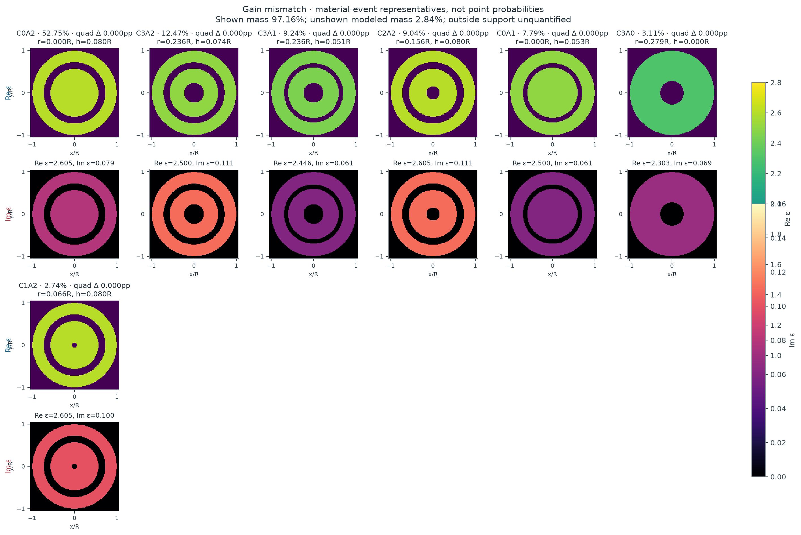
概率属于整个材料事件；图中材料仅是该事件的代表。C 表示中心空腔半径分箱，A 表示环形空腔半宽分箱；不同分箱不自动等于分离的 posterior mode。所有图共用实部与损耗色标。
| 不重叠材料事件 | 后验质量 | 先验与 evidence 信息 | 代表材料 | 事件内部的不确定性 | ||||||||||||||||||||
|---|---|---|---|---|---|---|---|---|---|---|---|---|---|---|---|---|---|---|---|---|---|---|---|---|
| C0A2 {"central_radius_bin":0,"annular_halfwidth_bin":2,"central_edges":[0,0.1,0.2,0.2925518253046813],"annular_edges":[0,0.06,0.11702073012187252],"zero_is_atom":true,"disjoint":true} | 52.75% 误差：{"MC_residual_SE":null,"MC_interval95":null,"quadrature_refinement_max":1.2866888490226103e-06,"inte… | 21.68% 事件 odds 倍率 4.03 | r=0.0000R h=0.0805R ε=2.6054+0.0789i | 条件材料分布与预测
Forward prediction、补偿与数值误差{
"forward_prediction": {
"unscaled_field": [
0.8106868933099862,
0.7826872827931546,
0.7069185252813442,
0.6123563179834313,
0.5609880784656915,
0.40116653638403477,
0.4020127473880476,
0.21405101764244014,
0.2549465841046334,
0.08822515506800699,
0.13555269881535598,
0.026705718579722114,
0.05047077856747821,
0.010010798568136473,
0.0004181503164736053,
0.012790563991755008,
0.339628703494085,
0.3326251281612381,
0.31183530256041275,
0.2861122362565437,
0.2701808333724892,
0.21981485560843395,
0.22053710649090758,
0.14631107867737198,
0.169354608758931,
0.07703414297937615,
0.12270348038153991,
0.019867311178456724,
0.08564427122290717,
-0.021337223602009542,
0.061902217597550976,
-0.04572051881922809,
1.2704489721708634,
1.226775797752883,
0.8404690226138782,
0.7155256124341561,
0.3514268703224875,
0.19301468597942154,
-0.010033264618960161,
-0.13611060921609663,
-0.1603814793350846,
-0.24930455612226537,
-0.12750951452466047,
-0.23888276744758657,
-0.002064902031918543,
-0.19936101645135287,
0.11871409814156386,
-0.1740896856410398,
1.1876010964404973,
1.2016494485405187,
0.9120254306645964,
0.9693067044608802,
0.5515369937327526,
0.6798836046840765,
0.2076751288333087,
0.4236542431336283,
-0.04420351551252459,
0.2553577671990134,
-0.1781960992204007,
0.18149045727577387,
-0.21653934348118137,
0.17318665724919693,
-0.20821570020844155,
0.18979419552068497
],
"packing": "each frequency real32: Re16 then Im16",
"frequencies": [
1.6,
2.4
],
"posterior_gain_mean": 1.1532747185677632,
"posterior_gain_SD": 0.026241770454908515,
"gain_support": [
0.7,
1.3
],
"gain_used_for_both_frequencies": true,
"mean_prediction": [
0.9349446987286486,
0.9026534557898427,
0.8152712632941804,
0.7062150602855334,
0.6469733683123907,
0.46265522434710205,
0.4636311381046039,
0.24685962713072845,
0.29402345003308367,
0.10174784088165302,
0.15632950057738043,
0.030799030079178905,
0.05820667294830433,
0.011545200901306158,
0.00048224218855011825,
0.014751034087914222,
0.3916851974396752,
0.38360815106871804,
0.3596317707998533,
0.3299660087475588,
0.3115927245700612,
0.25350691573883016,
0.2543398694220503,
0.16873686808499203,
0.1953123887546098,
0.08884152956464886,
0.1415108218043055,
0.022912467708032853,
0.09877137279153946,
-0.024607680544624987,
0.07139026257853603,
-0.0527283184740174,
1.4651766808350566,
1.4148095128991993,
0.9692916755199434,
0.8251975993080278,
0.40529172496831656,
0.22259895765236257,
-0.011571110429747176,
-0.15697292453778064,
-0.1849639054436512,
-0.2875166417995667,
-0.14705349947813992,
-0.27549745639880385,
-0.00238139930973086,
-0.2299180201413172,
0.1369099681242379,
-0.20077323321322055,
1.3696303202681814,
1.3858319295826746,
1.0518158718763555,
1.1178769167929676,
0.6360736712268504,
0.7840925728508646,
0.23950647575875805,
0.4885897280199739,
-0.050978796912412555,
0.29449765710053455,
-0.20550905617828083,
0.20930835603745276,
-0.24972935041210764,
0.19973179339875927,
-0.24012990305928017,
0.218884847424913
],
"whitened_residual_C": 6.360215693790644,
"marginal_log_likelihood_C": 43.72754095576245,
"likelihood_status": "full vector-Mie n14; proper bounded-gain marginal",
"new_or_paid_cache_cost": "sole PHYSICS_LEDGER receipt"
},
"compensation_diagnostics": {
"raw_material_parameters": [
-0.010902547856762812,
-1.5624882916167764,
2.605369529036163,
0.07892609419276742
],
"gain_is_instrument_nuisance": true,
"minimum_residual_is_not_evidence": true
},
"indistinguishable_from": [
{
"hypothesis_id": "gain_negative_control-E11",
"raw_noise_distance": 2.429719548082268,
"conditional_gain_adjusted_noise_distance": 0.6704905863007079,
"material_distance": 0.18672087352770741,
"frequencies": [
1.6
],
"noise_scale": "fixed sigma, joint real-channel whitened norm",
"status": "representative posterior worlds; not global compensation minimum or exact equivalence"
},
{
"hypothesis_id": "gain_negative_control-E10",
"raw_noise_distance": 0.845458444884825,
"conditional_gain_adjusted_noise_distance": 0.9696048160396534,
"material_distance": 0.3078810463921313,
"frequencies": [
1.6
],
"noise_scale": "fixed sigma, joint real-channel whitened norm",
"status": "representative posterior worlds; not global compensation minimum or exact equivalence"
},
{
"hypothesis_id": "gain_negative_control-E8",
"raw_noise_distance": 0.8227240169177874,
"conditional_gain_adjusted_noise_distance": 0.7988307209559026,
"material_distance": 0.06824830443397355,
"frequencies": [
1.6
],
"noise_scale": "fixed sigma, joint real-channel whitened norm",
"status": "representative posterior worlds; not global compensation minimum or exact equivalence"
},
{
"hypothesis_id": "gain_negative_control-E1",
"raw_noise_distance": 2.091370390879839,
"conditional_gain_adjusted_noise_distance": 1.2597701678143431,
"material_distance": 0.27143568897626635,
"frequencies": [
1.6
],
"noise_scale": "fixed sigma, joint real-channel whitened norm",
"status": "representative posterior worlds; not global compensation minimum or exact equivalence"
},
{
"hypothesis_id": "gain_negative_control-E5",
"raw_noise_distance": 0.5184397635516949,
"conditional_gain_adjusted_noise_distance": 0.5642405205528245,
"material_distance": 0.021855326824223916,
"frequencies": [
1.6
],
"noise_scale": "fixed sigma, joint real-channel whitened norm",
"status": "representative posterior worlds; not global compensation minimum or exact equivalence"
}
],
"mass_error": {
"MC_residual_SE": null,
"MC_interval95": null,
"quadrature_refinement_max": 1.2866888490226103e-06,
"interval_scope": "residual Monte Carlo only, cubature and untested full-field discrepancy separate"
}
} | ||||||||||||||||||||
| C3A2 {"central_radius_bin":3,"annular_halfwidth_bin":2,"central_edges":[0,0.1,0.2,0.2925518253046813],"annular_edges":[0,0.06,0.11702073012187252],"zero_is_atom":true,"disjoint":true} | 12.47% 误差：{"MC_residual_SE":null,"MC_interval95":null,"quadrature_refinement_max":1.2866888490226103e-06,"inte… | 15.69% 事件 odds 倍率 0.766 | r=0.2362R h=0.0744R ε=2.5000+0.1107i | 条件材料分布与预测
Forward prediction、补偿与数值误差{
"forward_prediction": {
"unscaled_field": [
0.7618360701742708,
0.7340573384272908,
0.6649987765032834,
0.5709396431438493,
0.5288653266260974,
0.369073055879296,
0.3806450211736241,
0.1908941328027433,
0.24362888386438017,
0.07202665473524095,
0.1324907579160272,
0.015064285109387373,
0.05336370487289227,
0.0009088833491694675,
0.006850393619989085,
0.0048624443135185215,
0.31978983486301654,
0.3129088813464342,
0.29263766806555375,
0.2675342481974885,
0.25221925348870944,
0.20359685955392542,
0.20447961656528302,
0.13385351957393324,
0.15574920554857197,
0.06942128441656986,
0.11176202316633405,
0.017417965387909823,
0.07710717738598784,
-0.019246888159089308,
0.05503789731447205,
-0.0405450255892834,
1.2197916487432645,
1.1733507618007268,
0.8197959625779401,
0.6855229886835541,
0.36206887309452457,
0.18902545809457869,
0.018073574538998483,
-0.11998759383349397,
-0.13483849213532423,
-0.2207107211710555,
-0.12062805274961666,
-0.20289447948014647,
-0.01994829127171195,
-0.15839650486415705,
0.08076438332723722,
-0.12977239345085662,
1.0888423928030986,
1.1004427605235336,
0.8318831410636816,
0.8818139411564379,
0.49534487083497614,
0.614651895265407,
0.17249755859720092,
0.3862988425771309,
-0.06816688346488763,
0.24667617847781964,
-0.20295034409130772,
0.19765235748935425,
-0.2505312442969012,
0.20758644714320684,
-0.25255494639062076,
0.23499995566675305
],
"packing": "each frequency real32: Re16 then Im16",
"frequencies": [
1.6,
2.4
],
"posterior_gain_mean": 1.227328708003397,
"posterior_gain_SD": 0.027429323807555184,
"gain_support": [
0.7,
1.3
],
"gain_used_for_both_frequencies": true,
"mean_prediction": [
0.9350232797173731,
0.9009296447723791,
0.8161720891896146,
0.7007306145676611,
0.6490915980358027,
0.4529739568312019,
0.46717656204494973,
0.23428984937821984,
0.29901272326557937,
0.08840038109801003,
0.1626097107354685,
0.018488829580299217,
0.06549480695592146,
0.001115498626661963,
0.008407684750935918,
0.005967817497049151,
0.39248724485504577,
0.3840420530657073,
0.359162611060023,
0.3283524631868837,
0.30955593051787905,
0.24988027058986836,
0.2509637036120988,
0.1642822672403829,
0.19115547121848434,
0.08520273531092505,
0.13716873949658248,
0.02137756895559125,
0.0946358523989332,
-0.02362225837738096,
0.06754959140219462,
-0.049762073872459865,
1.4970853082854043,
1.4400870745156877,
1.0061591195771844,
0.8413620440076138,
0.44437752222334875,
0.23199637126296951,
0.0221822168879521,
-0.14726421851609853,
-0.1654911523415737,
-0.27088460425736954,
-0.14805027213015265,
-0.2490182193613899,
-0.02448311055338567,
-0.19440457766717964,
0.09912444624170916,
-0.15927338398854834,
1.3363675271783542,
1.3506049915050402,
1.020994060731496,
1.0822755650989144,
0.6079509803380009,
0.7543799164879312,
0.21171120572684288,
0.47411565936339767,
-0.08366317301157866,
0.30275275542639773,
-0.24908678360242956,
0.2425844125512347,
-0.30748418837739916,
0.2547768059712875,
-0.3099679360534678,
0.2884221919693316
],
"whitened_residual_C": 6.398095169907169,
"marginal_log_likelihood_C": 42.917804503346446,
"likelihood_status": "full vector-Mie n14; proper bounded-gain marginal",
"new_or_paid_cache_cost": "sole PHYSICS_LEDGER receipt"
},
"compensation_diagnostics": {
"raw_material_parameters": [
-1.9054923143495006,
-1.4550933247457427,
2.5,
0.11070905088975086
],
"gain_is_instrument_nuisance": true,
"minimum_residual_is_not_evidence": true
},
"indistinguishable_from": [
{
"hypothesis_id": "gain_negative_control-E2",
"raw_noise_distance": 2.429719548082268,
"conditional_gain_adjusted_noise_distance": 0.6704905863007079,
"material_distance": 0.18672087352770741,
"frequencies": [
1.6
],
"noise_scale": "fixed sigma, joint real-channel whitened norm",
"status": "representative posterior worlds; not global compensation minimum or exact equivalence"
},
{
"hypothesis_id": "gain_negative_control-E10",
"raw_noise_distance": 2.572719923961974,
"conditional_gain_adjusted_noise_distance": 0.9554115069650091,
"material_distance": 0.2414763905614539,
"frequencies": [
1.6
],
"noise_scale": "fixed sigma, joint real-channel whitened norm",
"status": "representative posterior worlds; not global compensation minimum or exact equivalence"
},
{
"hypothesis_id": "gain_negative_control-E8",
"raw_noise_distance": 2.0744260249830484,
"conditional_gain_adjusted_noise_distance": 0.9589444060570106,
"material_distance": 0.17388552586858597,
"frequencies": [
1.6
],
"noise_scale": "fixed sigma, joint real-channel whitened norm",
"status": "representative posterior worlds; not global compensation minimum or exact equivalence"
},
{
"hypothesis_id": "gain_negative_control-E1",
"raw_noise_distance": 4.299456468075281,
"conditional_gain_adjusted_noise_distance": 1.3840385787190146,
"material_distance": 0.2610354109848334,
"frequencies": [
1.6
],
"noise_scale": "fixed sigma, joint real-channel whitened norm",
"status": "representative posterior worlds; not global compensation minimum or exact equivalence"
},
{
"hypothesis_id": "gain_negative_control-E5",
"raw_noise_distance": 2.2863655452628437,
"conditional_gain_adjusted_noise_distance": 0.7875740965314639,
"material_distance": 0.18508097293755668,
"frequencies": [
1.6
],
"noise_scale": "fixed sigma, joint real-channel whitened norm",
"status": "representative posterior worlds; not global compensation minimum or exact equivalence"
}
],
"mass_error": {
"MC_residual_SE": null,
"MC_interval95": null,
"quadrature_refinement_max": 1.2866888490226103e-06,
"interval_scope": "residual Monte Carlo only, cubature and untested full-field discrepancy separate"
}
} | ||||||||||||||||||||
| C3A1 {"central_radius_bin":3,"annular_halfwidth_bin":1,"central_edges":[0,0.1,0.2,0.2925518253046813],"annular_edges":[0,0.06,0.11702073012187252],"zero_is_atom":true,"disjoint":true} | 9.24% 误差：{"MC_residual_SE":null,"MC_interval95":null,"quadrature_refinement_max":1.2866888490226103e-06,"inte… | 2.40% 事件 odds 倍率 4.13 | r=0.2362R h=0.0507R ε=2.4465+0.0605i | 条件材料分布与预测
Forward prediction、补偿与数值误差{
"forward_prediction": {
"unscaled_field": [
0.8115877672577667,
0.7823764802802593,
0.7099797366511034,
0.6109424144726167,
0.5665784878155691,
0.3980073803195504,
0.4095327928002316,
0.20894214694877486,
0.2632622182614553,
0.08162802985807265,
0.14358190037379423,
0.019550932764312922,
0.057616389931900956,
0.003159776500929961,
0.006705349757547048,
0.006554349919031783,
0.33599908994157873,
0.328085880827366,
0.31020166764752133,
0.28095336459359793,
0.2714330935677468,
0.21355927326954927,
0.2250622796449755,
0.13851735979388696,
0.1770634726783775,
0.06743832019831997,
0.13314506880329074,
0.008483257784172464,
0.09814181853211686,
-0.034210953338286484,
0.07566358800565996,
-0.059569260564782435,
1.2717758319155632,
1.2216423666386473,
0.8517145792906093,
0.7050335120661546,
0.3698614403543326,
0.1755064939929208,
0.007559788276234182,
-0.15804911060660307,
-0.15082552682822575,
-0.2690481290157173,
-0.12841984983852664,
-0.24947374545630827,
-0.011475427031409755,
-0.19764286757108163,
0.10447698004347852,
-0.1622455039591242,
1.1733454857806402,
1.1803994266768207,
0.9105496275958057,
0.944829386786088,
0.5617472570395736,
0.6544330055657347,
0.21997283055298214,
0.4042344120297928,
-0.04343257908547323,
0.2518849408048041,
-0.20021556756227357,
0.2025568822394525,
-0.2651306652542777,
0.22140644857023953,
-0.277814179879552,
0.25928863824105525
],
"packing": "each frequency real32: Re16 then Im16",
"frequencies": [
1.6,
2.4
],
"posterior_gain_mean": 1.150850982664235,
"posterior_gain_SD": 0.026187352787905297,
"gain_support": [
0.7,
1.3
],
"gain_used_for_both_frequencies": true,
"mean_prediction": [
0.9340165794668733,
0.9003987411439219,
0.8170808775966171,
0.7031036780470712,
0.652047409458964,
0.4580471847483725,
0.47131121702737505,
0.24046127513597254,
0.30297558258456214,
0.09394169837510842,
0.16524137113797938,
0.022500210183811917,
0.06630787897069396,
0.003636431891094604,
0.00771685835758041,
0.007543080045042977,
0.38668488283355457,
0.37757795834843527,
0.3569958940362344,
0.32333545572536526,
0.3123790424600347,
0.24577489949932066,
0.2590131456900729,
0.1594128396348502,
0.20377367152585266,
0.07761145706946186,
0.15323013326916435,
0.0097629655571089,
0.11294660829814171,
-0.03937170926724729,
0.0870775146082156,
-0.06855534205756172,
1.4636244658886508,
1.405928318110349,
0.9801965605260533,
0.8113885101725509,
0.425655402081393,
0.20198182107570756,
0.00870018976643767,
-0.18189097425081752,
-0.17357770576111456,
-0.30963430366171213,
-0.14779211038026188,
-0.2871071051073196,
-0.013206506475589642,
-0.22745748836075655,
0.12023743514882893,
-0.18672039766421214,
1.350345805315294,
1.3584638401273188,
1.0479069336831863,
1.087357828232816,
0.6464873827729319,
0.7531548675432346,
0.25315594820133275,
0.4652135703111863,
-0.04998442632015897,
0.2898820316435315,
-0.23041828267372008,
0.23311278697067767,
-0.30512588664230783,
0.25480582890525855,
-0.31972272191244094,
0.29840258411338977
],
"whitened_residual_C": 6.371250218482114,
"marginal_log_likelihood_C": 43.671602640321204,
"likelihood_status": "full vector-Mie n14; proper bounded-gain marginal",
"new_or_paid_cache_cost": "sole PHYSICS_LEDGER receipt"
},
"compensation_diagnostics": {
"raw_material_parameters": [
-1.9054923143495006,
-1.179460468583718,
2.4464547455512458,
0.060539730446998556
],
"gain_is_instrument_nuisance": true,
"minimum_residual_is_not_evidence": true
},
"indistinguishable_from": [
{
"hypothesis_id": "gain_negative_control-E2",
"raw_noise_distance": 0.845458444884825,
"conditional_gain_adjusted_noise_distance": 0.9696048160396534,
"material_distance": 0.3078810463921313,
"frequencies": [
1.6
],
"noise_scale": "fixed sigma, joint real-channel whitened norm",
"status": "representative posterior worlds; not global compensation minimum or exact equivalence"
},
{
"hypothesis_id": "gain_negative_control-E11",
"raw_noise_distance": 2.572719923961974,
"conditional_gain_adjusted_noise_distance": 0.9554115069650091,
"material_distance": 0.2414763905614539,
"frequencies": [
1.6
],
"noise_scale": "fixed sigma, joint real-channel whitened norm",
"status": "representative posterior worlds; not global compensation minimum or exact equivalence"
},
{
"hypothesis_id": "gain_negative_control-E8",
"raw_noise_distance": 1.440720377517057,
"conditional_gain_adjusted_noise_distance": 1.5520462066960263,
"material_distance": 0.3021014654432064,
"frequencies": [
1.6
],
"noise_scale": "fixed sigma, joint real-channel whitened norm",
"status": "representative posterior worlds; not global compensation minimum or exact equivalence"
},
{
"hypothesis_id": "gain_negative_control-E1",
"raw_noise_distance": 1.8576841075306034,
"conditional_gain_adjusted_noise_distance": 0.8746922034447422,
"material_distance": 0.1425422304253828,
"frequencies": [
1.6
],
"noise_scale": "fixed sigma, joint real-channel whitened norm",
"status": "representative posterior worlds; not global compensation minimum or exact equivalence"
},
{
"hypothesis_id": "gain_negative_control-E5",
"raw_noise_distance": 1.125554364083229,
"conditional_gain_adjusted_noise_distance": 1.265802436967293,
"material_distance": 0.3080785866465564,
"frequencies": [
1.6
],
"noise_scale": "fixed sigma, joint real-channel whitened norm",
"status": "representative posterior worlds; not global compensation minimum or exact equivalence"
}
],
"mass_error": {
"MC_residual_SE": null,
"MC_interval95": null,
"quadrature_refinement_max": 1.2866888490226103e-06,
"interval_scope": "residual Monte Carlo only, cubature and untested full-field discrepancy separate"
}
} | ||||||||||||||||||||
| C2A2 {"central_radius_bin":2,"annular_halfwidth_bin":2,"central_edges":[0,0.1,0.2,0.2925518253046813],"annular_edges":[0,0.06,0.11702073012187252],"zero_is_atom":true,"disjoint":true} | 9.04% 误差：{"MC_residual_SE":null,"MC_interval95":null,"quadrature_refinement_max":1.2866888490226103e-06,"inte… | 4.84% 事件 odds 倍率 1.96 | r=0.1556R h=0.0805R ε=2.6054+0.1107i | 条件材料分布与预测
Forward prediction、补偿与数值误差{
"forward_prediction": {
"unscaled_field": [
0.7971586418721394,
0.7692142061551179,
0.694653715628845,
0.6002855226181695,
0.5506431401487489,
0.3911688027799163,
0.39399703794887503,
0.20646782244717465,
0.2493787859493451,
0.08305105274592839,
0.13225669392288036,
0.0236405912075028,
0.0490066270836246,
0.008551694373569051,
0.00014001748404990588,
0.012324148460518209,
0.3485012847970292,
0.34168290112009886,
0.3185098926197974,
0.2936599836427247,
0.27377548435298815,
0.22573949213118266,
0.2207972475610738,
0.15125424231532303,
0.1665589742245957,
0.08197811997114215,
0.117458483140069,
0.025637380590628596,
0.07867961770100823,
-0.014395730687350032,
0.053939948217589906,
-0.037806345456915115,
1.2414144684397441,
1.196128677138326,
0.8223232216145611,
0.6918439580000051,
0.34637996522992515,
0.1785119101671621,
-0.004835414092033395,
-0.14166800471135754,
-0.15118584921528086,
-0.2479033400899052,
-0.12090738774695356,
-0.23309908071906732,
-0.0020394780172170667,
-0.19137765636942583,
0.11231953861744809,
-0.1652664366997953,
1.1780260012638561,
1.1931320959539515,
0.8955578193099258,
0.9568666835031167,
0.5285264450972744,
0.6649230052875336,
0.18220372883230573,
0.4096810513808337,
-0.06696649376493552,
0.24533970133665198,
-0.19462804828890742,
0.17633467100552355,
-0.2258072858566288,
0.1719967992596563,
-0.21208435312484242,
0.19094116843082512
],
"packing": "each frequency real32: Re16 then Im16",
"frequencies": [
1.6,
2.4
],
"posterior_gain_mean": 1.1665809476861793,
"posterior_gain_SD": 0.026550775391500237,
"gain_support": [
0.7,
1.3
],
"gain_used_for_both_frequencies": true,
"mean_prediction": [
0.929950083891428,
0.8973506375901096,
0.8103697898920237,
0.7002816538581975,
0.6423697962716212,
0.4563300726522629,
0.4596294379159462,
0.2408614279771268,
0.2909205404456158,
0.09688577581868,
0.15428813933439472,
0.027578663294710173,
0.05717019746611796,
0.00997624372664075,
0.00016334172923557368,
0.014377116790496499,
0.40655495908836936,
0.398600762596848,
0.37156757237982646,
0.3425781420154377,
0.31938126398975164,
0.26334339066059187,
0.2575778623062974,
0.17645031734176453,
0.19430452599656675,
0.09563411288546632,
0.1370248285753228,
0.029908079745606764,
0.09178614298122846,
-0.01679378514788381,
0.06292531590981947,
-0.044104162311679115,
1.4482104670637712,
1.3953809257306442,
0.9593066031754667,
0.8070919801746032,
0.4040802680974319,
0.20824859333607806,
-0.005640901953939424,
-0.16526719519298558,
-0.17637053125430216,
-0.2891993134166508,
-0.14104825498010143,
-0.27192894649002675,
-0.0023792161981102157,
-0.22325752773340474,
0.131029833804017,
-0.19279667634596515,
1.3742626889533496,
1.3918851712127582,
1.0447406895583413,
1.116262442450397,
0.6165688811987858,
0.7756865096466733,
0.21255539865314685,
0.4779261091689233,
-0.07812183575951909,
0.2862086212903556,
-0.22704937301918507,
0.2057086676115543,
-0.26342247752907,
0.2006481890793194,
-0.24741356565778896,
0.22274832922033835
],
"whitened_residual_C": 6.417308854777765,
"marginal_log_likelihood_C": 43.2799163194352,
"likelihood_status": "full vector-Mie n14; proper bounded-gain marginal",
"new_or_paid_cache_cost": "sole PHYSICS_LEDGER receipt"
},
"compensation_diagnostics": {
"raw_material_parameters": [
-1.2899178912194815,
-1.5624882916167764,
2.605369529036163,
0.11070905088975086
],
"gain_is_instrument_nuisance": true,
"minimum_residual_is_not_evidence": true
},
"indistinguishable_from": [
{
"hypothesis_id": "gain_negative_control-E2",
"raw_noise_distance": 0.8227240169177874,
"conditional_gain_adjusted_noise_distance": 0.7988307209559026,
"material_distance": 0.06824830443397355,
"frequencies": [
1.6
],
"noise_scale": "fixed sigma, joint real-channel whitened norm",
"status": "representative posterior worlds; not global compensation minimum or exact equivalence"
},
{
"hypothesis_id": "gain_negative_control-E11",
"raw_noise_distance": 2.0744260249830484,
"conditional_gain_adjusted_noise_distance": 0.9589444060570106,
"material_distance": 0.17388552586858597,
"frequencies": [
1.6
],
"noise_scale": "fixed sigma, joint real-channel whitened norm",
"status": "representative posterior worlds; not global compensation minimum or exact equivalence"
},
{
"hypothesis_id": "gain_negative_control-E10",
"raw_noise_distance": 1.440720377517057,
"conditional_gain_adjusted_noise_distance": 1.5520462066960263,
"material_distance": 0.3021014654432064,
"frequencies": [
1.6
],
"noise_scale": "fixed sigma, joint real-channel whitened norm",
"status": "representative posterior worlds; not global compensation minimum or exact equivalence"
},
{
"hypothesis_id": "gain_negative_control-E1",
"raw_noise_distance": 2.5704488823979137,
"conditional_gain_adjusted_noise_distance": 1.4731540518319508,
"material_distance": 0.27959935364441085,
"frequencies": [
1.6
],
"noise_scale": "fixed sigma, joint real-channel whitened norm",
"status": "representative posterior worlds; not global compensation minimum or exact equivalence"
},
{
"hypothesis_id": "gain_negative_control-E5",
"raw_noise_distance": 0.37593611313723757,
"conditional_gain_adjusted_noise_distance": 0.2973588806831635,
"material_distance": 0.06347180848051137,
"frequencies": [
1.6
],
"noise_scale": "fixed sigma, joint real-channel whitened norm",
"status": "representative posterior worlds; not global compensation minimum or exact equivalence"
}
],
"mass_error": {
"MC_residual_SE": null,
"MC_interval95": null,
"quadrature_refinement_max": 1.2866888490226103e-06,
"interval_scope": "residual Monte Carlo only, cubature and untested full-field discrepancy separate"
}
} | ||||||||||||||||||||
| C0A1 {"central_radius_bin":0,"annular_halfwidth_bin":1,"central_edges":[0,0.1,0.2,0.2925518253046813],"annular_edges":[0,0.06,0.11702073012187252],"zero_is_atom":true,"disjoint":true} | 7.79% 误差：{"MC_residual_SE":null,"MC_interval95":null,"quadrature_refinement_max":1.2866888490226103e-06,"inte… | 3.32% 事件 odds 倍率 2.46 | r=0.0000R h=0.0532R ε=2.5000+0.0605i | 条件材料分布与预测
Forward prediction、补偿与数值误差{
"forward_prediction": {
"unscaled_field": [
0.8389887954149968,
0.8093466851835944,
0.7338453928490934,
0.6333696889198159,
0.5854785568943437,
0.4145280165621146,
0.4230356499616495,
0.21974891968274732,
0.271790102607137,
0.08792827479347154,
0.1480911507989127,
0.022848814036036086,
0.05927900197043017,
0.004747510765452639,
0.006702813749068894,
0.00733180730738094,
0.36459971533142005,
0.35613249084063187,
0.33688320950000394,
0.30551436603030757,
0.2951929430612239,
0.23288355223461626,
0.2452685273935336,
0.1515942321003277,
0.19352451583044356,
0.07408703579273883,
0.14612072971090082,
0.009304025711998483,
0.10830031640493479,
-0.03798569721254406,
0.0839949348766712,
-0.06626718258167906,
1.2783161734093154,
1.2287739063231986,
0.8469207918467657,
0.7022454428479474,
0.3543194296955173,
0.16282436138571701,
-0.011920393450338079,
-0.17673015095020603,
-0.1655130897393765,
-0.28980200459714656,
-0.13206557464298996,
-0.27050305913954326,
-0.002536828651122681,
-0.2188969907600266,
0.12298344282285018,
-0.18400615928222988,
1.2614704410830258,
1.2682394350062678,
0.982399869940197,
1.01454395082302,
0.6139284060036841,
0.6986389945033687,
0.25661013704682295,
0.42066181861910673,
-0.013119823074325956,
0.2426523158913022,
-0.1664114521123563,
0.17251604252374755,
-0.22182602777928287,
0.17652217294434536,
-0.22512692231618864,
0.2056432866314984
],
"packing": "each frequency real32: Re16 then Im16",
"frequencies": [
1.6,
2.4
],
"posterior_gain_mean": 1.1029411409561274,
"posterior_gain_SD": 0.02509406119803923,
"gain_support": [
0.7,
1.3
],
"gain_used_for_both_frequencies": true,
"mean_prediction": [
0.9253552592644235,
0.8926617563854533,
0.8093882748743767,
0.6985694873442493,
0.6457483875463944,
0.4572000035452991,
0.4665834224338186,
0.24237012419876572,
0.2997684858700986,
0.0969797117230154,
0.16333582282765868,
0.02520089702240002,
0.06538125006800678,
0.005236224940349831,
0.007392809044014463,
0.008086551916873207,
0.40213202601991566,
0.3927931757793141,
0.37156235145489647,
0.3369643634479554,
0.32558044142214343,
0.25685685081156356,
0.27051674944405313,
0.16719951531510344,
0.21344615029301156,
0.08171363978730081,
0.16116256434468285,
0.010261792734276753,
0.11944887454156837,
-0.04189598822361733,
0.09264146930741135,
-0.07308880196458512,
1.4099074988027411,
1.3552652942172263,
0.9341037844589386,
0.7745353899659561,
0.39079347605129816,
0.17958568692221555,
-0.013147492352761829,
-0.19492295433036885,
-0.18255119604032183,
-0.3196345536017497,
-0.14566055557776594,
-0.29834895267949063,
-0.0027979726868794436,
-0.2414304967407266,
0.13564349874574702,
-0.20294796326169753,
1.3913276475705416,
1.3987934494513674,
1.0835292334269921,
1.118982262670879,
0.67712689658308,
0.7705576897139871,
0.28302587733533113,
0.4639652261844371,
-0.014470392630739596,
0.2676312221447995,
-0.18354203686096823,
0.19027504077437793,
-0.24466105217264786,
0.1946935668312911,
-0.24830174455935855,
0.22681244118731278
],
"whitened_residual_C": 6.376008262248688,
"marginal_log_likelihood_C": 43.868834294731684,
"likelihood_status": "full vector-Mie n14; proper bounded-gain marginal",
"new_or_paid_cache_cost": "sole PHYSICS_LEDGER receipt"
},
"compensation_diagnostics": {
"raw_material_parameters": [
0.6621185356937482,
-1.2009042119567979,
2.5,
0.060539730446998556
],
"gain_is_instrument_nuisance": true,
"minimum_residual_is_not_evidence": true
},
"indistinguishable_from": [
{
"hypothesis_id": "gain_negative_control-E2",
"raw_noise_distance": 2.091370390879839,
"conditional_gain_adjusted_noise_distance": 1.2597701678143431,
"material_distance": 0.27143568897626635,
"frequencies": [
1.6
],
"noise_scale": "fixed sigma, joint real-channel whitened norm",
"status": "representative posterior worlds; not global compensation minimum or exact equivalence"
},
{
"hypothesis_id": "gain_negative_control-E11",
"raw_noise_distance": 4.299456468075281,
"conditional_gain_adjusted_noise_distance": 1.3840385787190146,
"material_distance": 0.2610354109848334,
"frequencies": [
1.6
],
"noise_scale": "fixed sigma, joint real-channel whitened norm",
"status": "representative posterior worlds; not global compensation minimum or exact equivalence"
},
{
"hypothesis_id": "gain_negative_control-E10",
"raw_noise_distance": 1.8576841075306034,
"conditional_gain_adjusted_noise_distance": 0.8746922034447422,
"material_distance": 0.1425422304253828,
"frequencies": [
1.6
],
"noise_scale": "fixed sigma, joint real-channel whitened norm",
"status": "representative posterior worlds; not global compensation minimum or exact equivalence"
},
{
"hypothesis_id": "gain_negative_control-E8",
"raw_noise_distance": 2.5704488823979137,
"conditional_gain_adjusted_noise_distance": 1.4731540518319508,
"material_distance": 0.27959935364441085,
"frequencies": [
1.6
],
"noise_scale": "fixed sigma, joint real-channel whitened norm",
"status": "representative posterior worlds; not global compensation minimum or exact equivalence"
},
{
"hypothesis_id": "gain_negative_control-E9",
"raw_noise_distance": 1.9577741473495425,
"conditional_gain_adjusted_noise_distance": 1.806165594101462,
"material_distance": 0.3716711452283543,
"frequencies": [
1.6
],
"noise_scale": "fixed sigma, joint real-channel whitened norm",
"status": "representative posterior worlds; not global compensation minimum or exact equivalence"
},
{
"hypothesis_id": "gain_negative_control-E5",
"raw_noise_distance": 2.2232687362309886,
"conditional_gain_adjusted_noise_distance": 1.222066427465195,
"material_distance": 0.27273612572755246,
"frequencies": [
1.6
],
"noise_scale": "fixed sigma, joint real-channel whitened norm",
"status": "representative posterior worlds; not global compensation minimum or exact equivalence"
}
],
"mass_error": {
"MC_residual_SE": null,
"MC_interval95": null,
"quadrature_refinement_max": 1.2866888490226103e-06,
"interval_scope": "residual Monte Carlo only, cubature and untested full-field discrepancy separate"
}
} | ||||||||||||||||||||
| C3A0 {"central_radius_bin":3,"annular_halfwidth_bin":0,"central_edges":[0,0.1,0.2,0.2925518253046813],"annular_edges":[0,0.06,0.11702073012187252],"zero_is_atom":true,"disjoint":true} | 3.11% 误差：{"MC_residual_SE":null,"MC_interval95":null,"quadrature_refinement_max":1.2866888490226103e-06,"inte… | 18.09% 事件 odds 倍率 0.146 | r=0.2794R h=0.0000R ε=2.3027+0.0692i | 条件材料分布与预测
Forward prediction、补偿与数值误差{
"forward_prediction": {
"unscaled_field": [
0.8459904375914622,
0.8138374542981613,
0.7425805430492726,
0.633087597080024,
0.595985467329755,
0.4081888027602388,
0.43439966591673884,
0.20830730208551285,
0.28267256865315643,
0.07416998645148344,
0.1573937084459876,
0.010054368656889873,
0.06659743134814042,
-0.004912852268314669,
0.012429686742978367,
0.0008780567275427256,
0.3984919368498634,
0.388038048410034,
0.36922826298914546,
0.3304778840127566,
0.32526870749471115,
0.24821483198797925,
0.27271665843114684,
0.1566751466430015,
0.21834976383562793,
0.07002723659951987,
0.16862972743444732,
-0.001798739500222905,
0.12901839375757315,
-0.05379070728653834,
0.10358781780690766,
-0.08466286736283289,
1.2507065957934214,
1.188131066276557,
0.8386935331876143,
0.6500946958306839,
0.3646388419368238,
0.09971065252575781,
0.007034462505882573,
-0.2417320899374762,
-0.14899281901008993,
-0.34367311453232485,
-0.12423285006799854,
-0.3038328978674156,
-0.003869135296040262,
-0.2304607898501004,
0.11548628782281625,
-0.17996448319202216,
1.3207880355177115,
1.3133849970974083,
1.0331967998849434,
1.0182216319852233,
0.6494967672450902,
0.6585198650563887,
0.26975976921672706,
0.3576120176935981,
-0.028518723140302644,
0.19006195832272238,
-0.21316464816509603,
0.16040172197658914,
-0.29743716195437636,
0.21811529705582947,
-0.3211831905781215,
0.29187503967785083
],
"packing": "each frequency real32: Re16 then Im16",
"frequencies": [
1.6,
2.4
],
"posterior_gain_mean": 1.0737662699579833,
"posterior_gain_SD": 0.024465070746058238,
"gain_support": [
0.7,
1.3
],
"gain_used_for_both_frequencies": true,
"mean_prediction": [
0.9083959965927064,
0.8738712076538374,
0.7973579398533911,
0.67978810767328,
0.6399490922038366,
0.43829936817847653,
0.4664437089424108,
0.22367335476537195,
0.30352426966214174,
0.07964122969484354,
0.16900405523290243,
0.010796041929491098,
0.0715100754474756,
-0.005275255055002859,
0.013346578370754075,
0.0009428276971450657,
0.42788720063961005,
0.4166621678430175,
0.39646485471292003,
0.3548560048199847,
0.3492625667806503,
0.26652471429198,
0.29283394907901794,
0.16823248780597577,
0.23445661145998875,
0.07519288463893162,
0.1810689134313179,
-0.0019314258037804357,
0.13853559942103968,
-0.05775864712146799,
0.11122910473961041,
-0.09090813129213655,
1.3429665561769493,
1.27577506325698,
0.9005608267687467,
0.6980497566615832,
0.39153688918830193,
0.10706593543765953,
0.0075533685661008185,
-0.2595637645413116,
-0.15998346351898918,
-0.36902459827621725,
-0.13339704402376418,
-0.32624551743361974,
-0.00415454697479193,
-0.24746102268891296,
0.12400528050679947,
-0.1932397918420138,
1.4182176423029855,
1.4102685093520608,
1.1094118739449805,
1.0933320437673035,
0.697407721114529,
0.707096419194833,
0.2896589411765714,
0.3839917223310032,
-0.030622442970327193,
0.20408212004909929,
-0.22888900914714103,
0.1722339587016396,
-0.3193779919386393,
0.2342048489404155,
-0.3448756765202736,
0.31340557264872426
],
"whitened_residual_C": 6.8098167959693825,
"marginal_log_likelihood_C": 41.09795257967991,
"likelihood_status": "full vector-Mie n14; proper bounded-gain marginal",
"new_or_paid_cache_cost": "sole PHYSICS_LEDGER receipt"
},
"compensation_diagnostics": {
"raw_material_parameters": [
-2.647407093934523,
0.48977936330639316,
2.302698652234993,
0.06923856777481138
],
"gain_is_instrument_nuisance": true,
"minimum_residual_is_not_evidence": true
},
"indistinguishable_from": [
{
"hypothesis_id": "gain_negative_control-E1",
"raw_noise_distance": 1.9577741473495425,
"conditional_gain_adjusted_noise_distance": 1.806165594101462,
"material_distance": 0.3716711452283543,
"frequencies": [
1.6
],
"noise_scale": "fixed sigma, joint real-channel whitened norm",
"status": "representative posterior worlds; not global compensation minimum or exact equivalence"
}
],
"mass_error": {
"MC_residual_SE": null,
"MC_interval95": null,
"quadrature_refinement_max": 1.2866888490226103e-06,
"interval_scope": "residual Monte Carlo only, cubature and untested full-field discrepancy separate"
}
} | ||||||||||||||||||||
| C1A2 {"central_radius_bin":1,"annular_halfwidth_bin":2,"central_edges":[0,0.1,0.2,0.2925518253046813],"annular_edges":[0,0.06,0.11702073012187252],"zero_is_atom":true,"disjoint":true} | 2.74% 误差：{"MC_residual_SE":null,"MC_interval95":null,"quadrature_refinement_max":1.2866888490226103e-06,"inte… | 1.16% 事件 odds 倍率 2.41 | r=0.0655R h=0.0805R ε=2.6054+0.1000i | 条件材料分布与预测
Forward prediction、补偿与数值误差{
"forward_prediction": {
"unscaled_field": [
0.8032709308656667,
0.7752187445999661,
0.7003287399860049,
0.6055501779700189,
0.5556538160670265,
0.3953281684260776,
0.39820187115516553,
0.20931958428657915,
0.2527368996578989,
0.08457157979957947,
0.13482917086910556,
0.02396841244462307,
0.0509457209301811,
0.007949843229891292,
0.001669085187993302,
0.011136431988229946,
0.3478533836031159,
0.34084168517248614,
0.31858582207075326,
0.29293415133373824,
0.274863547453178,
0.2249587782220186,
0.22297750604958314,
0.15006761246149494,
0.1697356136615771,
0.0800092108221196,
0.12142928833576455,
0.022657036961171627,
0.08320454750694875,
-0.01836714664280978,
0.058784539720841925,
-0.04249414945918925,
1.2505844845347163,
1.2058387078758852,
0.8278657320441468,
0.699244748451248,
0.3475689937516172,
0.18289320784015023,
-0.007031619622228776,
-0.14018368971676018,
-0.15466896530244062,
-0.24860434620306027,
-0.12347246234846815,
-0.23509325425952846,
-0.0023627280609962603,
-0.19393881656371276,
0.11417090780602213,
-0.1679849163192594,
1.1905089333428505,
1.2047187644372905,
0.9102669641509139,
0.9681271349991191,
0.5453150882352339,
0.674538072209293,
0.19970442767313104,
0.41595267850101253,
-0.05045963708429544,
0.24713410807389577,
-0.18029059581515314,
0.17359126598762653,
-0.21388482934683398,
0.16559290538049423,
-0.20196829465912386,
0.18225193095977396
],
"packing": "each frequency real32: Re16 then Im16",
"frequencies": [
1.6,
2.4
],
"posterior_gain_mean": 1.1584198589624262,
"posterior_gain_SD": 0.026360781490946398,
"gain_support": [
0.7,
1.3
],
"gain_used_for_both_frequencies": true,
"mean_prediction": [
0.9305249984420224,
0.8980287887845217,
0.8112747202019214,
0.7014813517587013,
0.6436804152402987,
0.45795600111201107,
0.46128495542214104,
0.2424799633073327,
0.2927754436563041,
0.09796939754365841,
0.15618878910221012,
0.027765484963653515,
0.05901653485467951,
0.009209256273144069,
0.0019335014280714754,
0.012900663973149986,
0.40296026757312425,
0.39483777686602706,
0.36905614307063056,
0.3393407382733071,
0.3184073918746226,
0.2605967161403105,
0.2583015711097516,
0.173841302462473,
0.196625105638745,
0.09268425871625481,
0.14066609906782415,
0.02624636156106691,
0.09638580018803206,
-0.021276867423505902,
0.06809717821258884,
-0.04922606662324227,
1.4487019021953045,
1.3968675059090172,
0.9590161045544062,
0.8100190028811118,
0.4026308247214608,
0.21186712403137253,
-0.008145567811059686,
-0.16239157007052185,
-0.17917160097151766,
-0.28798821166599525,
-0.14303295241945593,
-0.27233669444234077,
-0.0027370311071858544,
-0.22466257653107596,
0.1322578469182643,
-0.19459706307037145,
1.3791091906565331,
1.3955701411888344,
1.0544713282298575,
1.1214976991833772,
0.6317038276035426,
0.781398298473476,
0.2313415749392805,
0.48184784316418633,
-0.05845344567448473,
0.28628505861976733,
-0.2088522065764415,
0.20109156986249532,
-0.247768433846162,
0.1918261100960505,
-0.23396408341390398,
0.2111242561580512
],
"whitened_residual_C": 6.377033760955711,
"marginal_log_likelihood_C": 43.58932024164913,
"likelihood_status": "full vector-Mie n14; proper bounded-gain marginal",
"new_or_paid_cache_cost": "sole PHYSICS_LEDGER receipt"
},
"compensation_diagnostics": {
"raw_material_parameters": [
-1.0437846177512755,
-1.5624882916167764,
2.605369529036163,
0.1
],
"gain_is_instrument_nuisance": true,
"minimum_residual_is_not_evidence": true
},
"indistinguishable_from": [
{
"hypothesis_id": "gain_negative_control-E2",
"raw_noise_distance": 0.5184397635516949,
"conditional_gain_adjusted_noise_distance": 0.5642405205528245,
"material_distance": 0.021855326824223916,
"frequencies": [
1.6
],
"noise_scale": "fixed sigma, joint real-channel whitened norm",
"status": "representative posterior worlds; not global compensation minimum or exact equivalence"
},
{
"hypothesis_id": "gain_negative_control-E11",
"raw_noise_distance": 2.2863655452628437,
"conditional_gain_adjusted_noise_distance": 0.7875740965314639,
"material_distance": 0.18508097293755668,
"frequencies": [
1.6
],
"noise_scale": "fixed sigma, joint real-channel whitened norm",
"status": "representative posterior worlds; not global compensation minimum or exact equivalence"
},
{
"hypothesis_id": "gain_negative_control-E10",
"raw_noise_distance": 1.125554364083229,
"conditional_gain_adjusted_noise_distance": 1.265802436967293,
"material_distance": 0.3080785866465564,
"frequencies": [
1.6
],
"noise_scale": "fixed sigma, joint real-channel whitened norm",
"status": "representative posterior worlds; not global compensation minimum or exact equivalence"
},
{
"hypothesis_id": "gain_negative_control-E8",
"raw_noise_distance": 0.37593611313723757,
"conditional_gain_adjusted_noise_distance": 0.2973588806831635,
"material_distance": 0.06347180848051137,
"frequencies": [
1.6
],
"noise_scale": "fixed sigma, joint real-channel whitened norm",
"status": "representative posterior worlds; not global compensation minimum or exact equivalence"
},
{
"hypothesis_id": "gain_negative_control-E1",
"raw_noise_distance": 2.2232687362309886,
"conditional_gain_adjusted_noise_distance": 1.222066427465195,
"material_distance": 0.27273612572755246,
"frequencies": [
1.6
],
"noise_scale": "fixed sigma, joint real-channel whitened norm",
"status": "representative posterior worlds; not global compensation minimum or exact equivalence"
}
],
"mass_error": {
"MC_residual_SE": null,
"MC_interval95": null,
"quadrature_refinement_max": 1.2866888490226103e-06,
"interval_scope": "residual Monte Carlo only, cubature and untested full-field discrepancy separate"
}
} |
数值状态：EMPIRICAL_PROXY_REFERENCE; 13/17 and independent adaptive integration
未探索质量：declared radial support integrated; no guarantee for omitted modes outside tested support
模型适用性：radial concentric 3D vector model only; finite noise/frequency/calibration assumptions, no real-world certification
重要材料事件是否被保留？
下图展示 target C：ε 与有界、跨频共享 gain 均未知。每一行是十二个完整事件的数值后验质量，而非 Top-K 条件概率。
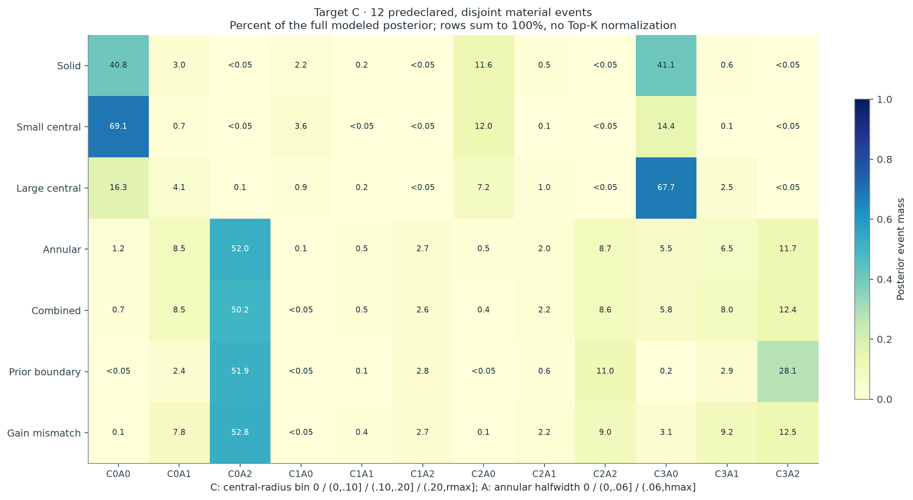
结构变化被什么吸收？
原始与补偿后距离采用相同噪声 whitening。ε 补偿改变材料本构，gain 补偿改变仪器响应，两者分别记录；低 residual 只是辨识诊断，不能代替 proper prior 下的边缘 evidence。
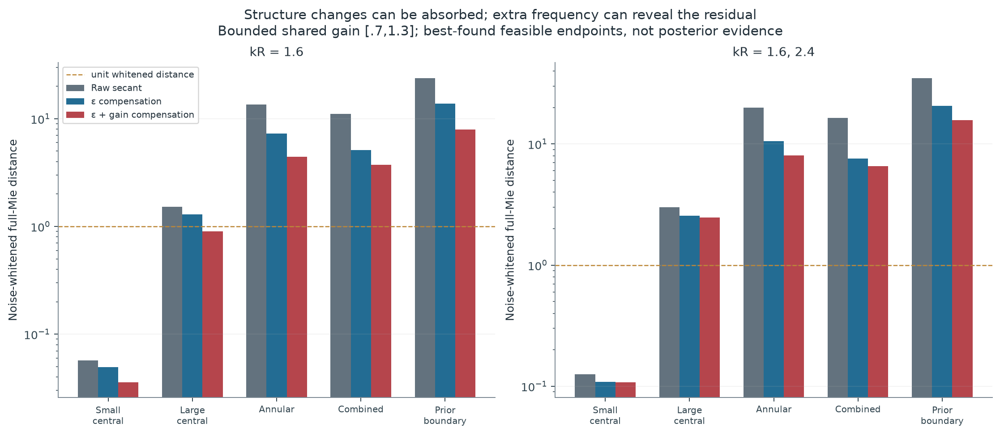
查看已验证的 full-Mie ε + gain 补偿数据
| 材料变化 | kR | raw 距离 | comp 距离 | 吸收比例 | gain | ε |
|---|---|---|---|---|---|---|
| 小中心空腔观测 | 1.6 | 0.0568 | 0.0356 | 37.4% | 1.0019 | 2.4988+0.1011i |
| 小中心空腔观测 | 1.6, 2.4 | 0.1260 | 0.1075 | 14.7% | 1.0005 | 2.5007+0.1007i |
| 大中心空腔观测 | 1.6 | 1.5297 | 0.9002 | 41.2% | 1.0532 | 2.4666+0.1300i |
| 大中心空腔观测 | 1.6, 2.4 | 3.0029 | 2.4679 | 17.8% | 1.0210 | 2.5100+0.1235i |
| 环形空腔观测 | 1.6 | 13.6010 | 4.4505 | 67.3% | 1.1507 | 2.7823+0.1600i |
| 环形空腔观测 | 1.6, 2.4 | 19.9248 | 8.0221 | 59.7% | 1.1159 | 2.8000+0.1600i |
| 中心与环形空腔观测 | 1.6 | 11.0769 | 3.7258 | 66.4% | 1.1404 | 2.6812+0.1600i |
| 中心与环形空腔观测 | 1.6, 2.4 | 16.4143 | 6.5703 | 60.0% | 1.0663 | 2.7877+0.1600i |
| 先验边界压力案例 | 1.6 | 23.9219 | 7.9126 | 66.9% | 1.3000 | 2.8000+0.1600i |
| 先验边界压力案例 | 1.6, 2.4 | 35.0490 | 15.7674 | 55.0% | 1.2552 | 2.8000+0.1600i |
额外情景信息如何帮助下游？
额外上下文是声明似然的独立、带噪声空腔体积传感器，而非直接揭示 truth。更新使用事件内样本；只给代表图会遗漏条件变化，未展示质量也必须保留。
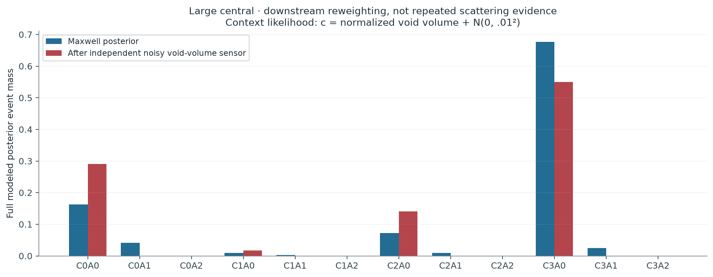
MAP、Top-K、完整 weighted samples 与条件样本的决策对照 · 原始更新数据
概率参考与方法的实际限制
显示概率使用保存的连续 prior 与数值 response target。材料结构的原子质量由 inactive latent 的先验测度产生；CDF、均值、SD 与 quantiles 保持同一 target。
独立自适应 reference 的内部收敛标记：0/7 个 target-C 案例。该标记与逐阶差、full-forward fidelity 分开报告，不能把小差异自动称为全域认证。
物理维度：3D vector concentric layered Maxwell
最高 n14/n18 相对场差：0
独立递推/边界解最大相对差：4.44e-16
独立 prior probes 最大 whitening 误差：0.014871
Uniform certificate：没有
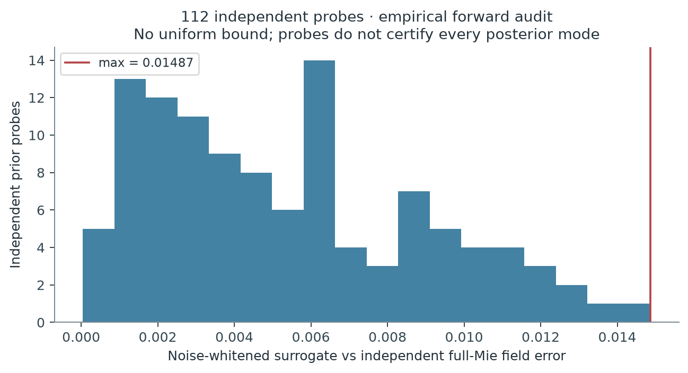
方法图按 target 分开：左侧是 64 个 fresh parents × 两次噪声的 proxy posterior，比较五种原始密度、三个训练 seeds；右侧是在单个 large_cavity development 案例上的 full-Mie C posterior，比较三种 IS64 修正和两次 SMC64。只允许同一面板内部比较，不能跨面板或据此宣称整体 NN 优越性。
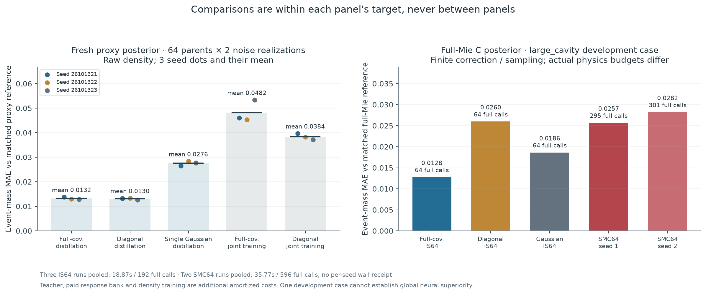
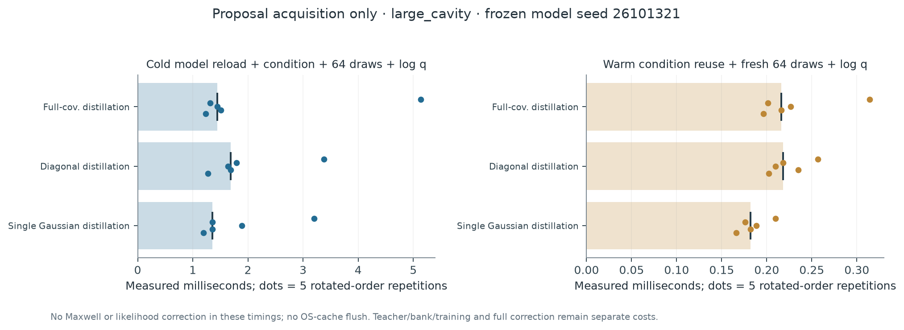
参考误差与连续积分 · false exclusion 与 false confidence · 失败与 NOT_RUN · 理论可声明范围 · 最终科研裁决
位置概率与条件材料场
严格真空的径向位置概率，以及材料实部/损耗后验均值。均值图是分布摘要，不是另一个具有点概率的候选；事件内仍保留不确定性，数值与支持范围见原始文件。
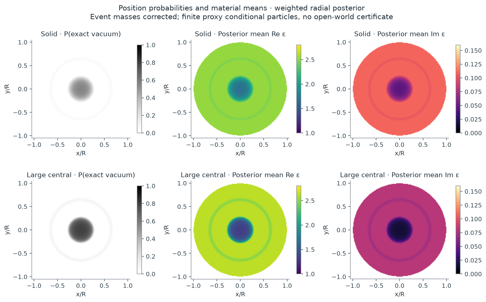